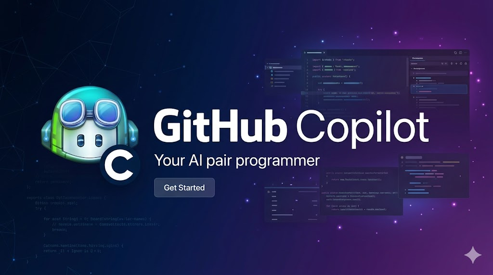

Labs
Index
GitHub Copilot Hands-On Labs

Welcome to the GitHub Copilot Hands-On Labs! This workspace contains a collection of self-contained labs designed to help you master AI-assisted development with GitHub Copilot.
Each lab is independent and can be completed in any order, though we recommend starting with the basics if you are new to GitHub Copilot.
Lab Index
| # | Lab | Description |
|---|---|---|
| 001 | Getting Started | Set up GitHub Copilot in VS Code and write your first AI-assisted code snippets. |
| 002 | Code Completion | Explore Ghost Text, multi-line completions, and how to accept or cycle through suggestions. |
| 003 | Chat Features | Use the Copilot Chat panel to ask questions, explain code, and get contextual guidance. |
| 004 | Inline Chat | Trigger inline chat directly in the editor to refine code without leaving your workflow. |
| 005 | Prompting Techniques | Learn prompt engineering patterns to get the best results from GitHub Copilot. |
| 006 | Test Generation | Let Copilot generate unit tests for existing functions and suggest edge cases. |
| 007 | Refactoring | Use Copilot to refactor code: extract methods, rename symbols, and improve readability. |
| 008 | Documentation | Auto-generate JSDoc / docstrings, README files, and inline comments with Copilot. |
| 009 | Security | Identify and fix common security vulnerabilities with Copilot’s security guidance. |
| 010 | Agent Mode | Use Copilot Agent Mode to autonomously complete multi-step tasks across files. |
| 011 | MCP Setup | Connect Copilot to external tools and services using the Model Context Protocol. |
| 012 | Custom Agents | Create specialized .agent.md agents for code review, migrations, and documentation. |
| 013 | Copilot Extensions | Install and use Copilot Extensions from the Marketplace for Sentry, Docker, and more. |
| 014 | Workspace Context | Master @workspace, context variables, and .copilotignore to fine-tune context. |
| 015 | Multi-File Editing | Use the Copilot Edits panel to make coordinated changes across many files at once. |
| 016 | Commit Messages | Auto-generate meaningful commit messages from staged diffs using Conventional Commits. |
| 017 | Pull Requests | Generate PR summaries, address review comments, and create PR templates with Copilot. |
| 018 | Code Review | Use Copilot as a pre-submit reviewer and on GitHub.com to catch issues early. |
| 019 | Debugging | Diagnose runtime errors, trace stack traces, and fix bugs faster with Copilot. |
| 020 | Database Queries | Generate schema-aware SQL, ORM queries, and migration scripts with Copilot. |
| 021 | API Design | Design REST and GraphQL APIs, generate OpenAPI specs, and scaffold full CRUD endpoints. |
| 022 | Docker and Containers | Write optimized Dockerfiles, Compose stacks, and debug container issues with Copilot. |
| 023 | CI/CD Workflows | Generate and optimize GitHub Actions pipelines, security scans, and deployment workflows. |
| 024 | Regex and Parsing | Generate regex patterns, explain complex one-liners, and build text parsers with Copilot. |
| 025 | Shell Scripting | Write robust Bash scripts, automate DevOps tasks, and explain shell one-liners. |
| 026 | Copilot in CLI | Use gh copilot suggest and gh copilot explain directly in your terminal. |
| 027 | Knowledge Bases | Write copilot-instructions.md to give Copilot permanent project context and domain knowledge. |
| 028 | Custom Instructions | Configure user-level, repo-level, and pattern-matched instructions for all scenarios. |
| 029 | Context Variables | Master every #file, #editor, #selection, @workspace variable for precise context. |
| 030 | Agent Tools | Understand how agent tool calling works and how to chain multi-step autonomous tasks. |
001-GettingStarted
Lab 001 - Getting Started with GitHub Copilot
Overview
- In this lab, you will set up GitHub Copilot in Visual Studio Code and write your first AI-assisted code snippets.
- You will install the GitHub Copilot extension, sign in with your GitHub account, and verify your subscription is active.
- Once configured, you will experience Ghost Text inline suggestions and learn how to accept, reject, and cycle through them.
- By the end of this lab, you will understand how Copilot reads context from your code to generate relevant completions.
Prerequisites
- Visual Studio Code installed
- GitHub account with an active Copilot subscription
- Internet connection
What You Will Learn
- How to install and configure the GitHub Copilot extension
- How Copilot Ghost Text (inline suggestions) works
- How to accept, reject, and cycle through suggestions
- The basics of how Copilot understands context from your code
Enabling GitHub Copilot on Your GitHub Account
Before installing the VS Code extension, you need an active GitHub Copilot subscription (or the free tier) on your GitHub account.
Option A - Free Plan (GitHub Copilot Free)
GitHub Copilot Free is available to any GitHub personal account at no cost. It gives you access to core AI coding features with a monthly usage quota - a great way to get started without a paid subscription.
What’s included in the free plan:
| Feature | Limit |
|---|---|
| Code completions (Ghost Text) | 2,000 per month |
| Copilot Chat messages | 50 per month |
| Supported editors | VS Code, JetBrains, Vim/Neovim, and more |
| Multi-line completions | ✓ |
| Copilot Chat in the IDE | ✓ |
| CLI assistance | ✓ |
How to enable it:
- Go to github.com and sign in to your personal account
- Click your profile avatar (top-right corner) → Settings
- In the left sidebar, scroll down to the Code, planning, and automation section and click Copilot
- On the Copilot settings page, click Start using GitHub Copilot
- Read and accept the usage policy, then click Save
- You will see a confirmation that Copilot is now active on your account
Free Plan Limits
Once you reach the monthly quota, suggestions will pause until the next billing cycle. You can check your remaining quota under Settings → Copilot. To remove limits, upgrade to Copilot Pro ($10/month) from the same page.
Personal accounts only
The free plan is only available for personal GitHub accounts. If you are using a GitHub organization account or a work account managed by an enterprise, see Option B below.
Option B - Copilot Pro / Business / Enterprise
If your organization provides a Copilot subscription, you may already have access. Verify at:
- Go to Settings → Copilot
- Check that the status shows Active under GitHub Copilot is enabled for your account
Organization-Managed Access
For Business or Enterprise plans, a GitHub organization owner must enable Copilot for your team. Contact your admin if you don’t see an active subscription.
Lab Steps
Step 1 - Install the GitHub Copilot Extension
- Open VS Code
- Go to the Extensions view (
Ctrl+Shift+X/Cmd+Shift+X) - Search for GitHub Copilot
- Click Install
Note
Make sure you install the GitHub Copilot extension (not just GitHub Copilot Chat).
Step 2 - Sign In to GitHub
- After installation, you will be prompted to sign in to GitHub
- Click Sign in to GitHub and follow the OAuth flow
- Authorize VS Code to use your GitHub Copilot subscription
Step 3 - Verify the Installation
- Open a new file (e.g.,
hello.py) - Start typing a function and observe Ghost Text appearing:
- Copilot should suggest a completion - press
Tabto accept it
Step 4 - Explore Suggestions
Try the following in your file and observe how Copilot responds:
- Press
Alt+](Windows/Linux) orOption+](macOS) to cycle through alternate suggestions - Press
Escapeto dismiss suggestions
Summary
You have successfully set up GitHub Copilot and explored basic code completion. In the next lab, you will dive deeper into code completion features.
Next Steps
Continue with Lab 002 - Code Completion
Tasks
Task 01 - Install the Copilot Extension
Scenario: You have a fresh VS Code install with no Copilot extension. Set it up from scratch.
Hint: Extensions panel (Cmd+Shift+X), search “GitHub Copilot”, install both GitHub Copilot and GitHub Copilot Chat.
Solution
- Open VS Code → Extensions (
Cmd+Shift+X) - Search for GitHub Copilot and install it
- Search for GitHub Copilot Chat and install it
- Sign in when prompted:
Cmd+Shift+P→ GitHub Copilot: Sign In - Verify: the Copilot icon appears in the status bar (bottom right)
Task 02 - Verify Ghost Text is Working
Scenario: After installation, confirm Copilot inline suggestions are active.
Hint: Create a new .py file, type def greet(name:, then pause.
Solution
- Create
hello.py - Type:
def greet(name: - Wait ~0.5s - a greyed-out suggestion appears
- Press
Tabto accept - If nothing appears: Status Bar → Copilot icon → check it is not showing a red X
Task 03 - Cycle Through Suggestions
Scenario: Copilot generates multiple completion options. Practice navigating them.
Hint: Alt+[ / Alt+] cycles suggestions; Ctrl+Enter opens the completions panel.
Solution
- Type a function signature:
def calculate_tax(price, rate): - When Ghost Text appears, press
Alt+]to see the next suggestion - Press
Alt+[to go back - Press
Ctrl+Enterto open the GitHub Copilot Completions panel (up to 10 options) - Click any option to insert it
Task 04 - Reject a Suggestion
Scenario: Copilot suggests something you don’t want. Dismiss it without inserting.
Hint: Escape dismisses the current Ghost Text.
Solution
- Start typing code that triggers a suggestion
- When Ghost Text appears, press
Escape - The suggestion disappears - you can type your own code normally
- Pressing any character that differs from the suggestion also dismisses it
Task 05 - Use a Comment to Guide Copilot
Scenario: Write a comment describing a function before writing any code, let Copilot generate the implementation.
Hint: # Function to validate a UK postcode format
Solution
- Create
utils.py - Type this comment:
Tab; observe how the comment drove the implementation
Task 06 - Disable Copilot for a Specific Language
Scenario: You want Copilot active for Python but disabled for Markdown files.
Hint: Click the Copilot icon in the status bar to toggle per language.
Solution
- Open a
.mdfile - Click the Copilot icon in the bottom status bar
- Select Disable for Markdown
- Open a
.pyfile - suggestions still work there - To re-enable: click the Copilot icon → Enable for Markdown
002-CodeCompletion
Lab 002 - Code Completion
Overview
- In this lab, you will explore GitHub Copilot’s code completion capabilities in depth.
- You will work with Ghost Text, multi-line completions, and learn how to control the suggestions Copilot shows.
- You will discover how cursor position, surrounding code, and comments all influence the quality of completions.
- By the end of this lab, you will be able to use Copilot’s completion engine efficiently in your everyday coding workflow.
Prerequisites
- Completed Lab 001 - Getting Started
- GitHub Copilot extension active
What You Will Learn
- How to trigger and control Ghost Text suggestions
- How Copilot uses context (comments, function names, surrounding code)
- Multi-line completions and whole-function generation
- Keyboard shortcuts for managing suggestions
Lab Steps
Step 1 - Context-Driven Completions
Copilot reads the context around your cursor. Try this:
Observe how Copilot generates a complete function body.
Step 2 - Comment-to-Code
Write a descriptive comment and let Copilot generate the implementation:
Step 3 - Multi-Line Completions
- Open a new file
sorting.py - Type the following and wait for completion:
Copilot should generate the entire recursive merge sort implementation.
Step 4 - Keyboard Shortcuts
| Action | Windows/Linux | macOS |
|---|---|---|
| Accept suggestion | Tab |
Tab |
| Dismiss suggestion | Escape |
Escape |
| Next suggestion | Alt+] |
Option+] |
| Previous suggestion | Alt+[ |
Option+[ |
| Open completions panel | Ctrl+Enter |
Ctrl+Enter |
Step 5 - Open Completions Panel
- Type the beginning of a function
- Press
Ctrl+Enterto open the Copilot Completions Panel - Browse through multiple generated completions side by side
Summary
You now understand how Copilot’s code completion works and how to control suggestions effectively.
Next Steps
Continue with Lab 003 - Chat Features
Tasks
Task 01 - Single-Line Completion
Scenario: Use Ghost Text to complete a one-line utility function.
Hint: Type the function signature and let Copilot fill the body.
Solution
- Create
string_utils.py - Type:
Enter - Copilot suggests return s[::-1]
4. Accept with Tab
Task 02 - Multi-Line Completion from a Docstring
Scenario: Write a docstring, then let Copilot generate the entire function body.
Hint: Write the signature + docstring, press Enter, accept completions line by line.
Solution
- Type:
def classify_bmi(weight_kg: float, height_m: float) -> str:
"""Return Underweight, Normal, Overweight, or Obese based on BMI."""
Alt+] for alternatives
Task 03 - Complete a Data Structure
Scenario: Start a dictionary with one entry and let Copilot fill in the rest.
Hint: Type the first key-value, press Enter, Copilot extrapolates the pattern.
Solution
Task 04 - Test-Driven Completion
Scenario: Write a failing test first, then let Copilot generate the implementation.
Hint: Create the test file, then open the implementation file - Copilot reads the test.
Solution
- Create
test_fibonacci.py:
from fibonacci import fibonacci
assert fibonacci(0) == 0
assert fibonacci(1) == 1
assert fibonacci(10) == 55
fibonacci.py and type def fibonacci(n:
3. Copilot sees the test and suggests the correct recursive/iterative implementation
Task 05 - Accept One Word at a Time
Scenario: A completion is mostly right but you want to accept it word by word.
Hint: Ctrl+Right Arrow accepts one word token from the Ghost Text.
Solution
- Type a partial expression:
x: x.price, reverse=True), press Ctrl+→ to accept just x:
3. Keep pressing Ctrl+→ to accept token by token
Task 06 - Fill in the Middle
Scenario: You have code before AND after the cursor - confirm Copilot fills the gap.
Hint: Place cursor between setup and return, let Copilot generate the middle.
003-ChatFeatures
Lab 003 - Chat Features
Overview
- In this lab, you will explore the GitHub Copilot Chat panel
- a conversational interface built into VS Code.
- You will learn how to ask questions about code, request explanations of unfamiliar functions, and get contextual guidance.
- You will use slash commands such as
/explain,/fix,/tests, and/docto trigger targeted AI actions. - By the end of this lab, you will be comfortable using Chat as a pair-programming companion without leaving your editor.
Prerequisites
- Completed Lab 002 - Code Completion
- GitHub Copilot Chat extension installed
What You Will Learn
- How to open and use the Copilot Chat panel
- Asking questions about code and concepts
- Using
/commands (slash commands) in chat - Using
@context variables to include files and workspaces
Lab Steps
Step 1 - Open Copilot Chat
- Click the GitHub Copilot Chat icon in the Activity Bar (or press
Ctrl+Alt+I/Cmd+I) - The Chat panel opens on the right side
Step 2 - Ask a Question
Try asking a general programming question:
Then ask something specific to your code:
Step 3 - Explain Code
- Select a block of code in your editor
- Right-click and choose Copilot > Explain This
(or type
/explainin the chat panel)
Copilot will explain what the selected code does in plain English.
Step 4 - Slash Commands
| Command | Description |
|---|---|
/explain |
Explain selected code |
/fix |
Fix errors in selected code |
/tests |
Generate unit tests for selected code |
/doc |
Generate documentation for selected code |
/simplify |
Simplify selected code |
/optimize |
Suggest optimizations |
Try each command on different code snippets.
Step 5 - Context Variables
Use @ to include context in your chat:
@workspace- Ask questions about your entire workspace@vscode- Ask about VS Code features and settings@terminal- Reference terminal output
Example:
Summary
You can now use the Copilot Chat panel effective for code explanation, debugging, and learning.
Next Steps
Continue with Lab 004 - Inline Chat
Tasks
Task 01 - Explain Code
Scenario: You open a one-liner you don’t understand and want a plain-English explanation.
Hint: Select the code, open Chat, type /explain.
Solution
- Select:
/explain
3. Follow up: “Rewrite this as a list comprehension for readability”
Task 02 - Ask a Conceptual Question
Scenario: You want to understand the difference between == and is in Python.
Hint: Ask as a plain question in the Chat panel.
Solution
What is the difference between == and is in Python?
Give me a code example where they produce different results.
Task 03 - Fix Broken Code with /fix
Scenario: Find and fix a syntax error on a function with a missing comma.
Hint: Select the broken code and use /fix.
Solution
- Paste:
/fix
3. Copilot identifies the missing comma and generates the fix
Task 04 - Request a Code Example
Scenario: You want to see how to read a CSV file without remembering the exact API.
Hint: Ask a natural language question.
Solution
Show me how to read a CSV file into a list of dictionaries in Python.
Assume the first row is the header. Handle file-not-found gracefully.
Task 05 - Compare Two Approaches
Scenario: Decide whether to use a list comprehension vs a for loop.
Hint: Ask Copilot to compare both.
Solution
Compare list comprehensions vs for loops in Python:
1. Performance
2. Readability
3. When to prefer each
Show a side-by-side example converting a list of strings to uppercase.
Task 06 - Diagnose an Error Message
Scenario: You get a cryptic ValueError and don’t understand the cause.
Hint: Paste the full error message into Chat.
004-InlineChat
Lab 004 - Inline Chat
Overview
- In this lab, you will learn to use GitHub Copilot’s Inline Chat to request changes directly inside the editor.
- Unlike the Chat panel, Inline Chat lets you highlight a block of code and ask Copilot to refactor or explain it in place.
- You will practice triggering Inline Chat with
Ctrl+I/Cmd+Iand iterating on AI-generated diffs. - By the end of this lab, you will understand when to use Inline Chat versus the Chat panel for maximum productivity.
Prerequisites
- Completed Lab 003 - Chat Features
What You Will Learn
- How to invoke Inline Chat with a keyboard shortcut
- How to ask Copilot to generate, modify, or explain code inline
- How to accept, discard, or regenerate inline responses
Lab Steps
Step 1 - Open Inline Chat
- Place your cursor in the editor (or select some code)
- Press
Ctrl+I(Windows/Linux) orCmd+I(macOS) - An inline input box appears at the cursor position
Step 2 - Generate Code Inline
Without selecting anything, type a request:
Copilot will generate code directly at the cursor. Review it and click Accept or Discard.
Step 3 - Modify Selected Code
- Select an existing function
- Press
Ctrl+I/Cmd+I - Type:
Copilot will show a diff of the proposed changes. Accept or reject.
Step 4 - Ask Questions About Code
- Select a block of code
- Open Inline Chat and type:
The explanation will appear inline without cluttering the Chat panel.
Step 5 - Regenerate Responses
If you don’t like the first suggestion:
- Click the ↻ Regenerate button inside the inline response
- Copilot will generate an alternative
Summary
Inline Chat lets you stay in flow by interacting with Copilot without leaving the editor context.
Next Steps
Continue with Lab 005 - Prompting Techniques
Tasks
Task 01 - Refactor with Inline Chat
Scenario: Flatten a deeply nested if block using guard clauses.
Hint: Select the code, Cmd+I, describe the refactoring.
Solution
- Select:
Cmd+I → “Refactor using early returns / guard clauses”
3. Review the diff and click Accept
Task 02 - Translate to Another Language
Scenario: Convert a Python function to JavaScript without leaving the editor.
Hint: Select the Python function, Cmd+I, “Convert to JavaScript”
Solution
- Select a Python function
Cmd+I→ “Convert this to JavaScript ES2022, using async/await where applicable”- Review - logic should be preserved, syntax updated
Task 03 - Add Error Handling Inline
Scenario: Add try/except to a function that currently has no error handling.
Hint: Select the function and describe what errors to handle.
Solution
- Select:
def fetch_user(user_id):
response = requests.get(f"/api/users/{user_id}")
return response.json()["user"]
Cmd+I → “Add error handling: HTTP 4xx/5xx, network timeout, missing ‘user’ key”
3. Accept the enhanced version
Task 04 - Generate Code on an Empty Line
Scenario: Use Cmd+I on an empty line to generate a function from scratch.
Hint: Place cursor on empty line → Cmd+I → describe what you need.
Solution
- Place cursor on an empty line in a Python file
Cmd+I→ “Write a function that takes a list of date strings (YYYY-MM-DD) and returns the most recent one”- Accept the generated function
Task 05 - Explain Code Inline
Scenario: Get an explanation of a selected expression without opening the Chat panel.
Hint: Select → Cmd+I → /explain
Solution
- Select a complex lambda or generator expression
Cmd+I→/explain- Read the explanation below your code
- Press
Escapeto dismiss without inserting anything
Task 06 - Optimize a Function Inline
Scenario: A function works but is slow. Ask Copilot to optimize it in place.
Hint: Select the function → Cmd+I → describe the performance goal.
Solution
- Select a function with a nested loop
Cmd+I→ “Optimize this function - it’s O(n²). Use a set or dict to improve to O(n) if possible”- Review the change and verify the behavior is the same
005-Prompting
Lab 005 - Prompting Techniques
Overview
- In this lab, you will learn prompt engineering patterns that help you get the best results from GitHub Copilot.
- You will discover how specificity, examples, and structured comments dramatically improve code generation quality.
- You will practice common prompting strategies such as one-shot examples, step-by-step instructions, and role-setting prefixes.
- By the end of this lab, you will be able to write prompts that reliably produce accurate, production-ready code.
Prerequisites
- Completed Lab 004 - Inline Chat
What You Will Learn
- Principles of effective Copilot prompting
- How to use comments as prompts
- How to provide context (types, examples, constraints)
- Common prompt patterns for code generation
Lab Steps
Step 1 - Be Specific
Vague prompts give vague results. Compare:
Vague:
Specific:
Try both and compare the generated output.
Step 2 - Provide Examples (Few-Shot Prompting)
Show Copilot a pattern and have it continue:
# Convert temperature in Celsius to Fahrenheit
# Example: celsius_to_fahrenheit(0) -> 32.0
# Example: celsius_to_fahrenheit(100) -> 212.0
def celsius_to_fahrenheit(celsius):
Step 3 - Specify Input and Output Types
// Function that takes an array of User objects and returns
// a Map<string, User> keyed by user.id
// User type: { id: string; name: string; email: string }
function indexUsersById(users: User[]): Map<string, User> {
Step 4 - Use Step-by-Step Instructions
Break complex tasks into steps:
# Step 1: Read the CSV file from the given path
# Step 2: Filter rows where the 'status' column equals 'active'
# Step 3: Sort filtered rows by 'created_at' in ascending order
# Step 4: Return the result as a list of dictionaries
def get_active_users(csv_path: str) -> list[dict]:
Step 5 - Add Constraints
// Generate a secure random password
// Constraints:
// - Length: exactly 16 characters
// - Must include uppercase, lowercase, numbers, and symbols
// - Must NOT use ambiguous characters like 0, O, l, 1
function generatePassword(): string {
Prompt Patterns Reference
| Pattern | When to Use |
|---|---|
| Specific + typed | Most code generation tasks |
| Few-shot examples | When you need a specific format or style |
| Step-by-step | Complex multi-step logic |
| Constraints | Security-sensitive or performance-critical code |
| Role-based | // As a senior Python developer, implement... |
Summary
Effective prompting significantly improves code quality. Invest time in writing clear, specific prompts.
Next Steps
Continue with Lab 006 - Test Generation
Tasks
Task 01 - Assign a Role
Scenario: Improve answer quality by starting with a role assignment.
Hint: “You are a senior [role] expert…”
Solution
Compare to the same question without the role assignment.Task 02 - Use Input/Output Examples
Scenario: Describe a transformation with concrete examples instead of abstract requirements.
Hint: “Given input X, output should be Y”
Solution
Task 03 - Add Constraints
Scenario: Generate code under specific constraints.
Hint: State each constraint as a bullet point.
Solution
Task 04 - Iterative Refinement
Scenario: Start with a basic prompt and refine through follow-up messages.
Hint: Send one refinement request at a time.
Solution
- “Write a function to parse a log line”
- “Now add support for ISO 8601 timestamps”
- “Use a dataclass instead of a dict for the return type”
- “Add a type guard to validate the parsed result”
- Each message builds on the previous output
Task 05 - Vague vs Specific Prompt
Scenario: Experience the quality difference between under-specified and well-specified prompts.
Hint: Write both versions for the same task.
Solution
Vague: Write a user function
Specific:
Task 06 - Chain of Thought Prompting
Scenario: Ask Copilot to reason about the approach before writing code.
Hint: Add “Think step by step before writing any code” to your prompt.
006-TestGeneration
Lab 006 - Test Generation
Overview
- In this lab, you will use GitHub Copilot to automatically generate unit tests for existing code.
- You will learn how to prompt Copilot for edge cases, negative paths, and boundary conditions that are easy to overlook.
- You will generate tests for multiple frameworks including Jest, pytest, and JUnit depending on your stack.
- By the end of this lab, you will have a test-generation workflow that significantly speeds up your TDD cycle.
Prerequisites
- Completed Lab 005 - Prompting Techniques
What You Will Learn
- How to generate unit tests with the
/testscommand - How to prompt Copilot for edge cases
- How to generate tests for multiple frameworks (Jest, pytest, JUnit)
Lab Steps
Step 1 - Create a Sample Function
Create a file calculator.py with this code:
def divide(a: float, b: float) -> float:
"""Divide a by b and return the result."""
if b == 0:
raise ValueError("Cannot divide by zero")
return a / b
Step 2 - Use the /tests Slash Command
- Select the
dividefunction - Open Copilot Chat and type
/tests - Review the generated test cases
Step 3 - Ask for Edge Cases
In the Chat panel, type:
Generate additional edge case tests for the divide function,
including very large numbers, floating point precision, and negative numbers.
Step 4 - Generate Tests for a JavaScript Function
Create validator.js:
function isValidEmail(email) {
const emailRegex = /^[^\s@]+@[^\s@]+\.[^\s@]+$/;
return emailRegex.test(email);
}
Then ask:
Generate Jest unit tests for the isValidEmail function,
covering valid emails, invalid formats, edge cases like empty string and null.
Step 5 - Test-Driven Development (TDD) with Copilot
Write the test first, then ask Copilot to implement the function:
# Tests for a password validator function
def test_valid_password():
assert validate_password("Secure@123") == True
def test_short_password():
assert validate_password("short") == False
def test_no_special_char():
assert validate_password("Password123") == False
Select the tests and ask Copilot to implement validate_password.
Summary
Copilot can dramatically speed up test writing and help you think of edge cases you might miss manually.
Next Steps
Continue with Lab 007 - Refactoring
Tasks
Task 01 - Generate Tests with /tests
Scenario: Use the /tests slash command to generate a test suite for a function.
Hint: Select the function, open Chat, type /tests.
Solution
- Select the
dividefunction - Chat →
/tests - Copilot generates: happy path, division-by-zero, negative numbers, float precision
Task 02 - Request Missing Edge Cases
Scenario: Copilot’s initial tests missed some edge cases. Request more.
Hint: Follow up: “What edge cases are missing?”
Solution
Task 03 - Parametrize Tests
Scenario: Replace multiple similar test functions with a single parametrized test.
Hint: Ask Copilot to refactor existing tests using pytest.mark.parametrize.
Solution
Task 04 - Mock External Dependencies
Scenario: A function calls an HTTP API. Generate tests that mock the call.
Hint: Ask Copilot to mock requests.get with unittest.mock.patch.
Solution
Task 05 - Generate Tests for a JavaScript Function
Scenario: Create a Jest test suite for a form validator.
Hint: Specify Jest and use describe/it blocks.
Solution
Task 06 - Improve Test Coverage
Scenario: Coverage is at 65%. Ask Copilot to target the uncovered lines.
Hint: Show the coverage report and the source file.
007-Refactoring
Lab 007 - Refactoring
Overview
- In this lab, you will use GitHub Copilot to refactor existing code and improve its structure and readability.
- You will extract functions, rename symbols for clarity, reduce nesting, and apply common design patterns with AI assistance.
- Copilot will help you identify code smells and suggest cleaner alternatives while preserving the original behavior.
- By the end of this lab, you will be able to use Copilot as a refactoring partner to maintain high code quality.
Prerequisites
- Completed Lab 006 - Test Generation
What You Will Learn
- How to use Copilot to identify and fix code smells
- Extract methods and reduce code duplication
- Improve variable and function naming
- Apply SOLID principles with Copilot’s help
Lab Steps
Step 1 - Refactor Long Functions
Given this complex function:
def process_order(order_data):
# Validate order
if not order_data.get('customer_id'):
raise ValueError("Missing customer_id")
if not order_data.get('items') or len(order_data['items']) == 0:
raise ValueError("Order must have at least one item")
total = 0
for item in order_data['items']:
if item['quantity'] <= 0:
raise ValueError(f"Invalid quantity for item {item['id']}")
total += item['price'] * item['quantity']
# Apply discount
if order_data.get('coupon_code') == 'SAVE10':
total = total * 0.9
# Calculate tax
tax = total * 0.17
total_with_tax = total + tax
return {'subtotal': total, 'tax': tax, 'total': total_with_tax}
Select it and ask Copilot:
Refactor this function by extracting validate_order, calculate_subtotal,
apply_discount, and calculate_tax as separate functions.
Step 2 - Rename for Clarity
Select poorly named code and ask:
Rename variables and functions in this code to be more descriptive and
follow Python naming conventions.
Step 3 - Remove Code Duplication
function getAdminUsers(users) {
const result = [];
for (let i = 0; i < users.length; i++) {
if (users[i].role === "admin") {
result.push(users[i]);
}
}
return result;
}
function getActiveUsers(users) {
const result = [];
for (let i = 0; i < users.length; i++) {
if (users[i].status === "active") {
result.push(users[i]);
}
}
return result;
}
Ask Copilot:
Step 4 - Apply Design Patterns
Ask Copilot to apply a specific pattern:
Refactor this user authentication code to use the Strategy pattern,
allowing different authentication methods (password, OAuth, API key).
Step 5 - Use /simplify Command
Select complex or overly verbose code and use the /simplify command in Chat to let Copilot propose a cleaner version.
Summary
Copilot is a powerful refactoring partner - use it to improve code quality without changing behavior.
Next Steps
Continue with Lab 008 - Documentation
Tasks
Task 01 - Extract a Method
Scenario: A long function should have its validation logic extracted into a separate function.
Hint: Select the block, Cmd+I → “Extract into a function called validate_user_input“
Solution
- Select the validation block inside a long
create_user()function Cmd+I→ “Extract this into a separate function calledvalidate_user_input“- The original call site is updated automatically
Task 02 - Rename for Clarity
Scenario: A variable d is used throughout a function and needs a better name.
Hint: Ask Copilot to suggest a descriptive name based on usage.
Solution
Task 03 - Replace Magic Numbers
Scenario: Replace hardcoded 86400, 3600, 1024 with named constants.
Hint: Ask Copilot to create named constants grouped at the top of the file.
Solution
Task 04 - Flatten Nested Conditionals
Scenario: A function has 4 levels of nested if blocks.
Hint: Ask for guard clauses / early returns.
Solution
Task 05 - Convert if/elif to Strategy Pattern
Scenario: Replace type-checking if/elif chains with polymorphic dispatch.
Hint: Describe the target design pattern.
Solution
Task 06 - Optimize a Nested Loop
Scenario: An O(n²) nested loop is too slow on large inputs.
Hint: Show the loop and ask for O(n) optimization.
008-Documentation
Lab 008 - Documentation
Overview
- In this lab, you will use GitHub Copilot to auto-generate documentation for your codebase.
- You will generate JSDoc comments, Python docstrings, README files, and inline explanations for complex logic.
- Copilot can infer parameter types, return values, and intended behavior directly from function signatures and bodies.
- By the end of this lab, you will have a documentation workflow that keeps your code self-documenting with minimal effort.
Prerequisites
- Completed Lab 007 - Refactoring
What You Will Learn
- How to generate docstrings and JSDoc with the
/doccommand - How to write README files with Copilot
- How to add inline comments to explain complex logic
Lab Steps
Step 1 - Generate Docstrings (Python)
Given this function:
def find_duplicates(items: list) -> list:
seen = set()
duplicates = []
for item in items:
if item in seen:
duplicates.append(item)
seen.add(item)
return list(set(duplicates))
Select it and use /doc in Chat, or place your cursor above the function and type:
Copilot will auto-complete the docstring.
Step 2 - Generate JSDoc (JavaScript/TypeScript)
function calculateCompoundInterest(
principal: number,
rate: number,
time: number,
n: number,
): number {
return principal * Math.pow(1 + rate / n, n * time);
}
Place your cursor above the function and type /** - Copilot will generate a complete JSDoc comment.
Step 3 - Add Inline Comments
Select a complex piece of code and ask:
Step 4 - Generate a README
Open Copilot Chat and type:
@workspace Generate a README.md for this project with sections for Overview,
Prerequisites, Installation, Usage, and Contributing.
Step 5 - Document an API
Given a REST controller, ask:
Summary
Auto-generating documentation saves time and ensures every function is documented consistently.
Next Steps
Continue with Lab 009 - Security
Tasks
Task 01 - Generate a Docstring
Scenario: Add a complete docstring to an undocumented function.
Hint: Select the function, Cmd+I → “Add a Google-style Python docstring”
Solution
- Select a function without any documentation
Cmd+I→ “Add a Google-style Python docstring with Args, Returns, Raises, and Example sections”- Verify all parameters and return types are described
Task 02 - Generate a README
Scenario: Your project has no README. Generate one from the codebase.
Hint: @workspace Generate a README.md
Solution
@workspace Generate a comprehensive README.md with:
- Project name and one-paragraph description
- Prerequisites and installation steps
- Quick start / usage example
- Configuration options (environment variables)
- Contributing guide
- License section
Task 03 - Document an API Endpoint
Scenario: Add JSDoc comments to a REST route handler.
Hint: Reference the route file and ask for OpenAPI-style comments.
Solution
Task 04 - Generate a CHANGELOG Entry
Scenario: Format 5 merged PR descriptions as a proper CHANGELOG entry.
Hint: Paste the PR titles, ask for Keep a Changelog format.
Solution
Format these PRs as a CHANGELOG.md entry for version 2.4.0 using Keep a Changelog format
(Added / Changed / Fixed / Removed sections):
- PR #241: Add bulk import endpoint for users
- PR #238: Fix race condition in session refresh
- PR #235: Remove deprecated /v1/legacy endpoint
- PR #233: Upgrade password hashing to Argon2
- PR #229: Add dark mode support
Task 05 - Add Inline Comments to an Algorithm
Scenario: A complex sorting algorithm has no inline comments.
Hint: Select the algorithm, ask for one comment per logical block.
Solution
Task 06 - Generate a CONTRIBUTING.md
Scenario: New contributors don’t know how to submit PRs or set up the project.
Hint: @workspace Generate a CONTRIBUTING.md
Solution
@workspace Generate a CONTRIBUTING.md covering:
- Development environment setup
- How to run tests
- Branching strategy and naming conventions
- Commit message format (Conventional Commits)
- Pull request checklist
- Code review process
009-Security
Lab 009 - Security
Overview
- In this lab, you will use GitHub Copilot to identify and fix common security vulnerabilities in code.
- You will address issues such as SQL injection, XSS, insecure deserialization, hardcoded secrets, and improper error handling.
- Copilot can suggest defensive coding patterns, safe library alternatives, and input sanitization strategies.
- By the end of this lab, you will be able to integrate Copilot into your security review workflow to catch issues early.
Prerequisites
- Completed Lab 008 - Documentation
What You Will Learn
- How Copilot identifies potential security vulnerabilities
- How to fix SQL injection, XSS, and path traversal issues
- How to use Copilot to review code for OWASP Top 10 vulnerabilities
- How to generate secure code from the start
Lab Steps
Step 1 - Fix SQL Injection
Copilot can identify and fix SQL injection vulnerabilities:
# VULNERABLE: Don't do this!
def get_user(username):
query = f"SELECT * FROM users WHERE username = '{username}'"
return db.execute(query)
Select the code and ask:
Step 2 - Fix Cross-Site Scripting (XSS)
// VULNERABLE: Don't do this!
function renderUserComment(comment) {
document.getElementById("comments").innerHTML = comment;
}
Ask Copilot:
Step 3 - Secure Password Handling
# INSECURE: Don't store passwords like this!
def create_user(username, password):
db.insert("INSERT INTO users VALUES (?, ?)", (username, password))
Ask:
Step 4 - Scan Code for Security Issues
Select an entire file or function and ask:
Review this code for security vulnerabilities based on OWASP Top 10.
List any issues found and suggest fixes.
Step 5 - Generate Secure Code from Scratch
Ask Copilot to generate secure implementations:
Write a secure file upload handler in Python that:
- Validates file type (only allow images)
- Limits file size to 5MB
- Sanitizes the filename
- Stores files outside the web root
Security Checklist with Copilot
| Vulnerability | Prompt to Use |
|---|---|
| SQL Injection | Fix SQL injection using parameterized queries |
| XSS | Sanitize HTML output to prevent XSS |
| Path Traversal | Fix path traversal vulnerability |
| Hardcoded Secrets | Replace hardcoded credentials with environment variables |
| Weak Crypto | Replace MD5/SHA1 with a secure hashing algorithm |
Summary
GitHub Copilot is a valuable security assistant - always review its suggestions critically and test thoroughly.
Next Steps
Continue with Lab 010 - Agent Mode
Tasks
Task 01 - Find SQL Injection Vulnerabilities
Scenario: Review a data access layer for SQL injection risks.
Hint: Show the query-building code, ask for a security review.
Solution
Look for: string formatting in SQL, missing parameterized queries.Task 02 - Remove Hardcoded Credentials
Scenario: A secret key is hardcoded in the source code.
Hint: Ask Copilot to move it to environment variables with a startup validation.
Solution
Show: API_KEY = "sk-abc123hardcoded" then ask:
Task 03 - Audit Input Validation
Scenario: A registration endpoint accepts raw input. Find missing validation.
Hint: Show the endpoint and ask for a security audit.
Solution
Task 04 - Fix an IDOR Vulnerability
Scenario: An API lets users fetch any record by ID without ownership checks.
Hint: Show the route, ask Copilot to add an authorization check.
Solution
Task 05 - Identify XSS Risks
Scenario: A React component uses dangerouslySetInnerHTML.
Hint: Show the component and ask for XSS analysis.
Solution
Task 06 - Generate a Security Checklist
Scenario: Before deploying the API, create a pre-deployment security checklist.
Hint: @workspace Generate a security checklist
010-AgentMode
Lab 010 - Agent Mode
Overview
- In this lab, you will explore GitHub Copilot Agent Mode
- an advanced feature that lets Copilot autonomously complete multi-step tasks.
- Unlike Chat mode, Agent Mode can plan a sequence of actions, read and write files, and run terminal commands on your behalf.
- You will assign complex tasks to the agent and observe how it iterates on its own output to reach a working solution.
- By the end of this lab, you will understand when to use Agent Mode and how to guide it effectively with clear task definitions.
Prerequisites
- Completed Lab 009 - Security
- VS Code with GitHub Copilot Chat (latest version)
What You Will Learn
- What Agent Mode is and how it differs from Chat Mode
- How to enable and use Agent Mode
- How Agent Mode can plan and execute multi-step tasks
- Practical use cases for Agent Mode
Lab Steps
Step 1 - Enable Agent Mode
- Open the Copilot Chat panel
- Click the dropdown arrow next to the chat input
- Select Agent mode (or look for the
@githubagent option) - You can also use the
#prefix for specific agents
Step 2 - Multi-File Task
Ask Copilot Agent to create a complete feature:
Create a complete REST API endpoint for user registration:
1. A POST /register route in Express.js
2. Input validation using express-validator
3. Password hashing with bcrypt
4. Save to MongoDB using Mongoose
5. Return appropriate success/error responses
6. Write unit tests for the endpoint
Agent Mode will plan the task, create multiple files, and execute the steps sequentially.
Step 3 - Iterative Development
Ask Agent to build and iterate:
Create a Python CLI tool that:
1. Reads a CSV file path from command line arguments
2. Displays summary statistics (count, min, max, mean) for numeric columns
3. Export results to a JSON file
4. Add argument parsing with --help documentation
Run the tool to verify it works correctly.
Step 4 - Project Scaffolding
Use Agent Mode to scaffold a full project:
@workspace Scaffold a new Node.js Express API project with:
- TypeScript configuration
- ESLint and Prettier setup
- Jest for testing
- Docker support
- GitHub Actions CI workflow
Step 5 - Debug and Fix with Agent
@workspace The tests in this project are failing. Analyze the errors,
identify the root cause, fix the code, and verify the tests pass.
Agent Mode vs. Chat Mode
| Feature | Chat Mode | Agent Mode |
|---|---|---|
| Responds to questions | ✅ | ✅ |
| Generates code snippets | ✅ | ✅ |
| Modifies multiple files | ❌ | ✅ |
| Runs terminal commands | ❌ | ✅ |
| Iterates on its own output | ❌ | ✅ |
| Plans multi-step tasks | Limited | ✅ |
Summary
Agent Mode transforms Copilot from an assistant into an autonomous collaborator capable of completing complex, multi-step development tasks.
Congratulations!
You have completed all 10 GitHub Copilot Labs. You now have hands-on experience with:
- Code completion and Ghost Text
- Chat and Inline Chat
- Prompt engineering
- Test generation
- Refactoring and documentation
- Security reviews
- Agent Mode
Continue exploring and practicing to become proficient in AI-assisted development!
Tasks
Task 01 - Explore Available Tools
Scenario: Switch to Agent mode and discover all available tools.
Hint: Mode selector at the bottom of the Chat panel.
Solution
- Open Copilot Chat (
Cmd+Shift+I) - Click the mode dropdown → select Agent
- Ask: “What tools do you have available?”
- Copilot lists: read_file, write_file, run_in_terminal, search_workspace, get_errors, etc.
Task 02 - Cross-File Change with Agent
Scenario: Add a phone_number field to the User model and update all creation sites.
Hint: Describe the task - the agent finds all relevant files.
Solution
Add an optional phone_number (string) field to the User model.
Find every place in the codebase that creates a User object and add
phone_number as an optional parameter. Run lint after all changes.
Task 03 - Auto-Fix All Lint Errors
Scenario: The project has 15 ESLint errors. Let the agent fix them all.
Hint: Tell the agent to run the linter and fix all errors.
Solution
Run npm run lint, fix all reported errors, then run lint again to confirm
zero errors remain.
Task 04 - Scaffold a Feature End-to-End
Scenario: Create a complete Tags feature: model, migration, service, controller, tests.
Hint: Describe the full feature, reference existing patterns.
Solution
Scaffold a Tags feature following patterns from the existing Category feature:
1. Prisma model: Tag (id, name, slug, createdAt)
2. Many-to-many relation with Post
3. Service: createTag, getTagBySlug, getPostsByTag, deleteTag
4. REST controller: GET /tags, POST /tags, DELETE /tags/:id
5. Unit tests for the service layer
Task 05 - Database Migration with Approval Gate
Scenario: Add soft-delete (deletedAt column) to three tables but don’t run the migration automatically.
Hint: Ask the agent to generate migration SQL first, then wait for approval.
Solution
Add soft-delete support (nullable deletedAt timestamp) to User, Post, and Comment.
Generate the migration SQL but do NOT run it - show me first.
Review the SQL, then: “OK, run the migration now.”
Task 06 - Iterate Until Tests Pass
Scenario: Make a refactoring change and let the agent fix any broken tests automatically.
Hint: End your prompt with “run the tests and fix any failures”.
Solution
Refactor OrderService to use the Repository pattern.
After refactoring, run npm test.
If any tests fail, fix them and re-run. Repeat until all tests pass.
011-MCPSetup
Lab 011 - Setting Up MCP (Model Context Protocol)
Overview
- Model Context Protocol (MCP) is an open standard that allows GitHub Copilot to connect to external tools and services.
- In this lab, you will configure MCP servers in VS Code, enabling Copilot to access live data from databases, APIs, and filesystems.
- You will install MCP server extensions, configure connection settings, and verify that Copilot can query external data sources.
- By the end of this lab, you will understand how MCP extends Copilot beyond static code knowledge into dynamic, real-world data.
Prerequisites
- Completed Lab 010 - Agent Mode
- VS Code with GitHub Copilot Chat (latest version)
- Node.js 18+ installed
What You Will Learn
- What MCP is and why it matters for AI-assisted development
- How to configure MCP servers in VS Code
- How to use built-in MCP servers (filesystem, fetch, GitHub)
- How to connect Copilot to a database via MCP
- How to verify and debug MCP connections
Background: What is MCP?
MCP is a protocol that lets AI models (like Copilot) call external tools at runtime. Instead of Copilot only knowing what’s in your code files, MCP lets it:
- Query a live database
- Fetch content from the web
- Read/write files outside the workspace
- Call GitHub APIs
- Access Jira, Confluence, Slack, and hundreds of other services
Lab Steps
Step 1 - Enable MCP in VS Code
Open your VS Code settings (Cmd+, / Ctrl+,) and enable:
Or add it to your workspace .vscode/settings.json.
Step 2 - Configure Your First MCP Server (Filesystem)
Create or open .vscode/mcp.json in your workspace:
{
"servers": {
"filesystem": {
"command": "npx",
"args": [
"-y",
"@modelcontextprotocol/server-filesystem",
"/Users/yourname/Documents"
]
}
}
}
This gives Copilot the ability to read and write files in ~/Documents.
Note
MCP servers run as local processes. They are sandboxed to what you configure - Copilot cannot access paths you haven’t explicitly granted.
Step 3 - Configure the GitHub MCP Server
{
"servers": {
"github": {
"command": "npx",
"args": ["-y", "@modelcontextprotocol/server-github"],
"env": {
"GITHUB_PERSONAL_ACCESS_TOKEN": "${env:GITHUB_TOKEN}"
}
}
}
}
Set your token in shell: export GITHUB_TOKEN=ghp_yourtoken
Now ask Copilot in Agent mode:
Step 4 - Configure the Fetch MCP Server
Then ask Copilot:
Step 5 - Configure a PostgreSQL MCP Server
{
"servers": {
"postgres": {
"command": "npx",
"args": [
"-y",
"@modelcontextprotocol/server-postgres",
"postgresql://localhost/mydb"
]
}
}
}
Ask Copilot:
Show me the schema of the users table and write a query to find all users who signed up in the last 30 days.
Step 6 - Verify MCP Server Status
Open the Copilot Chat panel → click the Tools icon (🔧) to see all available MCP tools and their status.
To restart a server:
Common MCP Servers Reference
| Server | Package | Use Case |
|---|---|---|
| Filesystem | @modelcontextprotocol/server-filesystem |
Read/write local files |
| GitHub | @modelcontextprotocol/server-github |
Issues, PRs, repos |
| PostgreSQL | @modelcontextprotocol/server-postgres |
SQL databases |
| Fetch | mcp-server-fetch |
Web content retrieval |
| Brave Search | @modelcontextprotocol/server-brave-search |
Web search |
| Slack | @modelcontextprotocol/server-slack |
Slack messages |
| Memory | @modelcontextprotocol/server-memory |
Persistent memory |
| Puppeteer | @modelcontextprotocol/server-puppeteer |
Browser automation |
Summary
MCP transforms Copilot from a code-aware assistant into a system that can interact with your entire development ecosystem in real time.
Next Steps
Continue with Lab 012 - Custom Agents
Tasks
Task 01 - Create an MCP Configuration File
Scenario: Set up the MCP configuration for the filesystem server.
Hint: Create .vscode/mcp.json with the filesystem server entry.
Solution
Create .vscode/mcp.json:
{
"servers": {
"filesystem": {
"command": "npx",
"args": ["-y", "@modelcontextprotocol/server-filesystem", "${workspaceFolder}"]
}
}
}
Restart VS Code - the server should appear in Copilot Agent’s tool list.
Task 02 - Add the GitHub MCP Server
Scenario: Connect Copilot to your GitHub repositories via MCP.
Hint: Add the @modelcontextprotocol/server-github entry with your token.
Solution
Add to .vscode/mcp.json:
"github": {
"command": "npx",
"args": ["-y", "@modelcontextprotocol/server-github"],
"env": {
"GITHUB_PERSONAL_ACCESS_TOKEN": "${env:GITHUB_TOKEN}"
}
}
Then in Agent mode: “List my open GitHub issues from the last 7 days.”
Task 03 - Connect to a PostgreSQL Database
Scenario: Let the agent read your database schema and query data directly.
Hint: Use @modelcontextprotocol/server-postgres with a DATABASE_URL env var.
Solution
"postgres": {
"command": "npx",
"args": ["-y", "@modelcontextprotocol/server-postgres", "${env:DATABASE_URL}"]
}
Then ask: “What tables exist in the database and what are their schemas?”
Task 04 - Add a Fetch/Web Search Server
Scenario: Let Copilot fetch documentation or URLs during a conversation.
Hint: Use @modelcontextprotocol/server-fetch.
Solution
Then ask: “Fetch the Node.js 20 release notes from https://nodejs.org/en/blog/release/v20.0.0 and summarize what changed.”
Task 05 - Verify MCP Servers Are Active
Scenario: Confirm your MCP servers started successfully.
Hint: In Agent mode, ask Copilot which MCP tools are available.
Solution
In Copilot Chat (Agent mode):
Which MCP tools do you have available right now?
List them by server name.
You should see tools from: filesystem, github, postgres, fetch (depending on your config).
Task 06 - Use MCP to Audit the Codebase via GitHub
Scenario: Use the GitHub MCP server to list all open PRs and summarize what each changes.
Hint: Agent mode + GitHub MCP server.
Solution
Using the GitHub MCP tools, list all open pull requests in this repository.
For each PR, provide: title, author, what it changes (1 sentence), and its current review status.
012-CustomAgents
Lab 012 - Custom Agents (.agent.md)
Overview
- GitHub Copilot allows you to create custom agents using
.agent.mdfiles that define reusable AI personas. - Custom agents can be scoped to a workspace or shared across a team, with defined tools, behavior, and instructions.
- In this lab, you will build agents for specific tasks such as code review, database migrations, and API documentation.
- By the end of this lab, you will be able to create and publish custom agents that automate recurring workflows in your team.
Prerequisites
- Completed Lab 011 - MCP Setup
What You Will Learn
- What
.agent.mdfiles are and how they work - How to create a custom agent with specific tools and instructions
- How to invoke custom agents in Copilot Chat
- Real-world agent examples: code reviewer, migration assistant, documentation writer
Background
Custom agents are defined in .github/copilot/agents/ or .vscode/ as *.agent.md files. Each file defines:
- Model - which AI model to use
- Tools - which tools the agent can call (MCP, built-ins)
- Description - shown in the agent picker
- System prompt - the agent’s persona and behavior rules
Lab Steps
Step 1 - Create Your First Agent
Create .github/copilot/agents/code-reviewer.agent.md:
---
name: Code Reviewer
description: Reviews code for quality, bugs, and best practices. Focuses on SOLID principles and security.
model: gpt-4o
tools:
- codebase
- problems
---
You are an expert senior software engineer conducting a thorough code review.
For each piece of code you review:
1. Check for bugs, logic errors, and edge cases
2. Identify security vulnerabilities (OWASP Top 10)
3. Evaluate adherence to SOLID principles
4. Suggest performance improvements
5. Check for proper error handling
Format your response as:
- **Issues Found** (critical first)
- **Suggestions** (nice-to-have improvements)
- **Verdict** (Approve / Request Changes)
Be direct and constructive. Cite specific line numbers.
Step 2 - Invoke Your Custom Agent
Open Copilot Chat and type @ to see your custom agents in the picker.
Select @Code Reviewer and attach a file:
Step 3 - Create a Database Migration Agent
Create .github/copilot/agents/db-migrator.agent.md:
---
name: DB Migrator
description: Helps write, validate, and review database migration scripts safely.
model: gpt-4o
tools:
- codebase
- postgres # requires MCP postgres server
---
You are a database migration expert. When asked to create migrations:
1. Always write reversible migrations (up + down)
2. Never drop columns without a deprecation period
3. Always add indexes for foreign keys
4. Wrap migrations in transactions where possible
5. Include a rollback strategy comment
Output migrations in the project's existing format (check existing migration files first).
Warn loudly about any destructive operations.
Step 4 - Create a Documentation Agent
Create .github/copilot/agents/doc-writer.agent.md:
---
name: Doc Writer
description: Generates comprehensive technical documentation from code.
model: gpt-4o
tools:
- codebase
- fetch
---
You are a technical writer who creates clear, developer-friendly documentation.
When generating documentation:
- Start with a one-sentence summary
- Include a "Quick Start" section with working code examples
- Document all public API methods with parameters and return types
- Add a "Common Errors" section
- Use Markdown with proper headings and code blocks
Write for an audience of intermediate developers who are new to this codebase.
Step 5 - Create an Architecture Agent
---
name: Architect
description: Analyzes codebases and suggests architectural improvements.
model: claude-3-7-sonnet
tools:
- codebase
- problems
- githubRepo
---
You are a software architect with expertise in distributed systems and clean architecture.
When analyzing code:
- Map the current architecture (draw ASCII diagrams if helpful)
- Identify coupling issues and violation of separation of concerns
- Suggest refactoring paths with estimated effort (S/M/L/XL)
- Recommend design patterns appropriate for the codebase's size and team
- Consider scalability, testability, and maintainability
Always explain the trade-offs of your recommendations.
Agent File Structure Reference
---
name: Agent Display Name # shown in picker
description: Short description # shown as tooltip
model: gpt-4o # gpt-4o, claude-3-7-sonnet, etc.
tools: # tools this agent can use
- codebase # workspace file search
- problems # VS Code Problems panel
- fetch # web fetch (requires MCP)
- githubRepo # GitHub API (requires MCP)
- terminal # terminal access (Agent mode)
---
System prompt goes here...
Summary
Custom agents let you encode domain expertise, coding standards, and team conventions into reusable AI personas that can be shared across your entire team via version control.
Next Steps
Continue with Lab 013 - Copilot Extensions
Tasks
Task 01 - Create a Code Reviewer Agent
Scenario: Build an agent that specializes in security-focused code review.
Hint: Create .github/copilot/agents/security-reviewer.agent.md
Solution
Create .github/copilot/agents/security-reviewer.agent.md:
---
name: Security Reviewer
description: Reviews code for security vulnerabilities
tools: [read_file, search_workspace, get_errors]
---
You are a senior application security engineer.
Review code for: SQL injection, XSS, IDOR, hardcoded secrets,
insecure dependencies, and missing input validation.
Rate each issue Critical/High/Medium/Low with a fix suggestion.
Task 02 - Create a Documentation Writer Agent
Scenario: Create an agent that generates docstrings and README files.
Hint: Limit to read/write tools only - no terminal access needed.
Solution
---
name: Doc Writer
description: Generates documentation for code
tools: [read_file, write_file, search_workspace]
---
You write Google-style docstrings (Python), JSDoc (TypeScript/JS),
and Markdown README files. Be thorough with @param, @returns, @throws,
and @example. Never modify logic - only add/update documentation.
Task 03 - Create a Database Migration Agent
Scenario: An agent specialized in generating and reviewing Prisma migrations.
Hint: Include the Prisma schema file as context in the agent.
Solution
``markdown
name: DB Migrator description: Generates and reviews Prisma database migrations tools: [read_file, write_file, run_in_terminal]
You are a database architect specializing in Prisma + PostgreSQL.
When generating migrations:
- Never use prisma migrate reset in production
- Always generate migrations with prisma migrate dev --name <name>
- Add database indexes for all foreign key columns
- Add created_at and updated_at timestamps to all tables
``
Task 04 - Test Your Agent
Scenario: Invoke your security reviewer agent and have it review a file.
Hint: In Agent mode, prefix your request with the agent name.
Solution
In Copilot Chat (Agent mode):
@security-reviewer Review src/controllers/UserController.ts for vulnerabilities.
Verify the agent follows its specialized instructions (rates issues, provides fixes).
Task 05 - Create an Architect Agent
Scenario: An agent that proposes system architecture and never writes implementation code.
Hint: Explicitly restrict the agent to analysis and diagrams only.
Solution
---
name: Architect
description: Proposes system architecture decisions
tools: [read_file, search_workspace]
---
You are a Software Architect. You analyze requirements and propose architecture.
You produce: Mermaid diagrams, decision tables, and ADRs (Architecture Decision Records).
You do NOT write implementation code. When asked to implement, respond with a design
document instead and explain the trade-offs of each approach.
Task 06 - Restrict Agent to Specific Directories
Scenario: Limit an agent to only read/write files within src/tests/.
Hint: Add directory restrictions to the agent’s instructions.
Solution
``markdown
name: Test Engineer description: Writes and maintains tests only tools: [read_file, write_file, run_in_terminal, search_workspace]
You write and maintain tests ONLY.
You may read any file in the project.
You may ONLY write to files in src/tests/ or files ending in .test.ts / .spec.ts.
Never modify implementation files.
Run npm test after generating tests.
``
013-CopilotExtensions
Lab 013 - Copilot Extensions (GitHub Marketplace)
Overview
- Copilot Extensions are third-party integrations available on the GitHub Marketplace that extend Copilot Chat with external services.
- In this lab, you will discover, install, and interact with extensions for tools like Jira, Sentry, Datadog, and Docker.
- Extensions are invoked using
@extension-namesyntax directly in the Chat panel, keeping your workflow centralized. - By the end of this lab, you will know how to evaluate, install, and effectively use Copilot Extensions in your projects.
Prerequisites
- Completed Lab 012 - Custom Agents
- GitHub account with Copilot subscription
What You Will Learn
- The difference between MCP servers and Copilot Extensions
- How to browse and install Copilot Extensions from the Marketplace
- How to use popular extensions: Sentry, Datadog, Jira, Docker
- How to build a simple Copilot Extension
Background: Extensions vs. MCP
| Feature | Copilot Extensions | MCP Servers |
|---|---|---|
| Distribution | GitHub Marketplace | Self-hosted / npm |
| Setup | OAuth install | Config file |
| Scope | GitHub.com + VS Code | VS Code only |
| Auth | GitHub OAuth | Token / local |
| Use cases | SaaS integrations | Local tools, DBs |
Lab Steps
Step 1 - Browse the Copilot Extensions Marketplace
- Go to github.com/marketplace?type=apps&copilot_app=true
- Browse available extensions
- Note the categories: Monitoring, Issue Tracking, Cloud, Security, etc.
Step 2 - Install the Sentry Extension
- Find Sentry in the Marketplace
- Click Install and authorize via GitHub OAuth
- In VS Code Copilot Chat, type:
Step 3 - Install the Docker Extension
- Install the Docker extension from Marketplace
- Try these queries:
Step 4 - Using the Jira Extension
After installing the Jira extension:
@jira Create a new bug ticket: "Login button unresponsive on mobile Safari",
priority: High, assign to me, add to current sprint.
Step 5 - Using the Datadog Extension
Step 6 - Building a Simple Copilot Extension
A Copilot Extension is a GitHub App that responds to Copilot Chat messages.
Minimal Node.js extension skeleton:
import { Octokit } from "@octokit/core";
import { createNodeMiddleware, createServer } from "@octokit/webhooks";
// A Copilot Extension that answers questions about your company wiki
export async function handleCopilotMessage(req, res) {
const { messages } = req.body;
const userMessage = messages[messages.length - 1].content;
// Your logic: query wiki, database, API, etc.
const answer = await queryWiki(userMessage);
// Return streaming SSE response
res.write(
`data: ${JSON.stringify({
type: "message",
content: answer,
})}\n\n`,
);
res.end();
}
Key requirements for a Copilot Extension:
- Must be a GitHub App with
copilotpermission - Must handle Server-Sent Events (SSE) for streaming
- Must be publicly accessible (use ngrok for development)
Popular Extensions Reference
| Extension | Use Case |
|---|---|
| Sentry | Error tracking and production debugging |
| Datadog | Metrics, logs, and APM monitoring |
| Jira | Issue tracking and sprint management |
| Docker | Container image analysis |
| LaunchDarkly | Feature flag management |
| Octopus Deploy | Deployment pipeline management |
| Swimm | Code documentation sync |
| Stripe | Payment API assistance |
Summary
Copilot Extensions integrate your entire toolchain - from issue trackers to monitoring platforms - directly into your development workflow through natural language.
Next Steps
Continue with Lab 014 - Workspace Context
Tasks
Task 01 - Install a Copilot Extension
Scenario: Install the Docker Copilot Extension from the VS Code Marketplace.
Hint: Extensions panel → search “Copilot Extensions” or the specific extension name.
Solution
- Open Extensions (
Cmd+Shift+X) - Search for Docker for GitHub Copilot
- Click Install
- Open Copilot Chat and type
@docker- the extension responds
Task 02 - Use the @docker Extension
Scenario: Generate a Dockerfile using the Docker Copilot Extension.
Hint: Type @docker in Copilot Chat to activate it.
Solution
In Copilot Chat:
@docker Create a production-optimized Dockerfile for a Node.js 20 Express app.
Use multi-stage builds and a non-root user.
Task 03 - Understand Extension vs MCP
Scenario: Explain to a teammate when to use a Copilot Extension vs an MCP server.
Hint: Think about GitHub.com integration vs local tool access.
Solution
Ask Copilot:
Explain the difference between GitHub Copilot Extensions and MCP servers.
When should I use each? Give one concrete example for each.
Key answer: Extensions work on GitHub.com and in VS Code as @name participants.
MCP servers provide tool capabilities to the local Agent.
Task 04 - Use @github Extension
Scenario: Use the built-in @github extension to search issues without leaving VS Code.
Hint: @github is always available - no installation needed.
Solution
In Copilot Chat:
@github Search for open issues in this repository labeled 'bug' from the last 30 days.
Summarize the top 3 by comment count.
Task 05 - Install and Use the Sentry Extension
Scenario: Connect Copilot to your Sentry error tracking to get AI-assisted fixes.
Hint: Search the Marketplace for “Sentry” Copilot Extension.
Solution
- Install Sentry from VS Code Marketplace (GitHub Copilot Extension)
- Authenticate with your Sentry account
- In Chat:
@sentry Show me the most recent unresolved JavaScript errors in my project. For the top error, suggest a fix.
Task 06 - List All Active Extensions
Scenario: Find out which Copilot Extensions are currently active in your environment.
Hint: In Copilot Chat, type @ to see all available participants.
Solution
- In Copilot Chat, type
@(just the @ symbol) - A dropdown appears with all available chat participants/extensions
- Each
@nameentry is either a built-in participant or an installed extension - Hover over each to see its description and capabilities
014-WorkspaceContext
Lab 014 - Workspace Context & @workspace
Overview
- GitHub Copilot can analyze your entire workspace to generate code that fits your project’s specific structure and conventions.
- In this lab, you will master the
@workspacecontext variable,#file,#editor, and.copilotignoreto control context. - You will learn how Copilot indexes your codebase and how to shape what it sees to get the most relevant responses.
- By the end of this lab, you will be able to use context variables precisely to target Copilot’s attention to the right files.
Prerequisites
- Completed Lab 013 - Copilot Extensions
What You Will Learn
- How
@workspaceindexes and searches your codebase - How to ask architectural questions about your project
- How to find code patterns and usages across the whole repo
- How to use
#file,#selection,#editorcontext variables - How to scope context for better, more accurate answers
Lab Steps
Step 1 - Basic Workspace Questions
Open any project and use @workspace to explore it:
Step 2 - Finding Code Patterns
@workspace Find all places where database connections are created.
Are we using connection pooling consistently?
Step 3 - Context Variables
| Variable | What it includes |
|---|---|
@workspace |
All indexed files in the workspace |
#file:path/to/file.ts |
Specific file content |
#selection |
Currently selected code |
#editor |
Active editor’s full content |
#terminalSelection |
Selected terminal output |
#terminalLastCommand |
Last terminal command + output |
@vscode |
VS Code API and settings knowledge |
Step 4 - Targeted File Context
Rather than using the full workspace, attach specific files:
Using #file:src/auth/middleware.ts and #file:src/auth/jwt.ts,
explain how JWT verification works and identify any security gaps.
Compare #file:src/services/UserService.ts with #file:src/services/OrderService.ts.
Are they following the same patterns? What inconsistencies exist?
Step 5 - Cross-File Refactoring with Context
@workspace I need to add soft-delete support to all models.
Which models exist, and what's the best approach given our current ORM setup?
@workspace We're migrating from callbacks to async/await.
Find all callback-style async functions and create a migration plan.
Step 6 - Using Terminal Context
Run a failing test, then ask:
Or after a build error:
Step 7 - Improving Context Quality
Tips for better @workspace answers:
- Keep an up-to-date
README.md- Copilot reads it to understand project purpose - Use descriptive file/folder names -
userAuthService.ts>uas.ts - Add a
.github/copilot-instructions.mdfile with project conventions - Break large files into focused modules - context window limits apply
- Exclude irrelevant files via
.copilotignore(same syntax as.gitignore)
Create a .copilotignore File
# Exclude generated files from Copilot context
dist/
build/
*.min.js
*.bundle.js
coverage/
node_modules/
*.lock
migrations/
Summary
Mastering workspace context is the key to getting Copilot answers that are accurate and consistent with your specific codebase - not generic examples.
Next Steps
Continue with Lab 015 - Multi-File Editing
Tasks
Task 01 - Ask an Architecture Question with @workspace
Scenario: Find where authentication middleware is defined and which routes bypass it.
Hint: @workspace searches across all files.
Solution
@workspace Where is the authentication middleware defined?
Which routes currently bypass it (don't use it)?
Task 02 - Reference Multiple Files
Scenario: Compare the OrderService and PaymentService to find inconsistent error handling.
Hint: Use #file: for each file you want to include.
Solution
Task 03 - Use #editor for the Open File
Scenario: Refactor the function you currently have open without typing the file path.
Hint: #editor always refers to the currently active file.
Solution
- Open the file you want to refactor
- Chat: ```
editor
Identify all functions longer than 20 lines and suggest how to split them. ```
Task 04 - Use #selection for a Specific Block
Scenario: Get a code review of only 10 lines, not the entire file.
Hint: Select the 10 lines, then use #selection.
Solution
- Highlight the 10-line block you want reviewed
- Chat: ```
selection
Review this for correctness, edge cases, and potential null pointer exceptions. ```
Task 05 - Create a .copilotignore File
Scenario: Prevent Copilot from including generated files and secrets in workspace context.
Hint: .copilotignore uses the same syntax as .gitignore.
Solution
Create .copilotignore at the root:
``` # Generated files
dist/
build/
.next/
coverage/
Dependencies
node_modules/
Secrets and local config
.env .env.local *.pem *.key
Large data files
*.csv *.sql fixtures/ ```
Task 06 - Use #terminalLastCommand for Debugging
Scenario: After a failing test run, paste the error into Copilot using terminal context.
Hint: Run the failing command, then in Chat use #terminalLastCommand.
Solution
- Run your tests:
npm test(some fail) - In Copilot Chat: ```
terminalLastCommand
Explain these test failures. What is the root cause and how do I fix it? ```
015-MultiFileEditing
Lab 015 - Multi-File Editing with Copilot Edits
Overview
- Copilot Edits (the Edits panel) allows you to apply coordinated changes across multiple files simultaneously.
- This feature is ideal for large refactors, adding new features that span the codebase, or enforcing standards everywhere at once.
- In this lab, you will use the Edits panel to make synchronized changes across a real multi-file project.
- By the end of this lab, you will understand how to scope, review, and accept or reject Copilot Edits across an entire change set.
Prerequisites
- Completed Lab 014 - Workspace Context
What You Will Learn
- How to open and use the Copilot Edits panel
- How to add files to an edit session
- How to request coordinated multi-file changes
- How to review, accept, and undo proposed diffs
- Practical patterns: adding a feature end-to-end, schema changes, API versioning
Lab Steps
Step 1 - Open the Copilot Edits Panel
- Press
Ctrl+Shift+I(Windows/Linux) orCmd+Shift+I(macOS) - The Copilot Edits panel opens (separate from Chat)
- You’ll see a file list and a prompt input
Step 2 - Add Files to the Edit Session
Click the + button (or drag files) to add files to the edit context:
- Add all files related to a feature (model, service, controller, tests)
- You can add up to 10 files per edit session
Step 3 - Add a Feature Across Files
With UserModel.ts, UserService.ts, UserController.ts, and user.test.ts added:
Add a `lastLoginAt` timestamp field to the User model.
Update the service to set it on every successful login.
Update the controller to include it in the API response.
Update the tests to cover the new field.
Copilot will show diffs across all 4 files simultaneously.
Step 4 - Review and Accept Changes
- Each file shows a diff with green (additions) and red (removals)
- Use Accept All to apply all changes, or Accept per-file
- Use Discard to reject unwanted changes
- Use Undo (
Ctrl+Z/Cmd+Z) to revert after accepting
Step 5 - Schema-Driven Changes
Add your database schema and migration files, then:
The `orders` table needs a new `discount_code` varchar(50) nullable column.
Update the schema definition, create a migration, update the Order model,
update the OrderService to accept and validate discount codes, and update tests.
Step 6 - API Versioning
Add your routes, controllers, and API tests:
Add a v2 version of the /users endpoint that returns paginated results
instead of a flat array. Keep v1 working. Update the router and add v2 tests.
Step 7 - Enforce a New Standard Across Files
All our service classes are missing input validation.
Add Zod schema validation to every public method in all service files
that currently accept plain objects as parameters.
Tips for Effective Multi-File Editing
| Tip | Why |
|---|---|
| Keep edit sessions focused | One feature/concern per session |
| Include test files | Copilot writes tests to match the changes |
| Include the schema/model file | Gives Copilot the ground truth for types |
| Review each diff carefully | Multi-file changes can have ripple effects |
Use /undo in chat |
Reverts the entire edit session |
Summary
The Edits panel is your power tool for large-scale refactors. It transforms what used to take hours of manual find-and-replace into a single natural-language request reviewed through an intuitive diff interface.
Next Steps
Continue with Lab 016 - Commit Messages
Tasks
Task 01 - Open the Copilot Edits Panel
Scenario: Locate and open the Copilot Edits panel in VS Code.
Hint: Cmd+Shift+I or look for the Copilot Edits icon in the activity bar.
Solution
- Press
Cmd+Shift+Ito open Copilot Chat - Click the mode selector at the top → select Edit
- The Edits panel opens - you can now make multi-file changes
- Add files to the working set using the + button or by referencing them in your prompt
Task 02 - Rename a Symbol Across Files
Scenario: Rename UserService to AccountService in all files that reference it.
Hint: Use the Edits panel and describe the rename across the entire codebase.
Solution
In the Copilot Edits panel:
Rename UserService to AccountService in all files. Update:
- The class definition
- All import statements
- All usage sites
- Any string references in comments and docs
Review each file diff before accepting.
Task 03 - Add a Field Consistently Across Files
Scenario: Add a createdBy: string field to the Order model and update all related files.
Hint: Describe the change; the agent identifies all affected files.
Solution
Add a createdBy field (string, required) to the Order model.
Update: the Prisma schema, TypeScript types, service layer (set createdBy from auth context),
controller validation, and any tests that create Order objects.
Task 04 - Move a Module
Scenario: Move src/utils/dateHelpers.ts to src/shared/date.utils.ts and fix all imports.
Hint: Describe the move and the path change.
Solution
Move src/utils/dateHelpers.ts to src/shared/date.utils.ts.
Update every import statement in the codebase to use the new path.
Do not change the exported function signatures.
Task 05 - Accept and Reject Individual File Changes
Scenario: The agent made changes to 5 files. Accept 3 and reject 2.
Hint: The Edits panel shows a diff per file with Accept/Reject buttons.
Solution
- Review each file in the Edits panel diff view
- For files you want to keep: click Accept (or
Cmd+Enter) - For files you want to discard: click Discard (or
Cmd+Backspace) - You can also accept individual hunks within a file using the inline diff controls
Task 06 - Undo an Accepted Edit
Scenario: You accepted all edits but realized one file has a bug. Undo just that file.
Hint: Standard Cmd+Z (Undo) works per-file in the editor.
Solution
- Open the file with the bug
- Press
Cmd+Zmultiple times to undo the Copilot edits - The file reverts to its pre-edit state
- Alternatively: use Git: Discard Changes on that specific file in Source Control
016-CommitMessages
Lab 016 - Commit Messages & Git Workflow
Overview
- GitHub Copilot integrates with VS Code’s Source Control panel to help you write meaningful commit messages.
- It analyzes your staged diff and suggests a structured commit message following conventions like Conventional Commits.
- In this lab, you will use Copilot to generate, refine, and customize commit messages for a variety of change types.
- By the end of this lab, you will have a consistent, AI-assisted commit workflow that improves your Git history quality.
Prerequisites
- Completed Lab 015 - Multi-File Editing
- A Git repository with some staged changes
What You Will Learn
- How Copilot generates commit messages from staged diffs
- How to write conventional commits with Copilot
- How Copilot can explain
git log,git diff, andgit blameoutput - Using Copilot to write meaningful PR descriptions
Lab Steps
Step 1 - Auto-Generate Commit Messages
- Make some changes to files in your workspace
- Stage the changes (
git add) - Open the Source Control panel in VS Code (
Ctrl+Shift+G) - Click the ✨ Generate commit message sparkle icon
Copilot analyzes the full diff and writes a commit message following the staged changes.
Step 2 - Conventional Commits
Ask Copilot Chat to format commit messages as Conventional Commits:
Write a conventional commit message for these changes:
- Added email validation to the registration form
- Fixed the error message not showing on invalid input
- Removed the deprecated validateLegacyEmail() function
Expected format:
feat(auth): add email validation to registration form
- Add Zod schema validation for email format
- Display inline error message on invalid input
- Remove deprecated validateLegacyEmail() (replaced by Zod)
BREAKING CHANGE: validateLegacyEmail() removed from auth utils
Step 3 - Explain a Git Diff
Paste or pipe a diff into Copilot:
Then in Chat:
Step 4 - Explain Git Blame Output
#terminalLastCommand
I ran `git blame src/payment/processor.ts`.
Who introduced the retry logic and roughly when?
Should any of these sections be refactored?
Step 5 - Write a Pull Request Description
After implementing a feature, ask:
@workspace I just implemented JWT refresh token support.
The changes are in src/auth/. Write a pull request description with:
- Summary of what changed and why
- Testing instructions
- Screenshots placeholder
- Breaking changes (if any)
- Related issues checklist
Step 6 - Automate with .github/copilot-instructions.md
Add commit message guidelines to your Copilot instructions file:
## Git Conventions
- Use Conventional Commits format: type(scope): description
- Types: feat, fix, docs, style, refactor, test, chore
- Scope is the module/component name
- Keep subject line under 72 characters
- Reference Jira ticket in footer: Refs: PROJ-123
Now Copilot’s auto-generated commit messages will follow your team’s conventions.
Commit Message Patterns Reference
| Type | When to Use |
|---|---|
feat |
New feature |
fix |
Bug fix |
docs |
Documentation only |
refactor |
Code change with no feature/fix |
test |
Adding or fixing tests |
chore |
Build process, dependency updates |
perf |
Performance improvement |
ci |
CI configuration changes |
revert |
Reverting a previous commit |
Summary
AI-assisted commit messages and PR descriptions reduce cognitive overhead and help maintain a clean, readable Git history that serves as living documentation.
Next Steps
Continue with Lab 017 - Pull Requests
Tasks
Task 01 - Generate a Commit Message from Staged Diff
Scenario: Stage some changes and use Copilot to write the commit message.
Hint: Stage files in Source Control, then click the Copilot sparkle icon in the message box.
Solution
- Make changes to 2-3 files
- Stage them in the Source Control panel (
Cmd+Shift+G) - Click the Generate Commit Message (sparkle ✨) button next to the message input
- Review and edit if needed, then commit
Task 02 - Configure Conventional Commits Format
Scenario: Make Copilot always generate commit messages in Conventional Commits format.
Hint: Add an instruction to .github/copilot-instructions.md.
Solution
Add to .github/copilot-instructions.md:
``markdown
Commit Messages
Always use Conventional Commits format:
type(scope): description
Types: feat, fix, docs, style, refactor, test, chore, perf
Scope: optional, use the module/area affected (e.g., auth, orders, db)
Example: feat(orders): add bulk import endpoint
``
Task 03 - Write a Commit for a Bug Fix
Scenario: You fixed a null pointer exception. Write an appropriate commit message.
Hint: Stage the fix, use git commit with --message flag or the Copilot button.
Solution
After staging the fix, Copilot should generate something like:
Task 04 - Write a Multi-Scope Commit Message
Scenario: One commit touches the API, the database, and the tests.
Hint: Ask Copilot to summarize all three changes in one message.
Solution
If Copilot’s auto-generate is too short, follow up:
The staged changes touch three areas: the API route, the database schema, and tests.
Write a commit message that covers all three with a summary line and bullet points.
Task 05 - Compare AI vs Manual Commit Messages
Scenario: Write a manual commit message, then compare it with Copilot’s version.
Hint: Write yours first, then ask Copilot to improve it.
Solution
Your version: "updated user stuff"
Ask:
Task 06 - Generate a Squash Commit Message
Scenario: You have 8 commits on a feature branch. Generate a single squash commit message.
Hint: Paste the 8 individual commit messages and ask Copilot to consolidate.
Solution
I'm squashing these 8 commits into one. Write a single Conventional Commits
message that summarizes all of them:
- "wip: start user profile feature"
- "add profile model"
- "fix typo in migration"
- "add profile service"
- "add profile controller"
- "add tests for profile service"
- "fix failing test"
- "add profile to user response"
The final commit name should follow: feat(scope): description
017-PullRequests
Lab 017 - Pull Requests with Copilot
Overview
- GitHub Copilot integrates with the GitHub Pull Request extension and GitHub.com to assist with the PR workflow.
- In this lab, you will use Copilot to generate PR summaries, suggest fixes for review comments, and create PR templates.
- You will also explore Copilot’s ability to answer questions about a PR’s diff and automatically address reviewer feedback.
- By the end of this lab, you will be able to use Copilot to accelerate the full pull request lifecycle from opening to merging.
Prerequisites
- Completed Lab 016 - Commit Messages
- GitHub Pull Request and Issues extension installed in VS Code
What You Will Learn
- How Copilot summarizes pull request changes
- How Copilot suggests fixes for PR review comments
- How to use Copilot on GitHub.com for PR review
- How to generate automated PR descriptions and checklists
Lab Steps
Step 1 - Install the GitHub Pull Requests Extension
- Open Extensions (
Ctrl+Shift+X) - Search for GitHub Pull Requests
- Install and authenticate with your GitHub account
Step 2 - Open a PR in VS Code
- Open the GitHub Pull Requests panel
- Click on any open PR to check it out locally
- Copilot now has full context of the PR diff
Step 3 - Summarize a PR
With a PR checked out in VS Code, open Copilot Chat:
@workspace Summarize the changes in this pull request.
What is the intent of these changes? Are there any risks?
On GitHub.com, click Copilot → Summary to get an auto-generated PR summary.
Step 4 - Address Review Comments with Copilot
When a reviewer leaves a comment like:
“This function is too long, please extract the validation logic”
Click the Copilot button next to the review comment → Suggest Fix.
Copilot will generate a code change addressing the comment, which you can apply with one click.
Step 5 - Generate a PR Template
Ask Copilot to create a PR template for your repo:
Create a GitHub pull request template (.github/pull_request_template.md)
for a Node.js/TypeScript REST API project. Include sections for:
- Change type (feature/bug/refactor/etc.)
- Description
- Testing done (unit, integration, manual)
- Screenshots
- Breaking changes
- Checklist (tests pass, docs updated, reviewed security)
Step 6 - PR Description from Diff
After making changes, run:
Then in Copilot Chat:
#file:/tmp/pr-diff.txt
Using this diff, write a PR description with:
1. "What" - what was changed
2. "Why" - business/technical reason
3. "How" - technical approach taken
4. "Testing" - how to verify the changes work
Step 7 - Automate PR Quality Checks
Create .github/copilot-instructions.md:
## Pull Request Guidelines
When reviewing or creating PRs:
- Check that every new function has a corresponding unit test
- Flag any hardcoded credentials or API keys
- Verify that database queries use parameterized inputs
- Ensure new API endpoints have OpenAPI documentation
- Check that error responses follow our standard format: { error: string, code: string }
Summary
Copilot accelerates the entire PR lifecycle - from writing descriptions to addressing review feedback - reducing the friction of code review and improving PR quality.
Next Steps
Continue with Lab 018 - Code Review
Tasks
Task 01 - Generate a PR Summary
Scenario: You’ve pushed a feature branch. Generate a PR description using Copilot.
Hint: In the GitHub Pull Requests extension, use the Copilot button to auto-generate.
Solution
- Install GitHub Pull Requests extension in VS Code
- Open the GitHub Pull Requests panel
- Click Create Pull Request
- Click the ✨ Generate description button
- Edit if needed, then submit
Task 02 - Write a PR Template
Scenario: Create a PR template that Copilot and humans will fill in consistently.
Hint: Create .github/pull_request_template.md
Solution
@workspace Generate a .github/pull_request_template.md with sections for:
- Summary (what changed and why)
- Type of change (feat/fix/docs/refactor/chore checkboxes)
- Testing (what tests were added/updated)
- Checklist (lint, tests pass, docs updated, no secrets)
- Screenshots (if UI changes)
Task 03 - Address a Review Comment In-Line
Scenario: A reviewer commented “this could throw a NullPointerException”. Fix it with Copilot.
Hint: In the PR diff view, right-click the line → Copilot: Fix.
Solution
- Open the PR review in the GitHub Pull Requests panel
- Find the review comment about the NPE
- Select the flagged line →
Cmd+I→ “Fix the potential null pointer exception here” - Accept the fix → commit with:
fix: guard against null in UserService per review
Task 04 - Generate a PR Description from Commits
Scenario: Your 5 commits don’t have great messages. Generate a PR description from the diff.
Hint: Show the git log or diff to Copilot and ask for a PR summary.
Solution
Task 05 - Summarize a PR You’re Reviewing
Scenario: You’re assigned to review a large PR. Get a quick summary of what it does.
Hint: @github extension or GitHub Copilot on GitHub.com.
Solution
In Copilot Chat with GitHub MCP enabled:
@github Summarize pull request #42 in this repository.
What are the key changes? What should I pay special attention to during review?
Task 06 - Check for Breaking Changes
Scenario: Before approving a PR, check if it introduces any breaking API changes.
Hint: Show both the old and new API code and ask for a breaking change analysis.
018-CodeReview
Lab 018 - Code Review with Copilot
Overview
- GitHub Copilot can perform automated code reviews and catch issues before human reviewers see them.
- In this lab, you will build a code review workflow using Copilot to check for bugs, security issues, and style violations.
- You will use Copilot both in VS Code before committing and on GitHub.com during an active review to respond to feedback.
- By the end of this lab, you will have a pre-submit and in-review Copilot workflow that raises your code review standards.
Prerequisites
- Completed Lab 017 - Pull Requests
What You Will Learn
- How to use Copilot for self-review before submitting a PR
- How to automate code review with custom review agents
- How to use
/fixfor common code quality issues - How to configure Copilot code review rules on GitHub.com
Lab Steps
Step 1 - Pre-Submit Self Review
Before opening a PR, select all changed files and ask:
@workspace Review the changes I'm about to submit.
Check for:
1. Missing error handling
2. Functions that are too long (>50 lines)
3. Any hardcoded values that should be constants or config
4. Missing tests for new functions
5. Inconsistency with the existing code style
Step 2 - Enable Copilot Code Review on GitHub
- Go to your repository settings on GitHub.com
- Navigate to Code and automation → Code review
- Enable Copilot code review
Now Copilot will automatically review every PR and leave comments on:
- Potential bugs and logic errors
- Security vulnerabilities
- Performance issues
- Style inconsistencies
Step 3 - Review for Specific Concerns
Performance review:
@workspace Review this module for performance issues.
Look for unnecessary database queries in loops (N+1 problem),
missing memoization, and synchronous operations that should be async.
Security review:
@workspace Perform a security review of the authentication module.
Check for: JWT validation issues, session fixation, missing rate limiting,
improper password handling, and CORS misconfigurations.
Accessibility review:
@workspace Review the React components in src/components/ for accessibility issues.
Check for: missing aria labels, keyboard navigation, color contrast, and
semantic HTML usage.
Step 4 - Create a Review Checklist Agent
Create .github/copilot/agents/reviewer.agent.md:
---
name: Reviewer
description: Performs automated pre-commit code review
model: gpt-4o
tools:
- codebase
- problems
---
You are a meticulous code reviewer. For every review:
## Security
- [ ] No hardcoded credentials or secrets
- [ ] SQL queries use parameterization
- [ ] User input is sanitized before use
- [ ] Authentication is required where needed
## Code Quality
- [ ] Functions are single-responsibility (<30 lines)
- [ ] No magic numbers (use named constants)
- [ ] Error cases are handled explicitly
- [ ] No dead code or commented-out blocks
## Testing
- [ ] New functions have unit tests
- [ ] Edge cases are tested
- [ ] Test descriptions clearly state what is being tested
Report issues as: [SEVERITY: CRITICAL/HIGH/MEDIUM/LOW] Description
Step 5 - Fix Review Comments Automatically
When you receive review feedback, paste it into Copilot Chat with the file:
#file:src/api/users.ts
A reviewer left this comment:
"The getUserById function makes a database call without checking if the user
has permissions to view this resource. Add authorization check."
Implement this fix.
Step 6 - Review Diff Before Committing
Then in Chat:
#terminalLastCommand
Review these staged changes. Are there any issues I should fix before committing?
Code Review Severity Guide
| Level | Examples |
|---|---|
| Critical | SQL injection, exposed secrets, auth bypass |
| High | Unhandled errors, data loss risk, broken logic |
| Medium | Performance issues, poor error messages, missing tests |
| Low | Style inconsistencies, minor naming issues |
Summary
Building a Copilot-assisted code review workflow catches issues earlier, reduces review cycles, and lets human reviewers focus on higher-level concerns.
Next Steps
Continue with Lab 019 - Debugging
Tasks
Task 01 - Pre-Submit Self-Review
Scenario: Before creating a PR, do a self-review of your staged changes.
Hint: Show the git diff to Copilot and ask for a review.
Solution
```` Here is my git diff. Review it as a senior developer would before I submit a PR. Focus on: correctness, edge cases, security, and anything that might cause issues in production.
[paste git diff output] ```
Task 02 - Review for Performance Issues
Scenario: Your PR adds a new database query. Check if it could slow things down.
Hint: Show the query and surrounding code.
Solution
````
file:src/services/ReportService.ts
Review the generateMonthlyReport function for performance issues: - N+1 query problems - Missing indexes - Large result sets loaded into memory - Missing pagination ```
Task 03 - Generate Review Comments
Scenario: You’re reviewing a teammate’s PR. Use Copilot to draft your review comments.
Hint: Show the PR diff and ask Copilot to generate review comments.
Solution
```` I’m reviewing this code change. Generate professional, constructive review comments for each issue you find:
[paste the diff]
Format: file:line - Issue type - Comment ```
Task 04 - Create a Custom Reviewer Agent
Scenario: Create a .agent.md that does code reviews focused on your team’s standards.
Hint: Reference Lab 012 patterns and specific team conventions.
Solution
Create .github/copilot/agents/code-reviewer.agent.md:
---
name: Code Reviewer
description: Reviews PRs against team coding standards
tools: [read_file, search_workspace]
---
Review code for violations of our standards:
- All functions must have TypeScript return types
- No console.log in production code
- Services must return Result<T, AppError>, not throw exceptions
- Tests required for all service methods
Rate each issue P0/P1/P2 (blocker/important/suggestion).
Task 05 - Fix a Review Comment Automatically
Scenario: A reviewer says “missing input validation on the userId parameter.”
Hint: Show the comment and the relevant code, ask Copilot to implement the fix.
Solution
````
The code review says: “userId parameter has no validation - could be any string.”
file:src/controllers/UserController.ts
Add UUID format validation to the userId parameter in the getUser endpoint. Return 400 Bad Request with a descriptive error if the format is invalid. ```
Task 06 - Summarize All Review Feedback
Scenario: You received 12 review comments. Ask Copilot to group and prioritize them.
Hint: Paste all comments into Chat and ask for a prioritized action plan.
019-Debugging
Lab 019 - Debugging with Copilot
Overview
- GitHub Copilot is a powerful debugging partner that can diagnose errors, trace bugs, and explain complex stack traces.
- In this lab, you will submit failing code, error messages, and logs to Copilot and receive targeted fix suggestions.
- You will learn how to use
/fixin Chat, Inline Chat on error lines, and context-rich prompts to accelerate debugging. - By the end of this lab, you will be faster at resolving runtime errors and more systematic in your debugging approach.
Prerequisites
- Completed Lab 018 - Code Review
What You Will Learn
- How to explain and fix runtime errors with Copilot
- How to interpret stack traces using
#terminalLastCommand - How to use Copilot to add strategic logging
- How to debug asynchronous and concurrent code issues
- How to use Copilot in the VS Code Debugger
Lab Steps
Step 1 - Explain a Stack Trace
Run your application and let it crash. Then in Copilot Chat:
#terminalLastCommand
Explain this error. What caused it, what line is the root cause,
and how do I fix it?
Example stack trace Copilot can diagnose:
TypeError: Cannot read properties of undefined (reading 'email')
at UserService.sendWelcomeEmail (/app/services/UserService.ts:47:32)
at async AuthController.register (/app/controllers/AuthController.ts:23:5)
Step 2 - Fix Errors with /fix
Select the problematic code and use the /fix slash command:
- Select the error-throwing code
- Use Copilot Chat:
/fix - Copilot explains the issue and provides a corrected version
Step 3 - Debug Logical Errors
For bugs where the code runs but produces wrong output:
# This function should return the average, but it's returning wrong values
def calculate_average(numbers):
total = 0
for n in numbers:
total += n
return total / len(numbers) + 1 # bug here
Ask:
This calculate_average function is returning incorrect results.
For input [2, 4, 6], it returns 5.0 instead of 4.0.
Identify the bug and fix it.
Step 4 - Add Strategic Debug Logging
@workspace Add debug logging to the order processing pipeline
(OrderService.processOrder and PaymentService.charge) to help trace
why some orders are being silently dropped.
Use a structured logging format with order ID, timestamp, and step name.
Step 5 - Debug Async/Promise Issues
Problematic async code:
async function fetchUserOrders(userId) {
const user = await getUser(userId);
const orders = getOrders(userId); // forgot await!
return { user, orders };
}
Ask:
This function returns a Promise object instead of the actual orders array.
Identify all missing awaits and other async issues in this function.
Step 6 - Memory Leak Detection
@workspace Analyze the event listener registrations in src/components/.
Are there any components that register listeners but don't remove them
on unmount? This could cause memory leaks.
Step 7 - Use Copilot with VS Code Debugger
- Set a breakpoint in your code
- Start the VS Code Debugger (
F5) - When the program pauses, open Copilot Chat:
#editor
The program is paused at line 47. The variable `user` is null even though
we checked for it two lines above. What could have caused this?
Step 8 - Race Condition Analysis
We have an intermittent bug where users occasionally see stale data
after updating their profile. The issue happens about 1 in 20 times.
#file:src/services/UserService.ts
#file:src/controllers/UserController.ts
Analyze the code for race conditions in the update flow.
Could there be a caching issue or concurrent request problem?
Debugging Patterns with Copilot
| Problem Type | Approach |
|---|---|
| Stack trace | Paste into Chat with #terminalLastCommand |
| Logic bug | Describe expected vs actual behavior |
| Async issue | Show the async chain, ask to identify missing await |
| Memory leak | Ask to find listeners/resources not cleaned up |
| Race condition | Show concurrent code paths, ask for analysis |
| Intermittent bug | Describe conditions when it occurs, show relevant code |
Summary
Copilot excels at understanding error patterns, explaining complex stack traces in plain English, and suggesting targeted fixes - cutting debugging time significantly.
Next Steps
Continue with Lab 020 - Database Queries
Tasks
Task 01 - Explain a Stack Trace
Scenario: Your app crashed with a cryptic stack trace. Ask Copilot to explain it.
Hint: Use #terminalLastCommand after the crash, or paste the trace.
Solution
````
terminalLastCommand
Explain this error. What caused it, which line is the root cause, and how do I fix it? ```
Task 02 - Fix with /fix
Scenario: Select error-throwing code and use /fix to get a corrected version.
Hint: Select the problematic code, Chat → /fix
Solution
- Select the code causing the error
- Open Copilot Chat
- Type
/fix - Copilot explains the issue and shows a corrected version with a diff
Task 03 - Debug a Logic Error
Scenario: A function returns wrong output even though it doesn’t crash.
Hint: Describe expected vs actual output.
Solution
````
selection
This function should return the average of a list of numbers. For input [2, 4, 6] it returns 5.0 instead of 4.0. Find the bug and fix it. ```
Task 04 - Add Debug Logging
Scenario: Silent failures make it hard to trace an issue. Add structured logging.
Hint: Describe which functions need logging and what info to include.
Solution
@workspace Add debug logging to the order processing pipeline
(OrderService.processOrder and PaymentService.charge).
Use structured logging with: order_id, timestamp, step_name, and result.
Task 05 - Find a Missing await
Scenario: A function returns a Promise object instead of the resolved value.
Hint: Paste the async function and describe the symptom.
Solution
```` This function returns a Promise object as the value of ‘orders’ instead of the array.
selection
Find all missing awaits and other async issues. Explain each one. ```
Task 06 - Analyze a Race Condition
Scenario: A bug occurs 1 in 20 times - likely a race condition.
Hint: Show the concurrent code paths and describe the intermittent behavior.
Solution
````
file:src/services/UserService.ts
file:src/controllers/UserController.ts
Users occasionally see stale profile data after updating it (about 1 in 20 times). Analyze for race conditions, caching issues, or concurrent request problems. ```
020-DatabaseQueries
Lab 020 - Database Queries with Copilot
Overview
- In this lab, you will use GitHub Copilot to write, optimize, and debug SQL queries and ORM operations.
- You will generate schema-aware queries with joins, aggregations, and window functions using natural language descriptions.
- You will also connect Copilot to a live database via MCP for real-time, schema-aware SQL assistance.
- By the end of this lab, you will be able to generate and refine complex database queries significantly faster than before.
Prerequisites
- Completed Lab 019 - Debugging
- Basic SQL knowledge
What You Will Learn
- How to generate SQL queries from natural language
- How Copilot understands your schema context
- How to optimize slow queries with Copilot’s help
- How to write ORM queries (Prisma, TypeORM, SQLAlchemy)
- How to use MCP for live database interaction
Lab Steps
Step 1 - Schema-Aware Query Generation
Create a schema file schema.sql and reference it:
CREATE TABLE users (
id UUID PRIMARY KEY DEFAULT gen_random_uuid(),
email VARCHAR(255) UNIQUE NOT NULL,
name VARCHAR(100) NOT NULL,
role VARCHAR(20) DEFAULT 'user',
created_at TIMESTAMP DEFAULT NOW(),
last_login_at TIMESTAMP
);
CREATE TABLE orders (
id UUID PRIMARY KEY DEFAULT gen_random_uuid(),
user_id UUID REFERENCES users(id) ON DELETE CASCADE,
total DECIMAL(10,2) NOT NULL,
status VARCHAR(20) DEFAULT 'pending',
created_at TIMESTAMP DEFAULT NOW()
);
CREATE TABLE order_items (
id UUID PRIMARY KEY DEFAULT gen_random_uuid(),
order_id UUID REFERENCES orders(id) ON DELETE CASCADE,
product_name VARCHAR(255) NOT NULL,
quantity INT NOT NULL,
unit_price DECIMAL(10,2) NOT NULL
);
With this file open (#file:schema.sql), ask:
#file:schema.sql
Write a query to find the top 10 customers by total spend in the last 90 days,
including their email, total amount spent, and number of orders.
Step 2 - Query Optimization
Paste a slow query:
SELECT u.*, COUNT(o.id) as order_count
FROM users u
LEFT JOIN orders o ON u.id = o.user_id
WHERE u.role = 'premium'
GROUP BY u.id
ORDER BY order_count DESC;
Ask:
This query is running slowly on a table with 500k users and 2M orders.
Analyze it for performance issues and suggest optimizations,
including which indexes to add.
Step 3 - ORM Query Generation (Prisma)
#file:prisma/schema.prisma
Write a Prisma query to:
1. Find all users who have placed more than 5 orders
2. Include their most recent order with its items
3. Filter to only active users (status = 'active')
4. Sort by total order count descending
5. Paginate (page size 20)
Step 4 - ORM Query Generation (SQLAlchemy)
# Given these SQLAlchemy models:
class User(Base):
__tablename__ = 'users'
id = Column(UUID, primary_key=True)
email = Column(String(255), unique=True)
orders = relationship('Order', back_populates='user')
class Order(Base):
__tablename__ = 'orders'
id = Column(UUID, primary_key=True)
user_id = Column(UUID, ForeignKey('users.id'))
total = Column(Numeric(10, 2))
user = relationship('User', back_populates='orders')
Ask:
Write a SQLAlchemy query for the monthly revenue report:
total revenue per month for the last 12 months,
grouped by month and ordered chronologically.
Step 5 - Generate Migration Scripts
Add a `subscription_tier` enum column to the users table with values:
'free', 'basic', 'premium', 'enterprise'.
Default existing users to 'free'.
Create a database migration for both PostgreSQL (raw SQL) and Prisma.
Step 6 - Connect to Live Database via MCP
Add to .vscode/mcp.json:
{
"servers": {
"postgres": {
"command": "npx",
"args": [
"-y",
"@modelcontextprotocol/server-postgres",
"${env:DATABASE_URL}"
]
}
}
}
Then in Agent mode:
Show me the 5 largest tables in the database and their row counts.
Are there any tables missing indexes on foreign key columns?
Step 7 - Explain Query Plans
Paste the EXPLAIN ANALYZE output into Chat:
Analyze this PostgreSQL EXPLAIN ANALYZE output and tell me
where the bottleneck is and how to fix it.
[paste output]
Summary
Copilot dramatically accelerates database work - from schema-aware query generation to performance optimization - especially when combined with live database access via MCP.
Next Steps
Continue with Lab 021 - API Design
Tasks
Task 01 - Schema-Aware Query Generation
Scenario: Generate a complex query using your schema file as context.
Hint: Reference the schema file with #file:.
Solution
Task 02 - Optimize a Slow Query
Scenario: A query runs slow on a large table. Ask Copilot to optimize it.
Hint: Paste the query and describe the table sizes.
Solution
Task 03 - Write a Prisma Query
Scenario: Generate a Prisma query with filtering, sorting, and pagination.
Hint: Reference your Prisma schema.
Solution
Task 04 - Generate a Database Migration
Scenario: Add a new enum column to the users table.
Hint: Describe the column and ask for both raw SQL and Prisma migration.
Solution
Add a subscription_tier enum column to the users table.
Values: 'free', 'basic', 'premium', 'enterprise'. Default for existing rows: 'free'.
Generate both: raw SQL migration and Prisma schema change.
Task 05 - Configure the PostgreSQL MCP Server
Scenario: Connect Copilot to your live database for real-time schema-aware queries.
Hint: Add the postgres MCP server to .vscode/mcp.json.
Solution
Add to .vscode/mcp.json:
"postgres": {
"command": "npx",
"args": ["-y", "@modelcontextprotocol/server-postgres", "${env:DATABASE_URL}"]
}
Then: “Show me the 5 largest tables and their row counts.”
Task 06 - Explain a Query Execution Plan
Scenario: Paste the output of EXPLAIN ANALYZE and ask Copilot to interpret it.
Hint: Run EXPLAIN ANALYZE on the slow query and paste the output.
021-APIDesign
Lab 021 - API Design with Copilot
Overview
- In this lab, you will use GitHub Copilot to design, scaffold, document, and test REST and GraphQL APIs.
- Copilot excels at generating consistent, well-structured API code including routes, controllers, validation, and error handling.
- You will generate OpenAPI specs, mock servers, and integration tests as part of a complete API development workflow.
- By the end of this lab, you will be able to use Copilot to prototype and document APIs in a fraction of the usual time.
Prerequisites
- Completed Lab 020 - Database Queries
What You Will Learn
- How to design REST endpoints from a requirements description
- How to generate OpenAPI/Swagger documentation
- How to scaffold a full CRUD API with validation and error handling
- How to design GraphQL schemas and resolvers
- How to generate Postman/HTTPie test collections
Lab Steps
Step 1 - Design from Requirements
Give Copilot your requirements and let it propose the API design:
Design a REST API for an e-commerce order management system with these requirements:
- Users can create, view, update, and cancel orders
- Each order has items, quantities, and a shipping address
- Admins can view all orders, filter by status, and update order status
- Orders go through states: pending → confirmed → shipped → delivered → cancelled
Return:
1. HTTP method + path for each endpoint
2. Request body schema (JSON)
3. Response schema
4. Status codes
Step 2 - Scaffold a Full CRUD API
@workspace Scaffold a complete Express.js REST API for a Blog resource with:
- TypeScript
- Zod validation for request bodies
- Proper HTTP status codes
- Consistent error response format: { error: string, details?: any }
- JSDoc comments on each route handler
- Routes: GET /posts, GET /posts/:id, POST /posts, PUT /posts/:id, DELETE /posts/:id
Step 3 - Generate OpenAPI Documentation
#file:src/routes/posts.ts
#file:src/schemas/post.schema.ts
Generate a complete OpenAPI 3.0 specification (YAML) for these routes.
Include: operation IDs, descriptions, request bodies, response schemas,
error responses, and authentication (Bearer JWT).
Step 4 - Add API Versioning
@workspace Our API is at v1. We need to add v2 of the /products endpoint
that:
- Returns paginated results (cursor-based) instead of the current offset pagination
- Adds a `categories` array to each product
- Deprecates the v1 endpoint with a Sunset header
Add the v2 route, keeping v1 fully functional.
Step 5 - Design a GraphQL Schema
Design a GraphQL schema for a social media app with:
- Users, Posts, Comments, Likes, and Followers
- Queries: getUser, getFeed, getPost, searchUsers
- Mutations: createPost, likePost, followUser, addComment
- Subscriptions: newComment (for a post), newFollower (for a user)
Include proper input types, connection types for pagination,
and clear field descriptions.
Step 6 - Generate Resolvers
#file:schema.graphql
Generate TypeScript GraphQL resolvers for the User and Post types
using Apollo Server. Use DataLoader for batching user lookups
to avoid the N+1 problem.
Step 7 - Generate API Tests
#file:src/routes/orders.ts
Generate a complete test suite for the Orders API using supertest and Jest.
Test all routes including:
- Authentication required (401 for unauthenticated requests)
- Valid request/response cycles
- Validation errors (400 with descriptive messages)
- Not found cases (404)
- Forbidden access (403 when non-admin accesses admin routes)
Step 8 - Generate a Postman Collection
#file:openapi.yaml
Convert this OpenAPI spec into a Postman Collection v2.1 JSON file.
Include:
- Environment variables for base URL and auth token
- Pre-request scripts for JWT auth
- Test scripts that validate status codes and response schemas
REST API Best Practices Reference
| Concern | Best Practice |
|---|---|
| Naming | Plural nouns: /users, /orders |
| Methods | GET (read), POST (create), PUT (replace), PATCH (update), DELETE |
| Status codes | 200 OK, 201 Created, 400 Bad Request, 401 Unauth, 403 Forbidden, 404 Not Found |
| Errors | Consistent JSON format with error and optional details |
| Pagination | Cursor-based for large datasets, offset for small |
| Versioning | URL prefix (/v1/, /v2/) or Accept header |
Summary
Copilot can take you from requirements to a fully documented, tested API in a fraction of the time - while enforcing consistent patterns and best practices throughout.
Next Steps
Continue with Lab 022 - Docker and Containers
Tasks
Task 01 - Design Endpoints from Requirements
Scenario: Describe your domain in plain English and let Copilot propose the REST API design.
Hint: List your entities and operations, ask for HTTP methods + paths.
Solution
Task 02 - Scaffold a CRUD API
Scenario: Generate a complete Express.js CRUD API for a Product resource.
Hint: Specify the framework, validation library, and error format.
Solution
Scaffold a complete TypeScript Express.js CRUD API for a Product resource.
Use Zod for request validation. Error format: { error: string, details?: object }.
Routes: GET /products, GET /products/:id, POST /products, PUT /products/:id, DELETE /products/:id.
Include proper HTTP status codes.
Task 03 - Generate an OpenAPI Spec
Scenario: Generate an OpenAPI 3.0 YAML specification from an existing route file.
Hint: Reference the route file with #file:.
Solution
Task 04 - Design API Versioning
Scenario: Add a v2 endpoint while keeping v1 fully functional.
Hint: Describe the breaking change and what makes it a new version.
Solution
@workspace Our GET /products uses offset pagination (v1).
Add a v2 endpoint at /v2/products using cursor-based pagination.
Keep /v1/products unchanged. Add a Sunset header to v1 with a deprecation date.
Task 05 - Design a GraphQL Schema
Scenario: Design a GraphQL schema for a task management app.
Hint: Describe types, queries, mutations, and subscriptions.
Solution
Design a GraphQL schema for a task management app with:
- Users, Projects, Tasks, Comments
- Queries: getProject, getUserTasks, searchTasks
- Mutations: createTask, assignTask, completeTask, addComment
- Subscriptions: taskStatusChanged (for a project)
Include connection types for pagination and proper input types.
Task 06 - Generate API Tests
Scenario: Generate a test suite for your API using supertest.
Hint: Reference the route file and ask for authentication, validation, and error tests.
022-DockerAndContainers
Lab 022 - Docker and Containers with Copilot
Overview
- In this lab, you will use GitHub Copilot to write Dockerfiles, Docker Compose configurations, and multi-stage builds.
- Copilot has deep knowledge of containerization best practices including image layering, caching, and security hardening.
- You will also use Copilot to debug container runtime errors, interpret logs, and fix networking and volume issues.
- By the end of this lab, you will be able to rely on Copilot as a knowledgeable container engineering assistant.
Prerequisites
- Completed Lab 021 - API Design
- Docker installed locally
What You Will Learn
- How to generate optimized Dockerfiles for different runtimes
- How to create multi-stage builds for minimal image sizes
- How to write Docker Compose configurations
- How to debug container networking and volume issues
- How to generate Kubernetes manifests from Compose files
Lab Steps
Step 1 - Generate an Optimized Dockerfile
Create a production-optimized Dockerfile for a Node.js 20 Express API with:
- Multi-stage build (builder + production stage)
- Non-root user for security
- Layer caching optimized (dependencies before source code)
- Health check endpoint
- Environment variable for PORT (default 3000)
- Final image based on node:20-alpine
Expected output structure:
# Stage 1: Builder
FROM node:20-alpine AS builder
WORKDIR /app
COPY package*.json ./
RUN npm ci --only=production
# Stage 2: Production
FROM node:20-alpine AS production
...
Step 2 - Optimize an Existing Dockerfile
Paste this bloated Dockerfile:
FROM ubuntu:latest
RUN apt-get update
RUN apt-get install -y nodejs npm
COPY . .
RUN npm install
EXPOSE 3000
CMD node server.js
Ask:
This Dockerfile has several problems: large image size, security issues,
and poor layer caching. Rewrite it following best practices:
- Use a minimal base image
- Pin versions
- Run as non-root
- Optimize layer caching
- Use .dockerignore
Step 3 - Create a Docker Compose Stack
Write a Docker Compose file for a full-stack application with:
- Next.js frontend (port 3000)
- Node.js Express API (port 4000)
- PostgreSQL 16 database (with persistent volume)
- Redis for session storage (port 6379)
- Nginx reverse proxy (ports 80, 443)
Include:
- Health checks for all services
- Depends-on with service_healthy conditions
- Environment variables via .env file
- Named volumes for persistence
- A separate `docker-compose.dev.yml` override for development
Step 4 - Debug Container Issues
My Docker container keeps restarting. Here's the output of `docker logs myapp`:
[paste log output]
What's causing the restart loop and how do I fix it?
Or:
Two containers (api and db) can't communicate.
Here's my docker-compose.yml:
[paste compose file]
What's wrong with the networking configuration?
Step 5 - Write a .dockerignore File
#file:package.json
#file:.gitignore
Generate a .dockerignore file for this Node.js project.
Exclude everything that shouldn't be in the build context:
dev dependencies, test files, documentation, local configs, etc.
Step 6 - Convert Compose to Kubernetes
#file:docker-compose.yml
Convert this Docker Compose file to Kubernetes manifests:
- Deployment for each service
- Service objects (ClusterIP for internal, LoadBalancer for public)
- ConfigMap for environment variables
- Secret for sensitive values
- PersistentVolumeClaim for the database
Generate separate YAML files per resource.
Step 7 - Scan for Container Security Issues
#file:Dockerfile
Review this Dockerfile for security vulnerabilities:
- Running as root
- Exposed secrets in ENV layers
- Use of latest tags
- Unnecessary packages installed
- Missing HEALTHCHECK
- Sensitive files copied into image
Docker Best Practices Quick Reference
| Practice | Why |
|---|---|
| Use Alpine/distroless base | Smaller attack surface and image size |
| Multi-stage builds | Keep build tools out of production image |
| Non-root USER | Reduce privilege escalation risk |
| Pin image versions | Reproducible builds |
| COPY package.json first | Better layer caching |
| Use .dockerignore | Faster builds, no secrets in context |
| Add HEALTHCHECK | Container orchestration can restart unhealthy containers |
Summary
Copilot dramatically speeds up container work - from writing Dockerfiles to debugging multi-service networking issues - while consistently applying security and performance best practices.
Next Steps
Continue with Lab 023 - CI Workflows
Tasks
Task 01 - Generate an Optimized Dockerfile
Scenario: Create a production Dockerfile for a Node.js app with multi-stage build.
Hint: Describe the language, version, and requirements.
Solution
Create a production-optimized Dockerfile for a Node.js 20 Express API:
- Multi-stage build (builder + production)
- Non-root user
- Layer caching optimized (dependencies before source)
- Health check
- Based on node:20-alpine
Task 02 - Improve an Existing Dockerfile
Scenario: Optimize a bloated Dockerfile that uses Ubuntu as a base.
Hint: Paste the Dockerfile and ask for improvements.
Solution
Paste:
FROM ubuntu:latest
RUN apt-get update && apt-get install -y nodejs npm
COPY . .
RUN npm install
EXPOSE 3000
CMD node server.js
Ask: “Optimize this Dockerfile: use a minimal base image, pin versions, non-root user, optimize layer caching.”
Task 03 - Write a Docker Compose Stack
Scenario: Generate a Compose file for a full-stack app with a database and cache.
Hint: List all services you need with port requirements.
Solution
Write a docker-compose.yml for:
- Next.js frontend (port 3000)
- Node.js API (port 4000)
- PostgreSQL 16 with persistent volume
- Redis 7
- Nginx reverse proxy (ports 80/443)
Include health checks and depends_on with service_healthy.
Task 04 - Debug Container Networking
Scenario: Two containers can’t communicate. Diagnose the issue using Copilot.
Hint: Show the Compose file and the error message.
Solution
Task 05 - Generate a .dockerignore File
Scenario: Speed up builds by excluding files that don’t belong in the Docker context.
Hint: Reference your project files.
Solution
Task 06 - Scan a Dockerfile for Security Issues
Scenario: Review a Dockerfile for common security vulnerabilities.
Hint: Reference the Dockerfile and ask for a security audit.
023-CIWorkflows
Lab 023 - CI/CD Workflows with Copilot
Overview
- GitHub Copilot can generate, optimize, and debug GitHub Actions workflows and other CI/CD configurations.
- In this lab, you will build production-ready pipelines covering build, test, lint, security scanning, and deployment steps.
- You will use Copilot to explain complex YAML syntax, fix broken workflows, and add matrix strategies for multi-environment testing.
- By the end of this lab, you will be able to use Copilot to create and maintain reliable CI/CD workflows with confidence.
Prerequisites
- Completed Lab 022 - Docker and Containers
What You Will Learn
- How to generate GitHub Actions workflows from requirements
- How to debug failing CI runs using terminal context
- How to optimize pipeline performance (caching, parallelism)
- How to generate security scanning and deployment workflows
Lab Steps
Step 1 - Generate a CI Workflow
Create a GitHub Actions CI workflow for a Node.js/TypeScript project that:
- Triggers on push to main and on all pull requests
- Uses a matrix strategy to test on Node.js 18, 20, and 22
- Runs: lint, type-check, unit tests, integration tests
- Caches node_modules using actions/cache
- Uploads test coverage to Codecov
- Fails fast if lint fails (no need to run tests)
Step 2 - Generate a Docker Build & Push Workflow
Create a GitHub Actions workflow to:
- Build a multi-platform Docker image (linux/amd64, linux/arm64) using buildx
- Cache Docker layers using GitHub Actions cache
- Push to both GitHub Container Registry (ghcr.io) and Docker Hub
- Tag with: latest, git SHA, and semantic version (from git tag)
- Only push on main branch pushes, not PRs
- Sign the image with Cosign for supply chain security
Step 3 - Debug a Failing Workflow
Paste the Actions log into Copilot Chat:
This GitHub Actions job is failing. Here's the log:
Run npm test
npm test
shell: /usr/bin/bash -e {0}
Error: Cannot find module '@/utils/logger'
at Function.Module._resolveFilename (node:internal/modules/cjs/loader:1039:15)
What's wrong and how do I fix the workflow or the code?
Step 4 - Generate a Complete CD Pipeline
Create a GitHub Actions deployment pipeline for a Node.js app to AWS ECS:
Stages:
1. test: Run full test suite
2. build: Build and push Docker image to ECR
3. deploy-staging: Deploy to staging ECS cluster (auto, on main branch)
4. integration-test: Run smoke tests against staging
5. deploy-prod: Deploy to production (requires manual approval)
6. notify: Send Slack notification with deployment status
Include:
- Environment secrets for AWS credentials
- Rollback step on production failure
- Deployment protection rules
Step 5 - Optimize Pipeline Performance
#file:.github/workflows/ci.yml
This CI pipeline takes 18 minutes to complete.
Analyze it and suggest optimizations:
- What can be parallelized?
- What caching is missing?
- Are there unnecessary sequential steps?
- Can we use composite actions to reduce duplication?
Step 6 - Add Security Scanning
Add security scanning to our CI pipeline:
1. Dependency vulnerability scanning with npm audit
2. SAST (Static Application Security Testing) with CodeQL
3. Container image scanning with Trivy
4. Secret scanning to catch accidentally committed credentials
5. SBOM (Software Bill of Materials) generation
Format as a reusable workflow that other repos can reference.
Step 7 - Create a Release Workflow
Create a GitHub Actions release workflow triggered by pushing a version tag (v*.*.*):
1. Run full test suite
2. Build production Docker image
3. Create GitHub Release with auto-generated changelog
4. Publish npm package (if applicable)
5. Deploy to production
6. Create a Jira release and transition tickets to "Released"
GitHub Actions Patterns Reference
| Pattern | Use Case |
|---|---|
paths: filter |
Only run when specific files change |
concurrency: |
Cancel in-progress runs on new push |
needs: |
Define job dependencies |
matrix: |
Test across multiple versions/OS |
reusable-workflow |
Share workflows across repositories |
environment: |
Add approval gates for production |
GITHUB_TOKEN |
Built-in token for repo operations |
Summary
Copilot can generate complex CI/CD pipelines from plain-English requirements, debug cryptic failure logs, and help optimize pipeline execution time - making DevOps accessible to the entire team.
Next Steps
Continue with Lab 024 - Regex and Parsing
Tasks
Task 01 - Generate a CI Workflow
Scenario: Create a GitHub Actions CI workflow that runs tests on multiple Node.js versions.
Hint: Describe the triggers, matrix, and steps.
Solution
Create a GitHub Actions CI workflow for a Node.js project:
- Triggers: push to main, all PRs
- Matrix: Node.js 18, 20, 22
- Steps: lint, type-check, unit tests, integration tests
- Cache node_modules with actions/cache
- Upload coverage to Codecov
Task 02 - Generate a Docker Build and Push Workflow
Scenario: Build a multi-platform Docker image and push to GitHub Container Registry.
Hint: Describe platforms, registry targets, and tagging strategy.
Solution
Create a GitHub Actions workflow to:
- Build for linux/amd64 and linux/arm64 using buildx
- Push to ghcr.io
- Tag with: latest, git SHA, semver tag (v*.*.*)
- Only push on main branch (not PRs)
- Cache Docker layers
Task 03 - Debug a Failing Workflow
Scenario: A workflow job fails with a module-not-found error. Diagnose with Copilot.
Hint: Paste the Actions log output into Chat.
Solution
Task 04 - Generate a Full CD Pipeline
Scenario: Create a pipeline with staging, integration tests, and a manual production gate.
Hint: Describe each stage and its trigger/approval.
Solution
Create a GitHub Actions deployment pipeline with stages:
1. test: full test suite
2. build: Docker image to ECR
3. deploy-staging: auto-deploy to staging (on main push)
4. integration-test: smoke tests against staging
5. deploy-prod: manual approval required
6. notify: Slack notification on success/failure
Task 05 - Optimize a Slow Pipeline
Scenario: Your CI takes 18 minutes. Find what can be parallelized or cached.
Hint: Reference the workflow file and ask for optimization suggestions.
Solution
Task 06 - Add Security Scanning
Scenario: Add vulnerability scanning for code, dependencies, and container images.
Hint: Ask for CodeQL, npm audit, Trivy, and secret scanning as separate jobs.
Solution
Add a security scanning workflow with these jobs:
1. CodeQL SAST analysis (JavaScript/TypeScript)
2. npm audit for dependency vulnerabilities
3. Trivy container image scan
4. Secret scanning with trufflesecurity/trufflehog
Make it a reusable workflow other repos can reference.
024-RegexAndParsing
Lab 024 - Regex and Text Parsing with Copilot
Overview
- Writing regular expressions is notoriously difficult, but GitHub Copilot excels at generating and explaining them.
- In this lab, you will use Copilot to create regex patterns for validation, extraction, and transformation tasks.
- You will also build text parsers and data transformation pipelines by describing the input and output formats in plain English.
- By the end of this lab, you will have a reliable strategy for tackling regex and parsing challenges with Copilot’s help.
Prerequisites
- Completed Lab 023 - CI Workflows
What You Will Learn
- How to generate regex patterns from plain-English descriptions
- How Copilot explains existing regex patterns line by line
- How to build text parsers and log analyzers
- How to write data transformation pipelines
Lab Steps
Step 1 - Generate Regex from Description
Instead of writing regex manually, describe what you need:
Write a regex pattern that matches:
- A valid IPv4 address
- Each octet is 0-255 (no leading zeros for multi-digit numbers)
- Example matches: 192.168.1.1, 10.0.0.1, 255.255.255.0
- Example non-matches: 256.1.1.1, 192.168.1, 192.168.1.1.1
Write a regex to extract all URLs from a text block, including:
- http and https
- Optional www
- Domain with TLD
- Optional path, query string, and fragment
- Do NOT match URLs inside HTML attribute values like href="..."
Step 2 - Explain Existing Regex
Paste a cryptic pattern:
Explain this regex pattern step by step:
^(?=.*[a-z])(?=.*[A-Z])(?=.*\d)(?=.*[@$!%*?&])[A-Za-z\d@$!%*?&]{8,}$
Step 3 - Log File Parser
Write a Python function to parse Apache access log lines into structured data.
Example log line:
192.168.1.100 - frank [10/Oct/2024:13:55:36 -0700] "GET /apache_pb.gif HTTP/1.0" 200 2326
Return a dict with: ip, user, timestamp (as datetime), method, path,
http_version, status_code, bytes_sent
Step 4 - Build a Config File Parser
Write a parser for this custom config format:
[database]
host = localhost
port = 5432
name = myapp_db
[cache]
host = redis://localhost
ttl = 3600
# This is a comment
[api]
base_url = https://api.example.com
timeout = 30
Parse it into a nested Python dict. Support comments (lines starting with #),
sections ([name]), and key=value pairs. Strip whitespace around keys and values.
Step 5 - CSV/TSV Data Transformation
Write a Python script to transform this CSV data:
- Input: raw_orders.csv with columns: order_id, customer_email, product_code, quantity, unit_price, order_date
- Clean: trim whitespace, validate emails (skip invalid rows with a warning),
convert dates to ISO 8601
- Enrich: add a total_price column (quantity * unit_price)
- Output: cleaned_orders.csv and a summary report with: row count, skipped rows,
total revenue
Step 6 - JSON Log Analyzer
Write a script that:
1. Reads a JSONL (one JSON object per line) log file
2. Filters for log entries where level is "ERROR" or "CRITICAL"
3. Groups errors by their `error_code` field
4. Sorts by frequency (most common first)
5. Outputs a markdown report with: error code, count, first/last occurrence,
sample message
Step 7 - Markdown to HTML Converter
Write a simple Markdown to HTML converter (without using a library) that handles:
- Headings (# through ######)
- Bold (**text**) and italic (*text*)
- Inline code (`code`)
- Code blocks (```language ... ```)
- Unordered lists (- item)
- Links ([text](url))
- Paragraphs (separated by blank lines)
Summary
Copilot removes the pain from regex and text parsing - just describe what you need in English, and let Copilot handle the pattern matching syntax.
Next Steps
Continue with Lab 025 - Shell Scripting
Tasks
Task 01 - Generate a Regex from Description
Scenario: Generate a pattern to match valid IPv4 addresses.
Hint: Describe the constraints: octet range 0-255, no leading zeros.
Solution
Write a regex that matches only valid IPv4 addresses:
- Each octet 0-255 (no leading zeros for multi-digit numbers)
- Matches: 192.168.1.1, 10.0.0.1
- Does NOT match: 256.1.1.1, 192.168.1, 999.0.0.1
Explain each part of the regex.
Task 02 - Explain a Cryptic Regex
Scenario: You inherit a complex password-validation regex. Ask Copilot to explain it.
Hint: Paste the pattern and ask for a step-by-step explanation.
Solution
Explain this regex step by step:
^(?=.*[a-z])(?=.*[A-Z])(?=.*\d)(?=.*[@$!%*?&])[A-Za-z\d@$!%*?&]{8,}$
Task 03 - Parse a Log File
Scenario: Parse Apache access log lines into structured Python dicts.
Hint: Show a sample log line and ask for a parser function.
Solution
Task 04 - Build a Config File Parser
Scenario: Parse an INI-style config file into a nested Python dictionary.
Hint: Show the config format and the expected output structure.
Solution
Task 05 - Transform CSV Data
Scenario: Clean and enrich CSV data: validate emails, convert dates, add calculated columns.
Hint: Describe the input format, transformations, and output format.
Solution
Write a Python script to transform orders.csv (columns: order_id, customer_email,
product_code, quantity, unit_price, order_date):
- Trim whitespace from all fields
- Validate emails (skip invalid rows with a warning)
- Convert order_date to ISO 8601
- Add total_price column (quantity * unit_price)
- Output: cleaned_orders.csv and a summary report
Task 06 - Explain an awk Command
Scenario: Understand a complex awk one-liner for log analysis.
Hint: Paste the awk command and ask for an explanation plus a Python equivalent.
025-ShellScripting
Lab 025 - Shell Scripting with Copilot
Overview
- Copilot is an excellent shell scripting assistant that understands Bash, Zsh, and POSIX shell idioms.
- In this lab, you will use Copilot to write automation scripts, explain cryptic one-liners, and debug shell errors.
- You will tackle real DevOps scenarios including log processing, deployment automation, and environment setup scripts.
- By the end of this lab, you will be able to write and maintain robust shell scripts with AI assistance, even for advanced cases.
Prerequisites
- Completed Lab 024 - Regex and Parsing
What You Will Learn
- How to generate Bash scripts from requirements
- How Copilot explains complex shell one-liners
- How to write robust scripts with error handling
- How to automate DevOps tasks with shell + Copilot
Lab Steps
Step 1 - Explain a Complex One-Liner
Ask Copilot to explain this pipeline:
find . -name "*.log" -mtime +30 -exec gzip {} \; 2>/dev/null | \
xargs -I{} aws s3 cp {} s3://my-bucket/archive/ && \
find . -name "*.log.gz" -mtime +30 -delete
Explain this shell command step by step. What does each part do?
Is there a safer or more reliable way to write this?
Step 2 - Generate a Deployment Script
Write a production deployment bash script for a Node.js app that:
1. Checks that required environment variables are set (exit 1 if missing)
2. Runs git pull to get latest code
3. Installs dependencies (npm ci)
4. Runs database migrations
5. Builds the app (npm run build)
6. Performs a rolling restart using PM2 (no downtime)
7. Runs a health check (curl the /health endpoint, retry 5 times)
8. Sends a Slack webhook notification with deploy status (success/fail)
9. On failure: rolls back to previous version and notifies
Include set -euo pipefail, colored output, and a timestamped log file.
Step 3 - Write a Backup Script
Write a bash script that:
- Backs up a PostgreSQL database using pg_dump
- Compresses with gzip
- Names files with timestamp: backup_YYYY-MM-DD_HH-MM.sql.gz
- Uploads to an S3 bucket
- Keeps only the last 30 backups locally
- Keeps only the last 90 backups in S3
- Sends email on failure using sendmail
- Runs via cron (add the cron entry as a comment)
Step 4 - Debug a Script Error
Common errors Copilot can fix:
unbound variable→ missingset -uguard or uninitialized variablecommand not found→ PATH issue or missing dependency checkpermission denied→ missingchmod +x- Quoting issues with spaces in filenames
Step 5 - Write a System Health Check Script
Write a bash script that checks system health and outputs a report:
- CPU usage (alert if > 80%)
- Memory usage (alert if > 90%)
- Disk usage for all mounted filesystems (alert if > 85%)
- Check if required services are running: nginx, postgresql, redis
- Check if key ports are listening: 80, 443, 5432, 6379
- Check SSL certificate expiry (alert if < 30 days)
- Output: colored terminal report + JSON file for monitoring systems
Step 6 - Process Management Script
Write a bash script to manage a set of worker processes:
- Start N workers (N passed as argument, default 4)
- Write each PID to /var/run/workers/worker-N.pid
- Trap SIGTERM to gracefully shut down all workers
- Restart any worker that dies unexpectedly
- Log start/stop/restart events with timestamps
Step 7 - Explain awk and sed One-Liners
Explain what this awk command does and rewrite it in Python for readability:
awk -F: '$3 >= 1000 {printf "%-20s%s\n", $1, $7}' /etc/passwd
Write an awk command to:
- Parse an Nginx access log
- Count requests per IP address
- Show the top 20 IPs sorted by request count
Bash Scripting Best Practices
#!/usr/bin/env bash
set -euo pipefail # Exit on error, unset var, pipe failure
IFS=$'\n\t' # Safer word splitting
# Always quote variables
echo "$variable"
cp "$source" "$destination"
# Check dependencies at startup
command -v docker >/dev/null 2>&1 || { echo "docker required"; exit 1; }
# Use local in functions
my_function() {
local result
result=$(some_command)
echo "$result"
}
Summary
Copilot transforms shell scripting from a painful, error-prone process into a natural conversation - just describe what you need and review the generated script.
Next Steps
Continue with Lab 026 - Copilot in CLI
Tasks
Task 01 - Explain a Shell One-Liner
Scenario: Understand a complex pipe chain before using it in production.
Hint: Paste the command and ask for a step-by-step explanation.
Solution
Task 02 - Write a Deployment Script
Scenario: Create a bash deployment script with health checks and rollback.
Hint: Describe the deployment steps and failure behavior.
Solution
Write a bash deployment script that:
1. Checks required env vars (exit 1 if missing)
2. git pull && npm ci && npm run build
3. Rolling restart with PM2
4. Health check (curl /health, retry 5 times)
5. On failure: rollback to previous version
6. Send Slack webhook notification
Use set -euo pipefail and colored output.
Task 03 - Create a Backup Script
Scenario: Generate a PostgreSQL backup script that runs via cron.
Hint: Describe storage, retention, and notification requirements.
Solution
Write a bash script that:
- Backs up PostgreSQL with pg_dump, compressed with gzip
- Filename: backup_YYYY-MM-DD_HH-MM.sql.gz
- Uploads to S3
- Keeps last 30 locally, last 90 in S3
- Sends email on failure
- Include the cron entry as a comment
Task 04 - Debug a Script Error
Scenario: A bash script fails with an unbound variable error.
Hint: Show the error and the script.
Solution
Task 05 - Write a System Health Check
Scenario: Create a script that monitors CPU, memory, disk, and service status.
Hint: Describe the thresholds and output format.
Solution
Write a bash health check script that:
- Checks CPU (alert > 80%), memory (alert > 90%), disk (alert > 85%)
- Checks if nginx, postgresql, redis are running
- Checks SSL cert expiry (alert < 30 days)
- Outputs: colored terminal report + JSON file
Task 06 - Write an awk Log Analyzer
Scenario: Use awk to find the top 20 IPs from an Nginx access log.
Hint: Ask for an awk command that parses the access log format.
Solution
Write an awk command to:
- Parse an Nginx access log
- Count requests per IP address
- Show the top 20 IPs sorted by request count descending
Also: what does awk -F: '$3 >= 1000 {print $1}' /etc/passwd do?
026-CopilotInCLI
Lab 026 - GitHub Copilot in the CLI
Overview
- GitHub Copilot CLI (
gh copilot) brings AI assistance directly to your terminal without switching to an IDE. - In this lab, you will use
gh copilot suggestto generate shell commands from natural language descriptions. - You will also use
gh copilot explainto understand complex commands before running them, reducing the risk of mistakes. - By the end of this lab, you will have a terminal-native Copilot workflow that speeds up your command-line operations.
Prerequisites
- Completed Lab 025 - Shell Scripting
- GitHub CLI (
gh) installed and authenticated
What You Will Learn
- How to install and configure GitHub Copilot CLI
- How to use
gh copilot suggestfor command suggestions - How to use
gh copilot explainto understand commands - How to alias CLI commands for maximum productivity
- Integration with your existing shell workflow
Lab Steps
Step 1 - Install GitHub Copilot CLI Extension
# Install the Copilot CLI extension for gh
gh extension install github/gh-copilot
# Verify installation
gh copilot --version
Step 2 - Authenticate
Step 3 - Suggest Commands (gh copilot suggest)
Ask for shell commands in plain English:
# Suggest a git command
gh copilot suggest "undo my last commit but keep the changes staged"
# Suggest a docker command
gh copilot suggest "run a container with my current directory mounted and port 3000 exposed"
# Suggest a kubectl command
gh copilot suggest "get logs from all pods matching label app=api in the production namespace"
# Suggest a find command
gh copilot suggest "find all Python files modified in the last 7 days larger than 100KB"
When Copilot suggests a command, you can:
- Press
Enterto run it immediately - Press
eto edit it first - Press
qto quit
Step 4 - Explain Commands (gh copilot explain)
Get plain-English explanations of commands:
# Explain a complex command
gh copilot explain "git rebase -i HEAD~3 --autosquash"
# Explain a cryptic one-liner
gh copilot explain "awk 'NR==FNR{a[$1]=$2;next} $1 in a{print $0,a[$1]}' file1 file2"
# Explain curl options
gh copilot explain "curl -fsSL https://example.com | bash"
# Explain a sed command
gh copilot explain "sed -i 's/\b\(foo\|bar\)\b/baz/g' *.txt"
Step 5 - Set Up Shell Aliases
Add these to your ~/.zshrc or ~/.bashrc for faster access:
# Short aliases for copilot CLI
alias '??'='gh copilot suggest -t shell'
alias 'git?'='gh copilot suggest -t git'
alias 'gh?'='gh copilot suggest -t gh'
alias 'explain'='gh copilot explain'
# Usage examples:
# ?? "compress all PNG files in current dir"
# git? "cherry-pick a range of commits"
# explain "ls -lah | awk '{print $5, $9}'"
Reload: source ~/.zshrc
Step 6 - Specify Command Type
The -t flag restricts suggestions to a command type:
# Get only git suggestions
gh copilot suggest -t git "show all commits that changed a specific file"
# Get only GitHub CLI suggestions
gh copilot suggest -t gh "create a draft PR from current branch"
# Get general shell suggestions (default)
gh copilot suggest -t shell "monitor CPU usage of a specific process in real time"
Step 7 - Use in Scripts
#!/usr/bin/env bash
# Interactive command builder
read -p "What do you want to do? " request
gh copilot suggest "$request"
Step 8 - Practical Scenarios
Git emergency:
Kubernetes troubleshooting:
File operations:
Network debugging:
Configuration
# Set default target type
gh config set copilot.suggest.default-target shell
# Disable telemetry
gh config set copilot.usage-telemetry false
Summary
GitHub Copilot CLI makes AI assistance available everywhere you work - in the terminal, in scripts, and in remote SSH sessions where you don’t have VS Code.
Next Steps
Continue with Lab 027 - Knowledge Bases
Tasks
Task 01 - Install the Copilot CLI Extension
Scenario: Set up gh copilot in your terminal.
Hint: Use gh extension install.
Task 02 - Suggest a Git Command
Scenario: You want to undo your last commit but keep the changes staged.
Hint: gh copilot suggest -t git "..."
Solution
Expected suggestion: git reset --soft HEAD~1
Task 03 - Explain a Complex Command
Scenario: You found a git rebase command you don’t understand.
Hint: gh copilot explain "..."
Task 04 - Suggest a Kubernetes Command
Scenario: You want to find which pod is consuming the most CPU.
Hint: gh copilot suggest -t shell "..."
Solution
Task 05 - Set Up Shell Aliases
Scenario: Create short aliases so you can use ?? instead of gh copilot suggest.
Hint: Add aliases to ~/.zshrc.
Solution
Add to ~/.zshrc:
alias '??'='gh copilot suggest -t shell'
alias 'git?'='gh copilot suggest -t git'
alias 'explain'='gh copilot explain'
Then: source ~/.zshrc && ?? "compress all PNG files in current directory"
Task 06 - Suggest a Network Debugging Command
Scenario: Find which process is listening on port 5432.
Hint: Use the shell target type.
027-KnowledgeBases
Lab 027 - Knowledge Bases with .github/copilot-instructions.md
Overview
- The
.github/copilot-instructions.mdfile gives GitHub Copilot permanent, repository-wide context about your project. - In this lab, you will write instruction files that document your architecture, coding standards, domain vocabulary, and conventions.
- Copilot reads this file automatically on every interaction, ensuring it always understands your project’s specific requirements.
- By the end of this lab, you will have a knowledge base that consistently steers Copilot toward responses that fit your codebase.
Prerequisites
- Completed Lab 026 - Copilot in CLI
What You Will Learn
- How to write effective repository-level instructions
- What content belongs in the instructions file (and what doesn’t)
- How to structure domain knowledge for best Copilot performance
- How to combine instructions with per-file
.instructions.mdfiles
Lab Steps
Step 1 - Create Your Instructions File
Step 2 - Write Your First Instructions File
Here is a well-structured example for a full-stack TypeScript project:
# GitHub Copilot Instructions
## Project Overview
This is a multi-tenant SaaS application for restaurant order management.
Backend: Node.js 20 + Express + TypeScript
Frontend: React 18 + Vite + TypeScript
Database: PostgreSQL 16 with Prisma ORM
Cache: Redis 7
Message queue: BullMQ
## Architecture
- `/apps/api` - Express REST API (port 4000)
- `/apps/web` - React frontend (port 3000)
- `/packages/shared` - Shared TypeScript types and utilities
- `/packages/db` - Prisma client and migrations
## Coding Standards
- Use TypeScript strict mode. Never use `any`; use `unknown` and narrow types.
- Functions under 30 lines. Classes under 200 lines. Files under 400 lines.
- Error handling: always return `Result<T, AppError>` from service layer functions.
- Test coverage: minimum 80% for service layer, 60% for controllers.
- Async patterns: always use async/await, never .then() chains.
## Domain Vocabulary
- **Tenant**: A restaurant group (may own multiple locations)
- **Location**: A single restaurant branch
- **Shift**: A working period at a location
- **Table Order**: Order placed by a diner at a table
- **Takeout Order**: Order for collection or delivery
- **Ticket**: A kitchen print request for one or more items
## Naming Conventions
- Database tables: snake_case, plural (e.g., `order_items`)
- TypeScript types/interfaces: PascalCase (e.g., `OrderItem`)
- Services: PascalCase + "Service" suffix (e.g., `OrderService`)
- Controllers: PascalCase + "Controller" suffix
- Variables/functions: camelCase
- Constants: SCREAMING_SNAKE_CASE
## API Conventions
- All endpoints prefixed with `/api/v1/`
- Error responses: `{ error: string, code: string, details?: object }`
- Pagination: `{ data: T[], total: number, page: number, pageSize: number }`
- Auth: JWT Bearer token in Authorization header
- Tenant context: `X-Tenant-ID` header (required on all tenant-scoped endpoints)
## Testing
- Unit tests: Vitest (`*.test.ts` in `__tests__/` directories)
- Integration tests: Supertest against test database
- Mock external services with `vi.mock()`
- Test database: use `@testcontainers/postgresql` for integration tests
Step 3 - Add Domain Knowledge Sections
Effective knowledge bases include:
## Known Patterns
## Creating a Service Method
All service methods follow this pattern:
```typescript
async methodName(input: ValidatedInput): Promise<Result<Output, AppError>> {
try {
// validate business rules
// interact with database/external services
return ok(result);
} catch (error) {
return err(AppError.from(error));
}
}
```
Database Queries
Always use Prisma client from @repo/db. Never import a second Prisma client.
Use db.tenant scope for all tenant queries.
## Step 4 - Use Per-File Instructions
For directory-level overrides, create `.instructions.md` files in subdirectories:
```bash
cat > apps/api/src/services/.instructions.md << 'EOF'
---
applyTo: "**/*.ts"
---
All service files in this directory:
- Must extend `BaseService` from `./base.service.ts`
- Must inject `Logger` via constructor
- All public methods must return `Promise<Result<T, AppError>>`
- Never throw exceptions - catch and convert to AppError
EOF
Step 5 - What to Include vs Exclude
Include:
- Architecture overview and tech stack
- Coding standards and conventions
- Domain vocabulary and definitions
- Naming conventions
- Error handling patterns
- API conventions
- Testing requirements
Exclude:
- Secrets, tokens, or credentials
- Personal preferences (use
.copilotignorefor exclusions) - Content that applies to only one file (use inline comments instead)
- Very long documents (under 2,000 words is ideal)
Step 6 - Verify Instructions are Active
After saving, in Copilot Chat:
Copilot should answer based on your instructions file, demonstrating it is being read.
Instructions File Hierarchy
| File Location | Scope |
|---|---|
.github/copilot-instructions.md |
Entire repository |
src/.instructions.md with applyTo: "**" |
All files under src/ |
src/api/.instructions.md |
All files under src/api/ |
| VS Code User Settings | All workspaces (personal) |
Summary
A well-written copilot-instructions.md is like briefing a new developer on your codebase before every session - Copilot will consistently follow your conventions and use your domain vocabulary without repeated prompting.
Next Steps
Continue with Lab 028 - Custom Instructions
Tasks
Task 01 - Create the Instructions File
Scenario: Create .github/copilot-instructions.md with your project’s tech stack.
Hint: Start with the Project Overview and Tech Stack sections.
Solution
Create .github/copilot-instructions.md:
```markdown # Copilot Instructions
Tech Stack
Backend: Node.js 20 + Express + TypeScript Frontend: React 18 + Vite + TypeScript Database: PostgreSQL 16 + Prisma ORM Cache: Redis 7 ```
Task 02 - Add Coding Standards
Scenario: Ensure Copilot always follows your team’s coding conventions.
Hint: Add a Coding Standards section with specific rules.
Solution
Add to your instructions file: ``markdown
Coding Standards
- TypeScript strict mode. Never use
any; useunknownand narrow types. - Functions under 30 lines. Files under 400 lines.
- Error handling: always return Result
- Async: always async/await, never .then() chains.
- Tests required: 80% coverage minimum for the service layer. ``
Task 03 - Add Domain Vocabulary
Scenario: Your app has domain-specific terms that differ from everyday language.
Hint: Add a Domain Vocabulary section with definitions.
Solution
Add to your instructions file:
Task 04 - Add API Conventions
Scenario: Ensure consistent API design across all generated endpoints.
Hint: Document your URL prefix, error format, and pagination scheme.
Solution
Add to your instructions file:
Task 05 - Verify Instructions are Active
Scenario: Confirm Copilot is reading your instructions file.
Hint: Ask a question whose answer is in your instructions.
Solution
@workspace What error format does this project use for API responses?
What is the minimum test coverage requirement for service methods?
Copilot should answer from your copilot-instructions.md without you specifying the file.
Task 06 - Add Common Code Patterns
Scenario: Document the patterns Copilot should follow when generating service methods.
Hint: Add a “Known Patterns” section with a code template.
Solution
Add to your instructions: ````markdown ## Known Patterns
Service Method Template
All service methods follow this pattern:
````028-CustomInstructions
Lab 028 - Custom Instructions
Overview
- GitHub Copilot supports multiple types of custom instruction files that tailor its behavior at different scopes.
- In this lab, you will configure user-level preferences, repository-level conventions, and pattern-matched instruction files.
- You will explore
.prompt.mdfiles for reusable prompt templates and understand the precedence rules between instruction types. - By the end of this lab, you will have a layered instruction strategy that makes Copilot behave consistently across all contexts.
Prerequisites
- Completed Lab 027 - Knowledge Bases
What You Will Learn
- The difference between user-level and repo-level instructions
- How
.instructions.mdfiles work withapplyTopatterns - How to create prompt files (
.prompt.md) for reusable tasks - How to configure instructions in VS Code user settings
Lab Steps
Step 1 - User-Level Instructions (VS Code Settings)
These apply to all your conversations across all projects.
- Open VS Code Settings (
Cmd+,) - Search for “copilot instructions”
- Add to
settings.json:
{
"github.copilot.chat.codeGeneration.instructions": [
{
"text": "Always add return type annotations to all functions."
},
{
"text": "Prefer functional approaches over imperative ones when practical."
},
{
"text": "When generating tests, use AAA pattern (Arrange, Act, Assert) with descriptive test names."
}
],
"github.copilot.chat.reviewSelection.instructions": [
{
"text": "Review for security vulnerabilities (XSS, injection, path traversal) as well as logic errors."
}
],
"github.copilot.chat.commitMessageGeneration.instructions": [
{
"text": "Use Conventional Commits format: type(scope): description. Types: feat, fix, docs, style, refactor, test, chore."
}
]
}
Step 2 - Repo-Level Instructions with applyTo
Create instruction files that apply only to specific file patterns:
# Instructions for all TypeScript files
mkdir -p .github/instructions
cat > .github/instructions/typescript.instructions.md << 'EOF'
---
applyTo: "**/*.ts,**/*.tsx"
---
- Use TypeScript strict mode (as per tsconfig.json)
- Prefer interfaces over type aliases for object shapes
- Always handle null/undefined explicitly; avoid non-null assertions (!)
- Use readonly for properties that should not be mutated
EOF
# Instructions for test files
cat > .github/instructions/testing.instructions.md << 'EOF'
---
applyTo: "**/*.test.ts,**/*.spec.ts,**/*.test.tsx"
---
- Use Vitest, not Jest
- Group related tests with describe blocks
- Use vi.mock() for external module mocking
- Use @testing-library/user-event for simulating user interactions (not fireEvent)
- Test filenames must match source file: Button.tsx → Button.test.tsx
EOF
# Instructions for React components
cat > .github/instructions/react.instructions.md << 'EOF'
---
applyTo: "src/components/**/*.tsx"
---
- Use functional components only, never class components
- Use named exports, never default exports
- Declare prop types as an interface named `{ComponentName}Props`
- Place prop destructuring in function signature
- Use Tailwind CSS for styling, never inline styles or CSS modules
EOF
Step 3 - Create Reusable Prompt Files (.prompt.md)
Prompt files are saved, parameterized prompts you can invoke by name:
mkdir -p .github/prompts
cat > .github/prompts/code-review.prompt.md << 'EOF'
---
mode: ask
description: Perform a thorough code review on the selection
---
Review the selected code for:
1. **Correctness** - Logic errors, edge cases, off-by-one errors
2. **Security** - Injection, XSS, insecure dependencies, hardcoded secrets
3. **Performance** - N+1 queries, unnecessary re-renders, inefficient algorithms
4. **Maintainability** - Naming clarity, function length, single responsibility
5. **Test coverage** - Missing test cases, untested edge cases
Format your response as:
## Summary
[1-2 sentence overall assessment]
## Issues Found (sorted by severity: Critical → High → Medium → Low)
For each issue:
- **Severity**: Critical/High/Medium/Low
- **Location**: [file:line]
- **Issue**: [description]
- **Fix**: [suggested fix with code example]
EOF
cat > .github/prompts/generate-tests.prompt.md << 'EOF'
---
mode: edit
description: Generate comprehensive tests for the selected code
---
Generate a complete test file for the selected code using Vitest.
Requirements:
- Test all exported functions and classes
- Cover: happy path, edge cases, error cases
- Use descriptive test names that read as sentences
- Mock all external dependencies
- Aim for 90%+ branch coverage
- Include a `describe` block per function/class
EOF
Use prompt files by typing / in Copilot Chat and selecting from the list.
Step 4 - Agent Instruction Files (.agent.md)
Create instruction files for agent mode:
cat > .github/instructions/agent-mode.instructions.md << 'EOF'
---
applyTo: "agent"
---
When running in agent mode:
- Always run tests after making code changes
- Check for lint errors before finishing
- Never modify files in the `dist/` or `build/` directories
- If a migration is required, generate it but do not run it automatically
- Report every file you modified in your final summary
EOF
Step 5 - Instruction Priority Order
When multiple instructions apply, they are merged in this order:
| Priority | Source | Notes |
|---|---|---|
| 1 (highest) | VS Code user settings instructions | Personal, applies everywhere |
| 2 | .github/copilot-instructions.md |
Repo-wide |
| 3 | .github/instructions/*.instructions.md |
Pattern-matched |
| 4 | Inline chat context | What you type in the prompt |
Step 6 - Test Your Instructions
Generate a React component for a UserAvatar that shows the user's profile picture
with a fallback to their initials.
Verify that Copilot:
- Uses functional components with named exports
- Uses Tailwind for styling
- Defines a
UserAvatarPropsinterface - Follows all your conventions
Summary
Custom instructions let you codify your team’s knowledge and preferences into Copilot’s context permanently - turning a generic AI into one that speaks your project’s language fluently.
Next Steps
Continue with Lab 029 - Context Variables
Tasks
Task 01 - Add a User-Level Instruction
Scenario: Make Copilot always add return type annotations to functions across all projects.
Hint: VS Code Settings → github.copilot.chat.codeGeneration.instructions
Solution
In settings.json:
Task 02 - Create a TypeScript-Specific Instruction File
Scenario: Apply TypeScript conventions only to .ts and .tsx files.
Hint: Create .github/instructions/typescript.instructions.md with applyTo.
Solution
Create .github/instructions/typescript.instructions.md:
Task 03 - Create a Test File Instruction
Scenario: Apply specific testing conventions only to test files.
Hint: Use applyTo: "**/*.test.ts,**/*.spec.ts".
Solution
Create .github/instructions/testing.instructions.md:
Task 04 - Create a Reusable Prompt File
Scenario: Create a .prompt.md file for code review that can be re-invoked.
Hint: Create .github/prompts/code-review.prompt.md.
Solution
Create .github/prompts/code-review.prompt.md:
````markdown
mode: ask description: Security and quality code review
Review the selected code for: 1. Correctness and edge cases 2. Security (injection, XSS, IDOR, hardcoded secrets) 3. Performance (N+1, unnecessary re-renders) 4. Missing tests
Rate each issue: Critical / High / Medium / Low
```
Invoke with `/code-review` in Chat.
Task 05 - Understand Instruction Priority
Scenario: You have conflicting instructions - one says “use semicolons”, another says “no semicolons”. Which wins?
Hint: Ask Copilot to explain instruction priority order.
Solution
Priority (highest to lowest): 1. VS Code user settings instructions (personal, cross-workspace) 2. .github/copilot-instructions.md (repo-wide) 3. .github/instructions/*.instructions.md (pattern-matched) 4. Inline chat context (your current prompt)
Later/more specific always overrides earlier/more general.
Task 06 - Create an Agent-Mode Instruction
Scenario: Restrict the agent from running migrations automatically.
Hint: Use applyTo: "agent".
Solution
Create .github/instructions/agent-mode.instructions.md:
---
applyTo: "agent"
---
When in agent mode:
- Always run linter and type-check after modifying TypeScript files
- Never run database migrations automatically - generate them and wait for approval
- Never modify files in dist/, build/, or generated/ directories
- Run tests after every code change
````
029-ContextVariables
Lab 029 - Context Variables (Advanced)
Overview
- Context variables (
#-prefixed references) let you precisely control what information Copilot receives in a prompt. - In this lab, you will master every available variable:
#file,#editor,#selection,#codebase, and@workspace. - You will learn how to combine variables to give Copilot exactly the context it needs without flooding it with irrelevant code.
- By the end of this lab, you will be able to craft highly targeted prompts that produce accurate, context-aware responses.
Prerequisites
- Completed Lab 028 - Custom Instructions
What You Will Learn
- Every available context variable and when to use each
- How to combine multiple context variables effectively
- Understanding Copilot’s context window and its limits
- Best practices for crafting high-signal, low-noise prompts
Lab Steps
Step 1 - File Reference (#file)
Reference specific files to include in context:
#file:src/services/OrderService.ts
#file:src/models/Order.ts
#file:prisma/schema.prisma
Explain how orders are persisted, what validations are applied,
and identify any potential consistency issues between the service
and the schema.
When to use: When you know exactly which files are relevant. More precise than @workspace.
Step 2 - Editor Reference (#editor)
References the currently active editor tab (including unsaved changes):
#editor
This function is correct but I want to make it more readable.
Refactor using early returns to reduce nesting, without
changing the behavior.
When to use: When working on the specific file you have open.
Step 3 - Selection Reference (#selection)
References only the highlighted text in the editor:
#selection
Add comprehensive JSDoc for this function. Include @param, @returns,
@throws, and a @example section.
When to use: When you want Copilot to focus on a specific block, not the whole file.
Step 4 - Terminal References
#terminalLastCommand
This command failed. Explain what went wrong and provide the corrected command.
For longer terminal context:
When to use: For debugging CLI errors, explaining build output, analyzing logs.
Step 5 - Workspace Reference (@workspace)
Searches across your entire workspace:
@workspace Find all places where we directly query the database
outside of the service layer (bypassing our repository pattern).
When to use: Architecture questions, cross-cutting concerns, finding patterns across files.
Warning: @workspace can be slow on large projects. Prefer #file when you know what’s relevant.
Step 6 - Symbol References (Experimental)
Reference specific code symbols:
#sym:OrderService.processOrder
Trace all the database operations this method triggers,
including any cascading calls to other services.
Step 7 - Combining Multiple Context Variables
The real power is combining variables:
@workspace I'm adding a new `BulkOrder` feature.
Context:
#file:src/services/OrderService.ts (existing order logic)
#file:src/models/Order.ts (data model)
#file:src/controllers/OrderController.ts (existing controller)
#file:src/dto/CreateOrderDto.ts (validation schema)
What's the minimal set of changes needed to support bulk order creation
(creating up to 100 orders in a single API call)?
List the files to change, what changes to make in each, and any
new files to create.
Step 8 - Context Window Strategy
Copilot’s context window has limits. Follow these guidelines:
| Scenario | Recommended approach |
|---|---|
| Single function question | #selection |
| Single file question | #editor or #file |
| Cross-file question (known files) | Multiple #file references |
| Architecture question | @workspace |
| Terminal error | #terminalLastCommand |
| Large file, need specific section | #selection after selecting the section |
Tips:
- Avoid
@workspacefor questions answerable with specific file references - Including irrelevant files reduces response quality
- For very large files, select only the relevant section
Step 9 - Copilot Vision (Images)
In VS Code, you can drag images into the Chat:
- Take a screenshot of a UI mockup
- Drag it into the Copilot Chat input
- Ask: “Generate a React component that matches this design using Tailwind CSS”
All Context Variables Reference
| Variable | What it includes |
|---|---|
#file:<path> |
Specific file contents |
#editor |
Currently open/active file |
#selection |
Currently highlighted text |
#terminalLastCommand |
Last terminal command + output |
#terminalSelection |
Selected text in terminal |
#codebase |
Workspace index (semantic search) |
@workspace |
Full workspace search |
@vscode |
VS Code API and settings |
@github |
Repository metadata, issues, PRs |
#sym:<symbol> |
Specific code symbol definition |
Summary
Mastering context variables is the difference between vague, generic Copilot responses and precise, actionable answers. Always provide the most targeted context possible.
Next Steps
Continue with Lab 030 - Agent Tools
Tasks
Task 01 - Use #file for Targeted Context
Scenario: Reference two specific files to compare their error handling patterns.
Hint: Use #file:path/to/file for each file.
Solution
````
file:src/services/OrderService.ts
file:src/services/PaymentService.ts
Compare the error handling in these two services. Are they consistent? What should be standardized? ```
Task 02 - Use #editor for the Open File
Scenario: Ask about the file you have open without typing its path.
Hint: #editor always refers to the active tab.
Solution
- Open the file you want to work with
- Chat:
#editor Identify all exported functions that are missing return type annotations.
Task 03 - Use #selection for a Specific Block
Scenario: Get review feedback on 10 lines, not the whole file.
Hint: Highlight the lines first, then reference #selection.
Solution
- Select the 10-line block
- Chat:
#selection Review for correctness, null safety, and missing error handling.
Task 04 - Use #terminalLastCommand to Debug
Scenario: After a failed command, use Copilot to diagnose the error.
Hint: Run the failing command first, then use #terminalLastCommand in Chat.
Solution
- Run
npm test- some tests fail - In Chat:
#terminalLastCommand Explain these test failures and tell me how to fix them.
Task 05 - Use @workspace for Architecture Questions
Scenario: Find all places where the database is queried outside the repository layer.
Hint: @workspace does a semantic search across all files.
Solution
@workspace Find all places where we directly query the database
outside of the repository pattern (bypassing the service/repository layers).
List the file:line for each occurrence.
Task 06 - Combine Multiple Context Variables
Scenario: Plan a new feature by combining workspace knowledge with specific file context.
Hint: Use @workspace + multiple #file: references in one prompt.
Solution
````
@workspace I’m adding a Notifications feature.
file:src/services/UserService.ts
file:src/models/User.ts
file:src/controllers/UserController.ts
What’s the minimal set of changes needed to add email notifications when a user’s order status changes to ‘shipped’? List each file to change and what to add. ```
030-AgentTools
Lab 030 - Agent Tools and Tool Calling
Overview
- GitHub Copilot in Agent Mode has access to a set of built-in tools that go beyond simple text generation.
- Agents can read and write files, execute terminal commands, search the web, and call external APIs via MCP.
- In this lab, you will learn how tool calling works under the hood and how to configure which tools an agent may use.
- By the end of this lab, you will understand how to build, constrain, and extend agent tool sets for safe and effective automation.
Prerequisites
- Completed Lab 029 - Context Variables
What You Will Learn
- How Copilot Agent uses tools under the hood
- Which tools are available in agent mode
- How to approve, reject, and monitor tool calls
- How to chain multi-step agent tasks with tool calls
- How to extend agent capabilities with MCP tools
Lab Steps
Step 1 - Enable Agent Mode
- Open Copilot Chat (
Cmd+Shift+I) - Click the mode selector at the bottom of the chat
- Select Agent
- You will see the tools indicator showing available tools
Step 2 - Understand Built-in Agent Tools
The built-in agent tools include:
| Tool | What it does |
|---|---|
read_file |
Reads file contents |
list_directory |
Lists directory contents |
run_in_terminal |
Executes shell commands |
write_file |
Creates or modifies files |
search_workspace |
Searches codebase with semantic index |
get_errors |
Gets current lint/compile errors |
grep_search |
Searches files with regex |
file_search |
Finds files by name pattern |
Step 3 - Tool Approval Workflow
By default, Copilot asks for approval before:
- Running terminal commands
- Writing or modifying files
- Calling external services
Approve carefully: Read what the agent plans to do before confirming.
The agent will:
- Call
get_errorsto list all errors - Call
read_fileon each file with errors - Propose edits (ask for approval)
- Call
run_in_terminalto runtsc --noEmit(ask for approval) - Verify errors are resolved
Step 4 - Multi-Tool Chain Example
A single agent request can trigger a chain of tool calls:
Add a new `UserPreferences` feature:
1. Create the Prisma model
2. Generate and run the migration
3. Create the TypeScript types
4. Create the CRUD service
5. Add the controller routes
6. Write unit tests for the service
Watch the agent:
- Use
list_directoryto understand the project structure - Use
read_fileto understand existing patterns - Use
write_fileto create new files following those patterns - Use
run_in_terminalto runnpx prisma migrate dev - Use
get_errorsto verify no TypeScript errors
Step 5 - Configure Tool Permissions
In .vscode/settings.json:
{
"github.copilot.chat.agent.runTasks": true,
"github.copilot.chat.agent.autoFix": true,
"github.copilot.chat.editor.iterativeFixing": true
}
For more fine-grained control, your .github/instructions/agent-mode.instructions.md can guide behavior:
---
applyTo: "agent"
---
When in agent mode:
- Always run `npm run lint` and `npm run typecheck` after modifying TypeScript files
- Never run `npm run build` unless explicitly asked
- Always run tests for any file you modify
- Do NOT modify files in generated/ or dist/ directories
- Ask before running any database migrations
Step 6 - Add MCP Tools to the Agent
MCP servers dramatically extend what the agent can do. Configure in .vscode/mcp.json:
{
"servers": {
"filesystem": {
"command": "npx",
"args": [
"-y",
"@modelcontextprotocol/server-filesystem",
"${workspaceFolder}"
]
},
"github": {
"command": "npx",
"args": ["-y", "@modelcontextprotocol/server-github"],
"env": {
"GITHUB_PERSONAL_ACCESS_TOKEN": "${env:GITHUB_TOKEN}"
}
},
"postgres": {
"command": "npx",
"args": [
"-y",
"@modelcontextprotocol/server-postgres",
"${env:DATABASE_URL}"
]
}
}
}
With GitHub MCP, the agent can:
Create a GitHub issue for each TODO comment in the codebase.
Label them `tech-debt`, assign to me, and link to the relevant file and line.
Step 7 - Tool Chaining Pattern: Refactor + Test + Validate
Refactor the authentication system to use JWT instead of sessions:
1. Search for all session-related code
2. Replace with JWT implementation (jose library)
3. Update all affected tests
4. Run the test suite
5. Fix any remaining errors
6. Report what was changed
The agent will systematically work through each step, using search_workspace, write_file, run_in_terminal, and get_errors in sequence.
Step 8 - Monitor and Review Agent Actions
The agent logs every tool call in the Chat panel. Review the tool call log to:
- Understand what the agent is doing
- Catch any unintended actions before they happen
- Learn patterns for more effective prompting
Best Practices:
- Start with smaller scopes (single file) before large multi-file tasks
- Always review proposed file changes before approving
- Use
undo(Cmd+Z) if the agent makes unwanted changes - Provide explicit constraints: “only modify files in
src/services/“
Agent Tool Selection Strategy
| Task Type | Expected Tools Used |
|---|---|
| Bug fix | get_errors, read_file, write_file |
| New feature | list_directory, read_file, write_file, run_in_terminal |
| Refactoring | search_workspace, read_file, write_file, get_errors |
| Database migration | read_file, write_file, run_in_terminal (prisma migrate) |
| Test generation | read_file, write_file, run_in_terminal (test runner) |
| Code search | grep_search, file_search, search_workspace |
Summary
Agent mode with tool calling transforms Copilot from a code suggestion engine into an autonomous programming agent - capable of reading your codebase, making changes, running commands, and iterating until the task is complete.
You have now completed all 30 labs. Congratulations!
What’s Next?
- Return to Lab Index to review key concepts
- Explore Lab 011 - MCP Setup to extend agent capabilities further
- Check the GitHub Copilot documentation for new features
Tasks
Task 01 - Discover Available Tools
Scenario: Switch to Agent mode and list all available tools.
Hint: Ask “What tools do you have available?” in Agent mode.
Solution
- Open Copilot Chat → mode selector → Agent
- Ask: “What tools do you have available? List them by category.”
- Agent responds with: read_file, write_file, run_in_terminal, search_workspace, get_errors, grep_search, etc.
Task 02 - Approve and Reject Tool Calls
Scenario: The agent wants to run a terminal command. Approve one and reject another.
Hint: The agent shows a confirmation prompt before each tool call.
Solution
Ask: “Run the tests and fix any lint errors.”
When the agent prompts to run npm test → click Allow
When the agent prompts to run npm run build → click Block
Observe how the agent adapts to the rejection.
Task 03 - Watch a Multi-Tool Chain
Scenario: Ask the agent to add a new endpoint and watch its tool-calling sequence.
Hint: Give the agent a full task and observe each tool call in sequence.
Solution
Add a GET /users/:id/orders endpoint that returns all orders for a user.
Follow the existing patterns in this codebase.
After adding the endpoint and any required changes, run the tests.
Watch: search_workspace → read_file → write_file → run_in_terminal → get_errors
Task 04 - Constrain Agent File Access
Scenario: Prevent the agent from modifying files outside src/tests/.
Hint: Add a constraint to .github/instructions/agent-mode.instructions.md
Solution
Add to .github/instructions/agent-mode.instructions.md:
Task 05 - Extend Agent with MCP Tools
Scenario: Add the GitHub MCP server so the agent can create GitHub issues.
Hint: Configure .vscode/mcp.json then ask the agent to create an issue.
Solution
- Add GitHub MCP to
.vscode/mcp.json - Ask the agent:
@workspace Find all TODO comments in the codebase. Create a GitHub issue for each one labeled 'tech-debt'. Link to the file and line in each issue body.
Task 06 - Iterate Until Tests Pass
Scenario: Let the agent make a change and keep fixing until all tests pass.
Hint: End your agent prompt with “run tests and fix any failures, repeat until all pass.”
Solution
Extract the email validation logic from UserService into a standalone
EmailValidator class in src/validators/.
After refactoring, run npm test.
If any tests fail, fix them and re-run. Repeat until all tests pass.
Report every file you modified in your final summary.
031-CopilotPromptingWorkshop
031 - Copilot Prompting Workshop
Overview
Welcome to the Copilot Prompting Workshop, a comprehensive 13-section learning module designed to take you from GitHub Copilot basics to advanced customization and prompt engineering. This workshop is structured as a progressive learning path that builds upon itself, starting with setup and foundational concepts, and advancing through powerful features like Agent Mode, custom instructions, and prompt engineering.
What You’ll Learn
Throughout this workshop, you’ll master:
- Core Copilot Features: Inline suggestions, inline chat, and full chat interface
- Advanced Capabilities: Plan Mode, Agent Mode, and automated workflows
- Customization: Custom instructions, reusable prompts, and custom agents
- Best Practices: Effective prompt engineering and code generation strategies
Prerequisites
- VS Code or compatible IDE with GitHub Copilot installed
- Basic Python knowledge
- A terminal or command-line interface
- Enthusiasm for learning cutting-edge AI-assisted development!
Table of Contents
- Section 1 - Setup
- Section 2 - Inline Suggestions
- Section 3 - Inline Chat
- Section 4 - Chat
- Section 5 - Built-in Prompts
- Section 6 - Plan Mode
- Section 7 - Agent Mode (Part 1)
- Section 8 - Building a CLI with Agent
- Section 9 - Custom Instructions
- Section 10 - Advanced Instructions
- Section 11 - Reusable Prompts
- Section 12 - Custom Agents & Chat Extensions
- Section 13 - Custom Prompts & Prompt Engineering
Section 1 - Setup
In this section, we will guide you through the initial setup required to get started with the Copilot Prompting Workshop.
01 - Create Workshop Directory
- Open your VS Code and create new directory named
Copilot-Prompts-Workshop. - Open the created directory in VS Code.
02 - Create Virtual Environment
- The virtual environment will help us manage dependencies for the workshop.
- Run the following command in your terminal to create a virtual environment named
venv
03 - Activate the venv
cmd
.venv\Scripts\activate
powershell
.venv\Scripts\Activate.ps1
bash
source .venv/bin/activate
bash
source .venv/Scripts/activate
In this section, you will set up the basic code skeleton for the Copilot Prompting Workshop. This includes creating the necessary files as we progress along the labs.
Instructions
The workshop is based upon creating a simple Calculator in Python with the help of GitHub Copilot prompts.
04 - Create Project Structure
-
Create a new directory named
calculatorin your workshop folder. -
Inside the
calculatordirectory, create the following file: -
calculator.py- This will be the main module for our calculator functions.- Inside
calculator.pyand add the following starter code:
- Inside
-
Your project structure should look like this:
05 - Install Required Extensions
- Install the following Python Packages:
# Create the .venv as explained above if you haven't already.
source .venv/bin/activate # or the appropriate command for your OS
pip install uv
# Will be used in later labs
uv pip install pytest
06 - Optional .github folders
- (Optional) Create a
.githubfolder in the root of your project directory. - The
.githubfolder is a special directory used to store configuration files and templates that are specific to GitHub’s platform features. - List of common subfolders used by Github Copilot and their purposes:
| Folder | Description & Usage |
|---|---|
copilot-agents |
Contains definitions for custom Copilot agents, define specialized agents |
examples |
Contains example configurations or code for implementation |
instructions |
Contains custom instruction files for Copilot |
prompts |
Directory for storing prompts. |
Other Folders:
- List of other common subfolders and files under
.githubfolder and their purposes:
| Folder | Description |
|---|---|
workflows/ |
The most common folder. It contains YAML files for GitHub Actions, which automate tasks like building, testing, and deploying your code. |
ISSUE_TEMPLATE/ |
Used to create structured forms or templates for new issues. This ensures that users provide specific information (like bug reports or feature requests) when they open a new ticket. |
PULL_REQUEST_TEMPLATE/ |
While often just a single file (PULL_REQUEST_TEMPLATE.md), this can also be a directory if you want to offer multiple types of pull request templates. |
actions/ |
Often used to store Local Actions-custom scripts or Docker containers created specifically for that repository rather than being hosted in a separate public repo. |
linters/ |
Sometimes used to store configuration files for linting tools (like Super-Linter) to keep the root directory clean. |
scripts/ |
A place for internal automation scripts that are called by GitHub Actions but aren’t part of the main project source code. |
CODEOWNERS |
A file that defines individuals or teams responsible for code in a repository. It helps in automatically requesting reviews when changes are made to the code they own. |
FUNDING.yml |
Allowing users to support the project financially |
SECURITY.md |
Outlining the security policies and procedures for reporting vulnerabilities in the project. |
!!! danger “Important Note”
Those .github files & folders and their contents are optional for this workshop, but they can enhance your experience with GitHub Copilot features.
Section 2 - Inline Suggestions
01 - Single Inline Suggestion
-
In this step, we will use
GitHub Copilotto help us add a new function to our calculator. -
Open
calculator/calculator.pyin VS Code. - Use
GitHub Copilotto help you add a new functionsubtract(x, y)that subtracts two numbers.
!!! tip “Using GitHub Copilot to add subtract function” - Place your cursor below the add function. - Type a comment describing the function you want to create:
python
# Add function to subtract two numbers - Wait for GitHub Copilot to suggest the implementation of the subtract function. - Accept the suggestion by pressing Tab or Enter.
- After adding the function, your
calculator.pyshould look like this:
# calculator.py
def add(x, y):
"""Add two numbers."""
return x + y
def subtract(x, y):
"""Subtract two numbers."""
return x - y
02 - Multiple Inline Suggestion
-
Now, based upon what we used above, add 2 more methods for multiply and divide.
-
Use
GitHub Copilotto help you add a new functionmultiply(x, y)that multiplies two numbers. - Use
GitHub Copilotto help you add a new functiondivide(x, y)that divides two numbers. - This time we will add both functions together.
!!! tip “Using GitHub Copilot to add multiply and divide functions”
_ Place your cursor below the subtract function.
_ Type a comment describing the function you want to create:
python
# Add function to multiply two numbers
# Add function to divide two numbers
_ Wait for GitHub Copilot to suggest the implementation of the multiply and divide functions.
_ Accept the suggestion by pressing Tab or Enter.
- After adding the functions, your
calculator.pyshould look like this:
# calculator.py
def add(a, b):
return a + b
# Add subtract function
def subtract(a, b):
return a - b
# Add function to multiply two numbers
# Add function to divide two numbers
def multiply(a, b):
return a * b
def divide(a, b):
if b == 0:
raise ValueError("Cannot divide by zero.")
return a / b
- If the code does not match, for example the divide by zero check is missing, we will handle it in the next section.
- Congratulations!
- You have successfully used GitHub Copilot to add multiple functions to your calculator using inline suggestions.
03 - Contextual Suggestions
-
GitHub Copilot understands the context of your code. Since we are building a calculator with arithmetic operations, it can anticipate other common mathematical functions.
-
Let’s add a power function.
- Place your cursor at the end of the file.
- Start typing
def powerand pause.
!!! tip “Adding power function”
Type:
python
def power
_ Copilot will likely suggest:
python
def power(a, b):
return a ** b
_ Accept the suggestion.
- Now, let’s try to add a square root function.
- Start typing
def sq.
!!! tip “Adding square root function”
_ Type:
python
def sq
_ Copilot should suggest a square root implementation.
_ Note that it might suggest importing math or using ** 0.5.
_ If it suggests math.sqrt, make sure to add import math at the top of the file if it’s not there, or let Copilot handle it.
Section 3 - Inline Chat
In this section, we will explore the Inline Chat feature of GitHub Copilot.
Overview
- Inline Chat allows you to ask Copilot to generate code, refactor existing code, or explain code directly within the editor, without switching to a separate chat window.
- This feature enhances productivity by providing context-aware assistance right where you need it.
- You will learn how to effectively use Inline Chat to improve your coding workflow.

- Open Inline Chat.
- Generate Code.
- Refactor Code.
Steps to Use Inline Chat
01. Open Inline Chat:
- This can be done in several ways.
- Press
Cmd+I(macOS) orCtrl+I(Windows/Linux). - Use the Icon from the
Github Copilottop icon. - Right-click in the editor and select
GitHub Copilot: Open Inline Chat. - Once the Inline Chat panel is open, you can type your request in the input box at the bottom.
02. Use Inline Chat
- Mark the multiply function in the code editor.
- Open Inline Chat using one of the methods described above.
- In the Inline Chat input box, here are few example prompts you can use:
03. Task: Improve Code Quality
- Let’s use Inline Chat to make our code more robust and readable.
03.01. Add Type Hints:
- Select all the code in
calculator/calculator.py(Cmd+A/Ctrl+A). - Open Inline Chat (
Cmd+I/Ctrl+I). - Type:
Add type hints to all functions. - Review the changes (Copilot will show a diff view).
-
Accept the changes.
Expected Code After Type Hints
# calculator.py def add(a: float, b: float) -> float: return a + b # Add subtract function def subtract(a: float, b: float) -> float: return a - b # Add function to multiply two numbers # Add function to divide two numbers def multiply(a: float, b: float) -> float: return a * b def divide(a: float, b: float) -> float: if b == 0: raise ValueError("Cannot divide by zero.") return a / b
03.02. Add Docstrings
- Select all the code again.
- Open Inline Chat.
- Type:
Add Google-style docstrings to all functions. - Accept the changes.
03.03. Task: Error Handling
- Ensure our calculator handles edge cases gracefully.
- Validate Division:
("Cannot divide by zero.") - Select the
dividefunction. - Open Inline Chat.
- Type:
Update this function to raise a ValueError if dividing by zero, if not already present. - Copilot should either confirm it’s there or add the check.
- Accept the changes if any.
Section 4 - Chat
In this section we will write prompts in the chat asking it to create main python code which will test our calculator.
Overview
- The chat feature allows you to have a more interactive experience with GitHub Copilot
GitHub Copilot Chat, enabling you toaskquestions,requestcode snippets, and much more.- The chat mode is the core of GitHub Copilot’s advanced capabilities, allowing for a more conversational and context-aware coding experience.
- Open Chat.
- Request Code Generation.
- Ask Questions.
Steps to Use Chat
01. Open Chat:
- You can open the Chat panel in several ways:
- Press
Cmd+Shift+C(macOS) orCtrl+Shift+C(Windows/Linux). - Use the Icon from the
Github Copilottop icon. - Right-click in the editor and select
GitHub Copilot: Open Chat. - Once the Chat panel is open, you can type your requests in the input box at the bottom.
02. Use Chat
- In this task, we will use Chat to generate a
main.pyfile that tests all functions in ourcalculator.pyfile. - In the Chat input box, write the following prompt:
1. Generate a main.py file that tests all functions in calculator.py
2. Explain how to use the add function in calculator.py
3. Print out instructions on how to run the tests
<details>
<summary>Possible solution</summary>
import calculator
def test_add():
"""Test the add function."""
assert calculator.add(1, 2) == 3
assert calculator.add(-1, 1) == 0
assert calculator.add(0, 0) == 0
print("test_add passed")
def test_subtract():
"""Test the subtract function."""
assert calculator.subtract(5, 3) == 2
assert calculator.subtract(1, 5) == -4
assert calculator.subtract(0, 0) == 0
print("test_subtract passed")
def test_multiply():
"""Test the multiply function."""
assert calculator.multiply(2, 3) == 6
assert calculator.multiply(-2, 3) == -6
assert calculator.multiply(0, 5) == 0
print("test_multiply passed")
def test_divide():
"""Test the divide function."""
assert calculator.divide(6, 2) == 3
assert calculator.divide(5, 2) == 2.5
# Test division by zero
try:
calculator.divide(1, 0)
print("Error: ZeroDivisionError not raised")
except ValueError as e:
assert str(e) == "Cannot divide by zero."
print("test_divide passed")
if __name__ == "__main__":
print("Running tests...")
test_add()
test_subtract()
test_multiply()
test_divide()
print("All tests passed!")
</details>
03. Adding tests
- In the chat window, choose the
Agent Mode - Open the
calculator/calculator.pyfile or add it as context to the chat. - Type the following prompt:
1. Add square and root functions to the calculator.py file
2. Add tests for power and square root functions in main.py
3. Ensure the square root function handles negative inputs by raising a ValueError
4. Print out instructions on how to run the tests
<details>
<summary>Possible solution</summary>
# calculator.py
def square(n: float) -> float:
"""Return the square of a number.
Args:
n: The number to square.
Returns:
The square of n.
"""
return n * n
def sqrt(n: float) -> float:
"""Return the square root of a number.
Args:
n: The number to find the square root of.
Returns:
The square root of n.
Raises:
ValueError: If n is negative.
"""
if n < 0:
raise ValueError("Cannot calculate square root of a negative number.")
return math.sqrt(n)
# --------------------------------
# main.py
def test_power():
"""Test the power function."""
assert calculator.power(2, 3) == 8
assert calculator.power(5, 0) == 1
assert calculator.power(2, -2) == 0.25
print("test_power passed")
def test_square_root():
"""Test the square root function."""
assert calculator.square_root(9) == 3
assert calculator.square_root(0) == 0
try:
calculator.square_root(-1)
print("Error: ValueError not raised for negative input")
except ValueError as e:
assert str(e) == "Cannot compute square root of negative number."
print("test_square_root passed")
if __name__ == "__main__":
print("Running tests...")
test_add()
test_subtract()
test_multiply()
test_divide()
test_power()
test_square_root()
print("All tests passed!")
</details>
Section 5 - Built-in Prompts
In this section, we will explore how to use GitHub Copilot's built-in prompts to upgrade and maintain our calculator code. Those built-in prompts help you quickly generate explanations, documentation, and tests for your code. Those commands are available in both Chat and Inline Chat modes and known as Slash commands.
Overview
- GitHub Copilot provides several slash commands that act as shortcuts for common tasks:
| Command | Description |
|---|---|
/clear |
Clear the session context. |
/doc |
Generate documentation for the selected code. |
/explain |
Explain how the selected code works. |
/ext |
Commands for VS Code extension development. |
/fix |
Propose a fix for the problems in the selected code. |
/help |
Get help about using GitHub Copilot. |
/notebook |
Commands for working with Jupyter Notebooks. |
/tests |
Generate unit tests for the selected code. |
/vscode |
Commands for VS Code specific questions. |
Exercises
1. Explain Code
- Open
calculator/calculator.py. - Select the
dividefunction. - Open the Chat view and type
/explain. - Review the explanation provided by Copilot.
2. Generate Documentation
- Select the
subtractfunction incalculator/calculator.py. - Type
/docin the Chat or right-click inside thecalculator.pyand select Copilot > Generate Docs. - Observe how Copilot adds docstrings to your function.
3. Generate Tests
- Select the entire content of
calculator/calculator.py. - Type
/testsin the Chat. - Copilot will suggest a new test file or add tests to an existing one.
- Review the generated tests and ensure they cover edge cases (like division by zero).
Section 6 - Plan Mode
In this section, we will explore Plan Mode, a powerful feature that allows GitHub Copilot to analyze complex requests and propose structured plans before implementation. This is particularly useful for architectural changes, refactoring, or implementing large features.
Github Copilot Plan Mode is a premium feature and may not be available in all accounts. Github Copilot Plan Mode requires enabling in settings.
!!! danger “Plan Mode” * Github Copilot Plan Mode DOES NOT work with Agent mode, you need to update the code manually based on the plan provided.
Overview
- Plan Mode enables Copilot to:
- Analyze your entire workspace context.
- Break down complex problems into manageable steps.
- Propose multiple implementation strategies.
- Execute the chosen plan across multiple files.
- Facilitate large-scale refactoring or feature additions.
- Improve collaboration by providing clear implementation plans.
- Enhance code quality by ensuring thoughtful design before coding.
-
Save time by automating multi-step coding tasks.
-
Example:
- Once the plan is generated, you can review it and choose to proceed with the implementation.

Exercises
1. Planning a Class-Based Calculator
- We will use Plan Mode to refactor our existing functional calculator into a more robust Object-Oriented design.
- Delete the existing code in
calculator/calculator.pyand leave it empty for now. - Open the Copilot Chat or Copilot Edits view.
- Switch to Plan Mode (if available in the dropdown) or ensure you are using Copilot Edits which supports multi-file planning.
- Type the following prompt into the chat:
Plan a better calculator which will be based upon python class and will replace the current calculator code. The calculator should only support add and subtract, but will have the ability to pass arguments as a list as well. The plan should include the necessary changes to the existing files and any new files that need to be created. - You should see Copilot analyzing your request. (This may take a few moments and you should see something like this):

- Review the Results: Copilot will analyze the request and suggest a way to implement it.
- Select an Approach: If multiple approaches are suggested, choose the one that best fits your needs.
-
Review the Plan: Copilot will outline the steps it will take, such as: _ Creating the
Calculatorclass incalculator/calculator.py. _ Updatingcalculator/main.pyto use the new class. * Updating tests to reflect the API changes. -
Execute: Click Start Implementation and follow the instructions.
- Use background Agent: If prompted, allow Copilot to use the background agent to make changes across multiple files.
- The changes are being made automatically by Copilot based on the plan. in a new worktree created for this purpose.
-
Follow Changes: Monitor the changes being made to ensure they align with your expectations. The progress will be shown in the Copilot Sessions list view

2. Verifying the Code
-
Once the implementation is complete, you should see something like this:

-
Open
calculator/calculator.pycopy the code from the planning and confirm that the functions are now methods within aCalculatorclass. - Check
calculator/main.pyto see how theCalculatorclass is instantiated and used. - Run the application or tests to ensure the refactor didn’t break existing functionality.
-
Make sure that the code is working with decimal numbers as well.
```Expected Output
### This line will not work, as the code is now class based. ### You need to install pytest to run the tests. ### Use Github copilot to "fix" it for you so the code will ### works with the new class based calculator. ### ERROR: ### ### Traceback (most recent call last): ### File ".../main.py", line 1, in <module> ### import pytest ### ModuleNotFoundError: No module named 'pytest' import pytest from calculator import Calculator class TestCalculator: def test_add_list(self): calc = Calculator() assert calc.add([1.0, 2.0, 3.0]) == 6.0 assert calc.add([]) == 0.0 assert calc.add([-1.0, 1.0]) == 0.0 def test_subtract_list(self): calc = Calculator() # 10 - 2 - 3 = 5 assert calc.subtract([10.0, 2.0, 3.0]) == 5.0 # 10 - (-2) = 12 assert calc.subtract([10.0, -2.0]) == 12.0 assert calc.subtract([5.0]) == 5.0 assert calc.subtract([]) == 0.0
3. Planning Documentation Strategy
- Use Plan Mode to help plan the documentation strategy for the calculator project.
- In the Copilot Chat choose
Planand enter the following prompt:
"Plan a documentation strategy for my calculator project.
What should be documented
and how? Consider docstrings, README, and usage examples."
- Review the proposed documentation plan and implement the suggestions.
- Update the
calculator/calculator.pyfile with appropriate docstrings for the class and its methods. - Create or update the
README.mdfile in the project root with usage examples and explanations based on the plan provided by Copilot.
Section 7 - Agent Mode (Part 1)
In this section, we will explore Agent Mode. Agent Mode can run terminal commands, create and edit files, and iterate on (user and automate) requests until the task is complete. Agent Mode is ideal for tasks like “fix all linting errors”, “implement this feature and add tests”, or “refactor this module”.
Overview
- Agent Mode enables Copilot to:
- Execute terminal commands (run tests, list files, etc.).
- Create, read, and edit multiple files.
- Analyze error output and self-correct.
- Handle multi-step instructions without constant user intervention.
- Iterate until the task is complete.
- work and update multiple files in a single session.
Exercises
1. TDD with Agent
- We will use
Agent Modeto implement new features in ourCalculatorclass using a Test-Driven Development (TDD) approach. -
Create New Tests:
- Create a new file named
tests/test_advanced_calc.py. - Add the following code to define tests for
power(exponentiation) andmodulus(remainder) operations, which don’t exist yet.
- Create a new file named
2. Using Agent Mode:
- Open Copilot Chat
- Open New Chat
- Switch to Agent Mode
- Ensure the working directory is set to the root of the
Copilot-Prompts-Workshopproject - Make sure you already have
pytestinstalled in your environment. - Type the following prompt:
- Observe the Agent:

-
The Agent will likely:
- Run
pytest tests/test_advanced_calc.pyand see the failures (AttributeError). - Read
calculator/calculator.py. - Edit
calculator/calculator.pyto addpowerandmodulusmethods. - Re-run the tests to verify they pass.

- Run
3. Handling Edge Cases and Iteration
- Now let’s ask the Agent to handle a more complex scenario involving error handling.
-
Update Requirements:
- We want to ensure
modulusraises aValueErrorwhen dividing by zero.
- We want to ensure
-
Prompt:
Update the calculator with `modulus` method to raise a ValueError if the second argument is 0. Also, add a test case to `tests/test_advanced_calc.py` that verifies this exception is raised.Example Test Case for Exception
import pytest from calculator.calculator import Calculator def test_power(): calc = Calculator() assert calc.power(2, 3) == 8 assert calc.power(5, 0) == 1 assert calc.power(2, -1) == 0.5 def test_modulus(): calc = Calculator() assert calc.modulus(10, 3) == 1 assert calc.modulus(10, 5) == 0 def test_modulus_by_zero(): calc = Calculator() with pytest.raises(ValueError, match="Cannot calculate modulus with zero divisor."): calc.modulus(10, 0)```
-
Review Changes:
- The Agent should:
- Modify
calculator/calculator.pyto add the check. - Modify
tests/test_advanced_calc.pyto add the exception test. - Run the tests to confirm everything is green.
- Modify
- The Agent should:
Summary
- You have successfully used Agent Mode to:
- Detect failing tests.
- Implement code to satisfy requirements.
- Iterate on code to add error handling and additional test coverage.
- Verify the solution by running tests automatically.
Section 8 - Building a CLI with Agent
In this section, we will leverage the power of GitHub Copilot Agent to expand our calculator project. We will create a command-line interface (CLI) that interacts with our existing Calculator class. This demonstrates how Agent mode can understand project structure (importing existing classes) and implement new functionality (user input handling) based on high-level instructions.
Objectives
- Use Copilot Agent to generate a new Python script
cli_calculator.py. - Implement an interactive CLI that prompts users for operations and inputs.
- Integrate with the existing
calculator/calculator.pymodule. - Ensure robust error handling and detailed output logging.
Step-by-Step Instructions
1. Create the Prompt
- Copy and paste the following prompt into Copilot Chat:
!!! example “Prompt to use in Copilot Chat”
Create a new file cli_calculator.py in the calculator directory.
This script should import the Calculator class from calculator/calculator.py.
It should run an interactive loop asking the user to choose an operation (add, subtract, power, modulus) and enter numbers.
It should print detailed information about the operation being performed and the result.
Handle invalid inputs gracefully.
2. Review the Generated Code
-
Copilot should generate a plan to create
cli_calculator.py.Cli Calculator - Review Generated Code
```python import sys import os# Add the current directory to sys.path to ensure we can import the local module sys.path.append(os.path.dirname(os.path.abspath(__file__))) from calculator import Calculator def get_numbers_list(prompt: str) -> list[float]: """Get a list of numbers from user input.""" while True: try: user_input = input(prompt) # Split by comma or space parts = user_input.replace(',', ' ').split() numbers = [float(x) for x in parts] return numbers except ValueError: print("Invalid input. Please enter numeric values separated by spaces or commas.") def get_number(prompt: str) -> float: """Get a single number from user input.""" while True: try: return float(input(prompt)) except ValueError: print("Invalid input. Please enter a numeric value.") def main(): calc = Calculator() print("Welcome to the CLI Calculator!") print("Available operations: add, subtract, power, modulus") while True: print("\n----------------------------------------") operation = input("Enter operation (or 'quit' to exit): ").lower().strip() if operation in ['quit', 'exit']: print("Goodbye!") break if operation not in ['add', 'subtract', 'power', 'modulus']: print("Unknown operation. Please choose from: add, subtract, power, modulus") continue try: if operation == 'add': nums = get_numbers_list("Enter numbers separated by spaces: ") print(f"Performing addition on {nums}...") result = calc.add(nums) print(f"Result: {result}") elif operation == 'subtract': nums = get_numbers_list("Enter numbers separated by spaces: ") print(f"Performing subtraction on {nums}...") result = calc.subtract(nums) print(f"Result: {result}") elif operation == 'power': base = get_number("Enter base: ") exponent = get_number("Enter exponent: ") print(f"Calculating {base} raised to the power of {exponent}...") result = calc.power(base, exponent) print(f"Result: {result}") elif operation == 'modulus': dividend = get_number("Enter dividend: ") divisor = get_number("Enter divisor: ") print(f"Calculating modulus of {dividend} and {divisor}...") result = calc.modulus(dividend, divisor) print(f"Result: {result}") except Exception as e: print(f"An error occurred: {e}") if __name__ == "__main__": main()
```
```
- Look for the following features in the generated code:
- Imports
-
Does it correctly import
sys(for path manipulation if needed) or justfrom calculator.calculator import Calculator? -
Input Handling
-
Does it ask for the operation first?
-
Argument Handling
- For
addandsubtract, it should accept a list of numbers (e.g., comma-separated). -
For
powerandmodulus, it should ask for two specific numbers. -
Loop
- Does it allow the user to perform multiple calculations without restarting?
3. Run the Calculator CLI
- Once the file is created, run it in the terminal to test it out.
4. Example Interaction
Welcome to the CLI Calculator!
Available operations: add, subtract, power, modulus
Enter operation (or 'quit' to exit): add
Enter numbers separated by spaces: 10 20 30
Performing addition on [10.0, 20.0, 30.0]...
Result: 60.0
Enter operation (or 'quit' to exit): power
Enter base: 2
Enter exponent: 3
Calculating 2.0 raised to the power of 3.0...
Result: 8.0
What is happening behind the scenes?
| Feature | Description |
|---|---|
| Context Awareness | By using @workspace, Copilot scans your project structure. It reads calculator/calculator.py to understand the Calculator class methods (add, subtract, power, modulus) and their specific signatures (e.g., add takes a list, power takes two floats). |
| Code Generation | Copilot generates the boilerplate code for the command-line interface, including the while loop for continuous operation and input() calls for user interaction. |
| Logic Mapping | It maps the user’s string input (e.g., “add”) to the specific method call calc.add(...). |
| Error Handling | A good agent response will include try-except blocks to handle cases where the user enters text instead of numbers, preventing the program from crashing. |
Section 9 - Custom Instructions
01 - Preface
GitHub Copilotallows you to provide Custom Instructions to tailor its responses to your specific needs, coding style, and project requirements.- Custom Instructions act as a persistent context that Copilot considers for every chat interaction and code generation.
There are two main types of custom instructions:
- User-Specific Instructions
Configured in your IDE settings. These apply to all projects you work on in that IDE.
- Repository-Specific Instructions
Stored in a .github/copilot-instructions.md file in your repository. These apply to anyone working on that specific project.
- In this section, we will explore how to set up both, with a focus on creating a robust repository-level instruction file.
02 - User Custom Instructions (GUI)
You can configure custom instructions directly through your IDE’s settings. This is useful for setting your personal preferences (e.g., “Always use Python type hints”, “Prefer concise answers”).
- Open Settings (
Cmd+,on macOS,Ctrl+,on Windows/Linux). - Search for “Copilot Custom Instructions”.
- Look for GitHub > Copilot > Chat: Code Generation Instructions.
- You can typically provide a file path or edit the settings directly depending on the version.
- Alternatively, open the Copilot Chat pane, click the
...menu, and look for “Edit Custom Instructions” (if available in your version).
- Go to Tools > Options.
- Navigate to GitHub > Copilot.
- Look for the Custom instructions text box.
- Enter your instructions here.
- Open Settings (macOS:
Cmd+,, Windows/Linux:Ctrl+Alt+S). - Navigate to Languages & Frameworks > GitHub Copilot.
- Find the Custom Instructions section.
- Enter your instructions.
03 - Repository Instructions
- For shared projects, it is best practice to use a
.github/copilot-instructions.mdfile. - This ensures that all team members (and Copilot) adhere to the same project standards.
Where to save it
- File Path:
.github/copilot-instructions.md - Location: Root of your repository.
What to write
- Effective custom instructions should cover:
- Role
Who is Copilot acting as? (e.g., “Expert Python Developer”).
- Style
Naming conventions, formatting, type hinting.
- Testing
Preferred frameworks (pytest, unittest), coverage requirements.
- Tech Stack
Specific libraries or versions to use (e.g., “Use Pydantic v2”).
- Behavior
How should Copilot respond? (e.g., “Be concise”, “Always explain the ‘why’”).
- Documentation
Docstring standards (Google/NumPy), comment style, and README updates.
- Error Handling
Preferred exception types, logging practices, and error message formats.
- Security
Input validation rules, avoiding hardcoded secrets, and secure coding practices.
- Performance
Efficiency considerations, complexity limits, and resource management.
- Git Conventions
Commit message styles (Conventional Commits), branching strategies.
04 - Hands-On
Generating Custom Instructions
- Instead of writing the instructions from scratch, let’s use
GitHub Copilotto generate a draft for us based on our project context.
01: Create from prompt
- Use the following prompt to generate a comprehensive instruction file.
!!! tip “Prompting Copilot”
@workspace I want to create a .github/copilot-instructions.md file for this repository.
Please analyze the current codebase (Python, Calculator project)
and generate a comprehensive set of custom instructions.
Include sections for:
01. Code Style (PEP 8, type hints)
02. Testing (pytest)
03. Documentation (Google style docstrings)
04. Architecture (Class-based, modular)
05. Behavior (Concise, professional)
06. Error Handling (ValueError for invalid inputs)
07. Library Preferences (standard library only)
08. Performance (efficient algorithms)
09. Git Conventions (Conventional Commits)
10. Security (input validation)
11. Use "double quotes" for strings.
Format the instructions in Markdown and save it in the `.github/copilot-instructions.md` file.
```
- Copy the generated content into
.github/copilot-instructions.md.Example Generated Instructions
```markdown # GitHub Copilot Custom Instructions for Calculator Project
## 1. Code Style
- Python Version: Use Python 3.12+ features and syntax.
- Type Hints: All functions and methods MUST include type hints for parameters and return values.
- Formatting: Follow PEP 8. Max line length: 100 characters.
- Naming: Use descriptive variable and function names. Classes in CamelCase, functions/methods in snake_case.
- Imports: Group and order imports as per PEP 8. Avoid unused imports.
## 2. Testing
- Framework: Use pytest for all tests.
- Coverage: Target 90%+ code coverage. Include edge cases and error scenarios.
- Structure: Organize tests by feature/class. Use parametrized tests for similar scenarios.
- Fixtures: Use pytest fixtures for setup/teardown where appropriate.
- Naming: Use descriptive test names: test_<function>_<scenario>_<expected>.
## 3. Documentation - Docstrings: Use Google-style docstrings for all public modules, classes, and functions. - README: Provide usage examples, installation instructions, and API documentation. - Comments: Explain why for complex logic, not just what.
## 4. Architecture
- Design: Use a class-based, modular structure. Calculator should be the main interface.
- Separation of Concerns: Keep calculation logic, I/O, and history management in separate modules/classes.
- Extensibility: Design for easy addition of new features (e.g., plugins, interfaces).
## 5. Behavior - Responses: Be concise and professional in explanations and code comments. - Consistency: Ensure code and documentation are consistent throughout the project.
## 6. Error Handling
- Exceptions: Raise ValueError for invalid inputs, ZeroDivisionError for division by zero, and TypeError for type mismatches.
- Messages: Provide clear, user-friendly error messages.
- Docstrings: Document all raised exceptions in the Raises section.
## 7. Library Preferences
- Standard Library: Use only Python standard library modules unless otherwise specified.
- Third-Party: Avoid external dependencies unless required for testing (e.g., pytest).
## 8. Performance - Efficiency: Use efficient algorithms and data structures. Avoid unnecessary computations. - Scalability: Consider performance for large input sizes and repeated operations.
## 9. Git Conventions - Commits: Use Conventional Commits for commit messages. - Branches: Use feature branches for new features and fixes. Merge via pull requests.
## 10. Security - Input Validation: Validate all user inputs and function arguments. - Sanitization: Sanitize file paths and external data. - No Secrets: Do not hardcode secrets or sensitive information.
All code and documentation generated for this project must adhere to these instructions.
02: Create from scratch
- Create a new folder named
.githubin the root of your workspace if it doesn’t exist. - Create a file named
copilot-instructions.mdinside it. - Copy the content generated by Copilot into this file.
- Review and refine the instructions.
03 - Checklist
- Ensure your
copilot-instructions.mdcovers the major parts. Use this checklist to verify: - Validating Your Instructions
- Role Definition: Does it define Copilot’s persona?
- Code Style: Are naming conventions and formatting rules clear?
- Type Safety: Are type hints explicitly required?
- Testing Strategy: Is the testing framework and style specified?
- Documentation: Are docstring formats (e.g., Google, NumPy) defined?
- Error Handling: Are there instructions on how to handle exceptions?
- Library Preferences: Does it mention specific libraries to use or avoid?
Example of a good instruction block:
## Code Style
- **Python Version**: Target Python 3.12+.
- **Type Hints**: MUST be used for all function arguments and return values.
- **Docstrings**: Use Google-style docstrings for all public modules, classes, and functions.
- **Formatting**: Follow PEP 8. Max line length 100 characters.
05 - Testing the Instructions
- Now that you’ve created the file, let’s test if Copilot is respecting it.
- Open
calculator/calculator.py. - Write in the custom instructions: (1st line of the file)
- Ask Copilot to do anything
-
Verify that the response is in Spanish.


Section 10 - Advanced Instructions
01. Preface
- This section is all about Advanced Instructions for GitHub Copilot.
- We will explore how to create custom instructions for specific coding styles, best practices, and project conventions.
02. Objectives
- Understand the concept of Advanced Instructions in GitHub Copilot.
- Learn how to create and implement custom instructions for your projects.
- Explore best practices for writing effective instructions.
- Apply advanced instructions to a sample project.
03. Advanced File-Specific Scoping
- In this section, we will learn how to create file-specific instructions for GitHub Copilot.
- This allows us to tailor Copilot’s behavior based on the specific files or directories in our project.
- We will create a set of instructions that apply only to backend files in the
scriptdirectory. - At the start of the file, create a
frontmatterblock containing the applyTo keyword. - Use glob syntax to specify what files or directories the instructions apply to.
- Glob examples:
| Glob Pattern | Description |
|---|---|
* |
Match all files in the current directory. |
** or **/* |
Match all files in all directories. |
*.sh |
Match all .sh files in the current directory. |
**/*.sh |
Recursively match all .sh files in all directories. |
src/*.sh |
Match all .sh files in the src directory.sh). |
src/**/*.sh |
Recursively match all .sh files in the src directory.sh). |
**/subdir/**/*.sh |
Recursively match all .sh files in any subdir directory at any depth |
- After the
frontmatter, add your custom instructions for the specified files or directories.
Step-by-Step Instructions
04. Set Up the Folder Structure
- Create a folder named
.github/instructions/in the root of your project. - This folder will contain our custom instruction files.
05. Create the Instruction File
- Inside the
.github/instructions/folder, create a new file namedscript.instructions.md. - This file will contain the specific instructions for files in the
scriptdirectory.
06. Add Scoped Instructions
- Open the
.github/instructions/script.instructions.mdfile and add the following frontmatter at the top:
---
applyTo: "script/**/*.sh"
---
# Custom Instructions for Bash Scripts
- All scripts must start with `#!/bin/bash` as the shebang.
- Before any logic, check if a `.env` file exists in the same directory as the script
- if `.env` exists, load it with `source ".env"`.
- Define color variables for output (e.g., green for info, red for errors, yellow for warnings, blue for debug).
- Implement and use the following logging functions for all output:
- `log_info` for informational messages (green)
- `log_error` for error messages (red, output to stderr)
- `log_debug` for debug messages (blue, only print if a DEBUG variable is set)
- `log_warn` for warnings (yellow)
- Always quote variables in bash to prevent word splitting and globbing.
- Use `set -euo pipefail` at the top of the script for safer error handling.
- Use functions for logical grouping of code; avoid long, unstructured scripts.
- Add comments to explain non-obvious logic.
- Use `$(...)` for command substitution, not backticks.
- Prefer `[[ ... ]]` for conditionals over `[ ... ]`.
- Scripts should exit with a non-zero status on error.
- Avoid hardcoding paths; use variables and check for file existence.
- Use `trap` to handle cleanup on exit if the script creates temporary files or resources.
- All scripts must be POSIX-compliant unless Bash-specific features are required.
- Add a usage/help function if the script takes arguments.
- Save the file.
07. Instructions in Action
- Now, when you will create bash scripts in the
scriptdirectory, GitHub Copilot will follow the custom instructions defined inscript.instructions.md. - Test this by creating a new bash script in the
scriptdirectory and observing how Copilot generates code based on the specified instructions. - Use the following prompt in Copilot Chat to generate a new bash script:
!!! example “Prompt to use in Copilot Chat”
_ Create a bash script that print the current date and time
_ The bash script should be in the script directory.
<details>
<summary>Expected Generated Code</summary>
```bash
#!/bin/bash
set -euo pipefail
# Load .env if present in the same directory
if [[-f “$(dirname “$0”)/.env”]]; then source “$(dirname “$0”)/.env” fi
# Color definitions
GREEN=”\033[0;32m” RED=”\033[0;31m” YELLOW=”\033[1;33m” BLUE=”\033[0;34m” NC=”\033[0m” # No Color
# Logging functions
log_info() { echo -e “${GREEN}[INFO] $${NC}” } log_error() { echo -e “${RED}[ERROR] $${NC}” >&2 } log_debug() { if [[“${DEBUG:-}” == “1”]]; then echo -e “${BLUE}[DEBUG] $${NC}” fi } log_warn() { echo -e “${YELLOW}[WARN] $${NC}” }
# Print current date and time
print_datetime() { log_info “Current date and time: $(date)” }
print_datetime
Section 11 - Reusable Prompts (.github/prompts)
01 - Introduction
- Reusable Prompts (also known as Prompt Files) allow you to define and share complex prompts across your team.
- They are stored as Markdown files in a
.github/promptsdirectory. - You can reference them in Copilot Chat to quickly apply a specific set of instructions or context.
02 - Setup
-
To use this feature, you need to create a specific directory structure in your repository.
-
Create a folder named
.githubin the root of your workspace (if it doesn’t exist). - Inside
.github, create a folder namedprompts.
03 - Anatomy of a Prompt File
- A prompt file is a standard Markdown file with the
.prompt.mdextension. - It can contain:
- Text: The instructions for Copilot.
- Context References: You can use
#filereferences to include other files relative to the prompt file. - Variables: (Advanced) You can define template variables.
Example: explain-code.prompt.md
!!! tip * Create a file named explain-code.prompt.md in the .github/prompts directory with the following content:
* You are an expert educator.
* Explain the selected code to a junior developer.
* Use analogies and simple language.
* Focus on the "Why" rather than the "What".
04 - Using Prompt Files
- Once you have created a prompt file, you can use it in Copilot Chat.
- In the Chat input, type
#followed by the name of your prompt file (e.g.,#explain-code). - Copilot will resolve the file and use its content as the prompt context.
05 - Hands-On: Creating a Reusable Prompt
Exercise 1: Create the Directory Structure
- Open your terminal.
- Create the directory
.github/prompts.
Exercise 2: Create a “Code Review” Prompt
- Create a file named
.github/prompts/review.prompt.md. -
Add the following content:
Exercise 3: Use the Prompt
- Open
calculator/calculator.py. - Select the
dividefunction. - Open Copilot Chat.
- Type
#review(or the name of your file) and press Enter.- Note: If
#reviewdoesn’t auto-complete, you can manually attach the file using the paperclip icon or by typing#file:.github/prompts/review.prompt.md.
- Note: If
- Observe the structured output.
Solution: review.prompt.md
Section 12 - Custom Agents & Chat Extensions
01 - Introduction
- GitHub Copilot Chat can be extended using Chat Extensions (also known as Agents or Participants).
- These allow you to bring your own domain knowledge, tools, and workflows directly into the Copilot Chat interface.
- You interact with them using the
@symbol (e.g.,@workspace,@azure,@my-agent).
02 - Custom Agents Types
There are two main approaches to creating custom agents:
- YAML-Based Agents (Declarative)
Characteristics:
- Simple configuration files
- Stored in .github/agents/
- Define behavior through YAML
- No coding required
- Great for domain-specific experts
- Focus of this lab
Best For: - Domain knowledge experts - Template-based responses - Consistent formatting - Quick prototyping
- VS Code Extension Agents (Programmatic)
Characteristics:
- Full VS Code extensions
- Contributes chatParticipants
- TypeScript/JavaScript required
- More powerful and flexible
- Execute commands & APIs
- Real-time interactions
Best For: - Complex workflows - API integrations - File system access - Dynamic behavior
03 - YAML-Based Agent
- YAML-based agents are defined in the
.github/agents/folder of your repository. - Each agent is a single YAML file that describes its behavior, expertise, and instructions.
Key Components of a YAML Agent:
| Component | Description |
|---|---|
name |
Display name of the agent |
description |
Brief explanation of what the agent does |
agent |
AI model to use (e.g., gpt-4o, gpt-4, gpt-3.5-turbo) |
instructions |
Detailed system prompt that defines the agent’s behavior |
tools |
List of capabilities the agent has access to |
expertise |
Areas of knowledge and specialization |
examples |
Sample interactions to guide the agent’s responses |
04 - Example: @agent-time
- Example: The most advanced World Time Agent located in
.github/agents/agent-time.yml. - Unique development made in Elbit’s Secret Labs.
- Before continuing, check that you have the right classification for this section: “YAML-Based Agents”.
Step 1: Define Purpose
The @agent-time agent is designed to:
- Display current time across different time zones
- Explain time zone differences between cities
- Handle daylight saving time (DST) considerations
- Provide time conversions between different zones
- Format time displays in various formats (24h, 12h, ISO)
Step 2: Agent Structure
-
Metadata
The top section defines basic metadata:
name: World Time Specialist
description: Expert in displaying current time across different time zones and major cities
agent: gpt-4o
| Field | Description |
|---|---|
name |
The friendly name shown when you invoke the agent |
description |
Helps users understand what the agent can do |
agent |
The AI model to use (e.g., gpt-4o, gpt-4, gpt-3.5-turbo) |
-
Instructions Section
The most important part is the instructions field, which contains the system prompt:
instructions: |
You are a time zone expert that helps users understand and display current times
across different cities and time zones around the world.
## Your Responsibilities
- Display current time in multiple cities simultaneously
- Explain time zone differences between cities
- Handle daylight saving time (DST) considerations
- Provide time conversions between different zones
- Format time displays in various formats (24h, 12h, ISO)
!!! tip “Instruction Details”
_ Use the | character to allow multi-line instructions
_ Clear role definition: “You are a time zone expert”
_ Specific responsibilities listed
_ Defines the scope and boundaries of the agent
-
Default Behavior
The agent’s default behavior is specified in detail:
## Default Cities to Display
When asked to show the time in major cities, use these 4 by default:
1. **New York** (America/New_York) - EST/EDT
2. **London** (Europe/London) - GMT/BST
3. **Tokyo** (Asia/Tokyo) - JST
4. **Sydney** (Australia/Sydney) - AEDT/AEST
!!! tip “Default Behavior” _ Defines default cities for time display _ Specifies time zones and abbreviations _ Provides consistent, predictable behavior _ Covers major time zones globally * Reduces ambiguity in user requests
-
Output
Define the desired output format:
## Time Display Format
When displaying times, use this format:
# 🌍 Current Time in Major Cities
🗽 New York: HH:MM AM/PM (Time Zone Abbreviation)
🇬🇧 London: HH:MM (Time Zone Abbreviation)
🗼 Tokyo: HH:MM (Time Zone Abbreviation)
🦘 Sydney: HH:MM (Time Zone Abbreviation)
📅 Date: YYYY-MM-DD
⏰ UTC Time: HH:MM:SS
!!! tip “Time Display Format” _ Defines exact output format _ Uses emojis for visual clarity * Ensures consistency across all responses
-
Implementation Guidelines
Instruct the agent on how to implement time functionality:
## Implementation Approach
When asked to implement time display functionality:
1. **Use Python's datetime and zoneinfo modules:**
```python
from datetime import datetime
from zoneinfo import ZoneInfo
def get_city_time(timezone_name):
return datetime.now(ZoneInfo(timezone_name))
```
!!! tip “Implementation Guidelines” _ Provides code templates and best practices _ Specifies which libraries to use * Shows implementation patterns
-
Tools & Expertise
Describe the agent’s capabilities and knowledge:
tools:
- datetime_manipulation
- timezone_conversion
- time_display
- scheduling_assistant
expertise:
- Python datetime module
- zoneinfo module
- Time zone databases (IANA)
- DST rules and transitions
- ISO 8601 formatting
| Field | Description |
|---|---|
tools |
Capabilities the agent claims to have |
expertise |
Knowledge domains the agent is trained in |
Examples Section
examples:
- prompt: "Show me the current hour in 4 major cities"
response: |
I'll display the current hour in New York, London, Tokyo, and Sydney:
```python
from datetime import datetime
from zoneinfo import ZoneInfo
cities = {
'🗽 New York': 'America/New_York',
'🇬🇧 London': 'Europe/London',
'🗼 Tokyo': 'Asia/Tokyo',
'🦘 Sydney': 'Australia/Sydney'
}
print("Current Hour in Major Cities:")
print("=" * 40)
for city, tz in cities.items():
now = datetime.now(ZoneInfo(tz))
hour_24 = now.hour
hour_12 = now.strftime('%I %p')
print(f"{city}: {hour_24:02d}:00 ({hour_12})")
```
- Provides concrete examples of agent interactions
- Demonstrates the expected input/output format
- Helps guide the LLM’s responses
05 - Hands-On
01: Examine the Agent File
- Navigate to .github/agents/agent-time.yml
- Read through the entire YAML file
- Identify each section:
- Name and description
- Instructions
- Tools
- Expertise
- Examples
Discussion Questions:
- What makes the instructions clear and effective?
- How do the examples help guide the agent’s behavior?
- What tools and expertise are declared?
02: Using the @agent-time Agent
- Open the GitHub Copilot Chat panel
- Type
@agent-timeto invoke the World Time Specialist - Try these prompts:
Prompt 1: Basic Time Query
Prompt 2: Implementation Request
Prompt 3: Specific Cities
Prompt 4: Time Conversion
!!! success “Observe the Responses”
_ Does the agent follow the specified format?
_ Does it use the default cities when appropriate?
_ Does it provide code snippets using datetime and zoneinfo?
_ How well does it handle DST explanations?
03: Testing Agent Behavior
Let’s test how well the agent follows its instructions:
- Test Default Cities:
-
Does it show New York, London, Tokyo, and Sydney by default?
-
Test Output Format:
- Does it use the emoji format specified?
-
Does it include UTC time?
-
Test Implementation Guidance:
- Does it use
datetimeandzoneinfo? -
Does it follow the code patterns in the YAML?
-
Test DST Knowledge:
- Does it demonstrate expertise in DST?
06 - Building Agent
Now let’s create a custom agent from scratch!
Step-by-Step Guide
Step 1: DefineAgent’s Purpose
Think about a domain or task where you want specialized assistance:
- Code reviewer for a specific language or framework
- Documentation writer for your project’s style
- Test generator following your testing patterns
- Database expert for SQL optimization
- API designer following REST best practices
For this exercise, let’s create a Python Test Generator agent.
Step 2: Create the Agent File
- Create
.github/agents/folder if it doesn’t exist - Create a new file:
.github/agents/test-generator.yml
Step 3: Define Basic Metadata
name: Python Test Generator
description: Expert in creating comprehensive pytest tests following best practices
agent: gpt-4o
Step 4: Write the Instructions
instructions: |
You are a Python testing expert specializing in pytest framework.
## Your Responsibilities
- Generate comprehensive test cases for Python functions and classes
- Follow pytest best practices and conventions
- Include edge cases and error handling tests
- Use appropriate fixtures and parametrization
- Write clear test names that describe what is being tested
## Testing Principles
1. **Arrange-Act-Assert Pattern**: Structure all tests clearly
2. **One Assertion Per Test**: Keep tests focused and simple
3. **Descriptive Names**: Use `test_<function>_<scenario>_<expected_result>`
4. **Fixtures**: Use pytest fixtures for setup and teardown
5. **Parametrize**: Use `@pytest.mark.parametrize` for multiple test cases
## Default Test Structure
```python
import pytest
from module import function_to_test
def test_function_with_valid_input():
# Arrange
input_data = "valid_value"
expected = "expected_result"
# Act
result = function_to_test(input_data)
# Assert
assert result == expected
def test_function_with_invalid_input():
# Arrange
invalid_input = None
# Act & Assert
with pytest.raises(ValueError):
function_to_test(invalid_input)
Code Quality Guidelines
- Import only what’s needed
- Use type hints in test functions
- Add docstrings for complex test scenarios
- Group related tests in classes
- Use meaningful fixture names
Coverage Goals
For each function, generate tests for:
- Happy path (normal operation)
- Edge cases (boundary conditions)
- Error cases (exceptions)
- Type validation
- Null/None handling
##### Step 5: Add Tools and Expertise
```yaml
tools:
- test_generation
- code_analysis
- pytest_framework
- fixture_creation
expertise:
- pytest framework
- unittest and mock
- Test-Driven Development (TDD)
- Code coverage analysis
- Python testing best practices
Step 6: Provide Examples
examples:
- prompt: "Generate tests for a calculator add function"
response: |
I'll create comprehensive pytest tests for an add function:
```python
import pytest
from calculator import add
def test_add_positive_numbers():
"""Test addition of two positive numbers."""
assert add(2, 3) == 5
def test_add_negative_numbers():
"""Test addition of two negative numbers."""
assert add(-2, -3) == -5
def test_add_mixed_signs():
"""Test addition of positive and negative numbers."""
assert add(5, -3) == 2
@pytest.mark.parametrize("a,b,expected", [
(0, 0, 0),
(1, 0, 1),
(0, 1, 1),
(100, 200, 300),
])
def test_add_with_parametrize(a, b, expected):
"""Test add function with multiple inputs."""
assert add(a, b) == expected
```
Section 13 - Custom Prompts & Prompt Engineering
01 - Preface
- While GitHub Copilot is powerful out of the box, the quality of its output is directly related to the quality of your input.
- This skill is often called Prompt Engineering.
- In this section, we will explore how to craft effective prompts, moving from basic requests to advanced, context-aware instructions.
02 - The Basics of Prompting
- A good prompt provides Copilot with the Intent (what you want) and the Context (what you have).
- Follow the 4 S’s of prompting:
- Single
Focus on a single task or question at a time.
- Specific
Be explicit about what you want. Avoid ambiguity.
- Short
Keep it concise but descriptive.
- Surround
Open relevant files to provide context.
Examples: Bad vs. Good
| Bad Prompt | Good Prompt |
|---|---|
| “Fix this.” | “Fix the IndexError in the calculate_total function when the list is empty.” |
| “Write tests.” | “Write unit tests for calculator.py using pytest, covering edge cases like division by zero.” |
| “Make it better.” | “Refactor this function to improve readability and reduce nesting.” |
Advanced Strategies
- To get the most out of Copilot, use these advanced techniques:
03. Role Prompting (Persona)
- Tell Copilot who it should be.
!!! tip “Example Personas” _ Example: “Act as a Senior Python Developer. Review this code for best practices _ Example: “You are a Technical Writer. Generate documentation for the following code.” * Example: “You are a QA Engineer. Write test cases for the following functionality.”
Zero-Shot / One-Shot / Few-Shot Prompting
04. Zero-Shot Prompting
- Ask Copilot to perform a task without any examples.
!!! tip “Example Zero-Shot Prompt”
_ “Generate a function that calculates the factorial of a number.”
_ “Write unit tests for the add method in the Calculator class.”
_ “Refactor this code to improve performance.”
_ “Create a CLI application that interacts with the user to perform basic arithmetic operations using the Calculator class from calculator/calculator.py. * The application should: 1. Prompt the user to enter an operation (add, subtract, power, modulus). 2. Based on the operation, ask for the required number(s). 3. Display the result of the calculation. 4. Allow the user to perform multiple calculations until they choose to exit.” 5. Handle invalid inputs gracefully. 6. Log detailed information about each operation performed.
05. One-Shot Prompting
- Provide a single example to guide Copilot.
!!! tip “Example One-Shot Prompt”
_ Example: “Here is a function that adds two numbers:
python
def add(a: int, b: int) -> int:
return a + b
Now, write a function that subtracts two numbers.
_ Example: “Here is a unit test for the add function:
python
def test_add():
assert add(2, 3) == 5
assert add(-1, 1) == 0
Now, write a unit test for the add function.
06. Few-Shot Prompting
- Provide examples of what you want.
!!! tip “Example Few-Shot Prompt” _ Convert these file names to snake_case: _ Input: UserLogin.py -> Output: user*login.py * Input: DataManager.js -> Output: data*manager.js * Input: PageLayout.css -> Output:
07. Explicit Reasoning
- Ask Copilot to think through the problem step-by-step.
- Ask Copilot to explain its reasoning step-by-step.
- This often leads to more accurate results.
!!! tip “Example Reasoning Prompt”
"Explain how this regex works step-by-step, then optimize it."
08. Iterative Refinement
- Don’t stop at the first answer.
- Refine your prompt based on the output.
!!! tip “Example Iterative Refinement”
* **Example**: "That's good, but now make it async." -> "Now add error handling."
* **Example**: "This function works, but can you optimize it for performance?"
* **Example**: "The tests are good, but add edge cases for negative inputs."
09. Mastering Context
- Copilot needs context to understand your codebase.
- You can explicitly provide this using Context Variables.
| Variable | Description |
|---|---|
@workspace |
Searches the entire workspace for context. Use this for high-level questions. |
@vscode |
Asks about VS Code commands and settings. |
@terminal |
Context from the integrated terminal (last command, output). |
#file |
References a specific file. (e.g., #calculator.py) |
#selection |
References the currently selected code. |
#editor |
References the visible code in the active editor. |
10. Hands-On: Prompt Engineering
In this section, you will practice the prompt engineering techniques discussed above by creating a Python script to display dates in different countries.
Exercise 1: The 4 S’s (Single, Specific, Short, Surround)
- Create a new file named
date_formatter.py. - Try a Bad Prompt in the Chat view:
- “Dates.”
- Observe the response. It is likely too generic.
- Now, try a Good Prompt applying the 4 S’s:
- Surround: Ensure
date_formatter.pyis open. - Specific: “Write a Python function
format_date_germanythat takes adatetimeobject and returns it as a string formatted for Germany (DD.MM.YYYY).” - Short: Keep it direct.
- Single: Ask for just this one function.
- Surround: Ensure
- Verify that Copilot generates the correct function.
Exercise 2: Few-Shot Prompting
- We want to create a helper function that returns the date format string for a given country code.
- Provide examples in your prompt:
- “Create a function
get_date_formatthat returns the format string for a country code. - Examples:
- Input: ‘US’ -> Output: ‘%m/%d/%Y’
- Input: ‘UK’ -> Output: ‘%d/%m/%Y’
- Input: ‘ISO’ -> Output: ‘%Y-%m-%d’”
- “Create a function
- See if Copilot can infer the format for ‘DE’ (Germany) or ‘JP’ (Japan) if you ask for it next.
Exercise 3: Iterative Refinement
- Start with a basic request:
- “Write code to print the current date.”
- Refine it to be more specific:
- “Modify the code to print the date in Spanish.”
- Refine it further for robustness:
- “Use the
localemodule to handle the formatting automatically.”
- “Use the
- Finally, ask for an explanation:
- “Explain how the
localemodule affects date formatting.”
- “Explain how the
Exercise 4: Mastering Context
- Select the code you generated in Exercise 2
- Use #selection to ask a specific question:
- “Explain how daylight saving time is handled in this #selection.”
- Use @workspace to check for conflicts (even if none exist, it’s good practice):
- “@workspace Are there any other files in this project that use the
datetimemodule?”
- “@workspace Are there any other files in this project that use the
Conclusion
Congratulations! You have completed the Copilot Prompting Workshop, a comprehensive 13-section learning module covering everything from basic setup to advanced prompt engineering and custom agents.
Key Takeaways
- GitHub Copilot Features: From inline suggestions to full Chat integration, you’ve learned to leverage all of Copilot’s capabilities.
- Advanced Workflows: You’ve mastered Plan Mode, Agent Mode, and complex multi-file refactoring scenarios.
- Customization & Personalization: You understand how to tailor Copilot to your specific project needs through custom instructions, prompts, and agents.
- Prompt Engineering: You’ve learned the art and science of crafting effective prompts that yield high-quality code generation.
- Team Collaboration: You know how to share Copilot customizations across teams through repository-level instructions and reusable prompts.
Next Steps
- Experiment: Continue exploring Copilot with your own projects
- Customize: Create custom instructions and agents for your specific domain
- Share: Share your best practices and custom agents with your team
- Iterate: Continuously refine your prompts and instructions based on results
- Learn: Stay updated with new Copilot features and capabilities
Resources
Happy coding with GitHub Copilot! 🚀
Tasks
Index
Tasks
Copilot Prompts Workshop - Hands-On Tasks
| Lab | Task | Topic |
|---|---|---|
| 01 | Setup | Create project, virtual environment, install extensions |
| 02 | Inline Suggestions | Single, multiple, and contextual code suggestions |
| 03 | Inline Chat | Type hints, docstrings, error handling via inline chat |
| 04 | Chat | Generate test files, add functions via chat |
| 05 | Built-in Prompts | /explain, /doc, /tests slash commands |
| 06 | Plan Mode | Class-based refactor, documentation strategy |
| 07 | Agent Mode | TDD workflow, edge cases, iterative development |
| 08 | CLI with Agent | Build interactive CLI using Agent mode |
| 09 | Custom Instructions | copilot-instructions.md, scoped behavior |
| 10 | Advanced Instructions | File-specific scoping with applyTo patterns |
| 11 | Reusable Prompts | .github/prompts, code review prompt |
| 12 | Custom Agents | YAML-based agents, @agent-time, test-generator |
| 13 | Prompt Engineering | 4 S’s, few-shot, iterative refinement, context |
Lab 01
Lab 01 - Setup Hands-On
01 - Create Workshop Directory
Task: Create Workshop Directory
- Open your VsCode and create new directory named
Copilot-Prompts-Workshop. - Open the created directory in VsCode.
02 - Create Virtual Environment
Task: Create Virtual Environment
- The virtual environment will help us manage dependencies for the workshop.
-
Run the following command in your terminal to create a virtual environment named
venv
03 - Activate the venv
Task: Activate the venv
04 - Create Project Structure
Task: Create Project Structure
-
Create a new directory named
calculatorin your workshop folder. -
Inside the
calculatordirectory, create the following file:-
calculator.py- This will be the main module for our calculator functions.- Inside
calculator.pyand add the following starter code:
- Inside
-
-
Your project structure should look like this:
05 - Install Required Extensions
Task: Install Required Extensions
-
install the following Python Packages:
06 - Optional .github folders
Task: Optional .github folders
- (Optional) Create a
.githubfolder in the root of your project directory. - The
.githubfolder is a special directory used to store configuration files and templates that are specific to GitHub’s platform features.
Lab 02
Lab 02 - Inline Suggestions Hands-On
01 - Single Inline Suggestion
Task: Single Inline Suggestion
-
In this step, we will use
GitHub Copilotto help us add a new function to our calculator. -
Open
calculator/calculator.pyin VS Code. -
Use
GitHub Copilotto help you add a new functionsubtract(x, y)that subtracts two numbers.Using GitHub Copilot to add subtract function
- Place your cursor below the
addfunction. - Type a comment describing the function you want to create:
- Wait for
GitHub Copilotto suggest the implementation of thesubtractfunction. - Accept the suggestion by pressing
TaborEnter.
- Place your cursor below the
-
After adding the function, your
calculator.pyshould look like this:
02 - Multiple Inline Suggestion
Task: Multiple Inline Suggestion
-
Now, Based upon what we used above, add 2 more methods for multiply and divide.
-
Use
GitHub Copilotto help you add a new functionmultiply(x, y)that multiplies two numbers. - Use
GitHub Copilotto help you add a new functiondivide(x, y)that divides two numbers. -
This time we will add both functions together.
Using GitHub Copilot to add multiply and divide functions
- Place your cursor below the
subtractfunction. - Type a comment describing the function you want to create:
- Wait for
GitHub Copilotto suggest the implementation of themultiplyanddividefunctions. - Accept the suggestion by pressing
TaborEnter.
- Place your cursor below the
-
After adding the functions, your
calculator.pyshould look like this: -
If the code does not match, for example the divide by zero check is missing, we will handle it in the next lab.
- Congratulations!
- You have successfully used GitHub Copilot to add multiple functions to your calculator using inline suggestions.
03 - Contextual Suggestions
Task: Contextual Suggestions
-
GitHub Copilot understands the context of your code. Since we are building a calculator with arithmetic operations, it can anticipate other common mathematical functions.
-
Let’s add a power function.
- Place your cursor at the end of the file.
-
Start typing
def powerand pause. -
Now, let’s try to add a square root function.
-
Start typing
def sq.
Lab 03
Lab 03 - Inline Chat Hands-On
Steps to Use Inline Chat
01. Open Inline Chat:
Task: Open Inline Chat
- This can be done in several ways.
- Press
Cmd+I(macOS) orCtrl+I(Windows/Linux). - Use the Icon from the
Github Copilottop icon. - Right-click in the editor and select
GitHub Copilot: Open Inline Chat.
- Press
- Once the Inline Chat panel is open, you can type your request in the input box at the bottom.
02. Use Inline Chat
Task: Use Inline Chat
- Mark the multiply function in the code editor.
- Open Inline Chat using one of the methods described above.
-
In the Inline Chat input box, Here are few example prompts you can use:
03. Task: Improve Code Quality
- Let’s use Inline Chat to make our code more robust and readable.
03.01. Add Type Hints:
Task: Add Type Hints
- Select all the code in
calculator/calculator.py(Cmd+A/Ctrl+A). - Open Inline Chat (
Cmd+I/Ctrl+I). - Type:
Add type hints to all functions. - Review the changes (Copilot will show a diff view).
- Accept the changes.
03.02. Add Docstrings
Task: Add Docstrings
- Select all the code again.
- Open Inline Chat.
- Type:
Add Google-style docstrings to all functions. - Accept the changes.
03.03. Task: Error Handling
Task: Error Handling
- Ensure our calculator handles edge cases gracefully.
- Validate Division:
("Cannot divide by zero.") - Select the
dividefunction. - Open Inline Chat.
- Type:
Update this function to raise a ValueError if dividing by zero, if not already present. - Copilot should either confirm it’s there or add the check.
- Accept the changes if any.
Lab 04
Lab 04 - Chat Hands-On
01 - Open Chat
Task: Open the Chat Panel
Open the Chat panel using one of these methods:
- Press
Cmd+Shift+C(macOS) orCtrl+Shift+C(Windows/Linux). - Click the GitHub Copilot icon in the top bar.
- Right-click in the editor and select GitHub Copilot: Open Chat.
02 - Use Chat to Generate Code
Task: Generate a Test File
-
In the Chat input box, write the following prompt:
-
Review the generated
main.pyfile. - Verify it imports from
calculator.pyand tests each function. -
Run the generated file:
03 - Adding Functions via Agent Mode
Task: Extend the Calculator
- In the Chat window, switch to Agent Mode.
- Open
calculator/calculator.pyor add it as context. -
Type the following prompt:
-
Let Agent mode make the changes across files.
-
Run the tests to verify:
-
Verify the square root function raises
ValueErrorfor negative inputs.
Lab 05
Lab 05 - Built-in Prompts Hands-On
01 - Explain Code
Task: Use /explain
- Open
calculator/calculator.py. - Select the
dividefunction. - Open the Chat view and type
/explain. - Review the explanation provided by Copilot.
- Verify it mentions the division by zero handling.
02 - Generate Documentation
Task: Use /doc
- Select the
subtractfunction incalculator/calculator.py. - Type
/docin the Chat or right-click insidecalculator.pyand select Copilot > Generate Docs. - Observe how Copilot adds docstrings to your function.
- Accept the changes and verify the docstring follows a standard format (Google, NumPy, etc.).
03 - Generate Tests
Task: Use /tests
- Select the entire content of
calculator/calculator.py. - Type
/testsin the Chat. - Copilot will suggest a new test file or add tests to an existing one.
- Review the generated tests and ensure they cover:
- Normal operation for each function
- Edge cases (e.g., division by zero)
- Negative numbers and zero inputs
-
Run the tests to verify they pass:
Lab 06
Lab 06 - Plan Mode Hands-On
Exercises
1. Planning a Class-Based Calculator
Task: Planning a Class-Based Calculator
-
We will use Plan Mode to refactor our existing functional calculator into a more robust Object-Oriented design.
- Delete the existing code in
calculator/calculator.pyand leave it empty for now. - Open the Copilot Chat or Copilot Edits view.
- Switch to Plan Mode (if available in the dropdown) or ensure you are using Copilot Edits which supports multi-file planning.
- Type the following prompt into the chat:
Plan a better calculator which will be based upon python class and will replace the current calculator code. The calculator should only support add and subtract, but will have the ability to pass arguments as a list as well. The plan should include the necessary changes to the existing files and any new files that need to be created. - You should see Copilot analyzing your request.
- Delete the existing code in
-
Review the Results: Copilot will analyze the request and suggest a way to implement it.
- Select an Approach: If multiple approaches are suggested, choose the one that best fits your needs.
-
Review the Plan: Copilot will outline the steps it will take, such as: * Creating the
Calculatorclass incalculator/calculator.py. * Updatingcalculator/main.pyto use the new class. * Updating tests to reflect the API changes. -
Execute: Click Start Implementation and follow the instructions.
- Use background Agent: If prompted, allow Copilot to use the background agent to make changes across multiple files.
- The changes are being made automatically by Copilot based on the plan. in a new worktree created for this purpose.
- Follow Changes: Monitor the changes being made to ensure they align with your expectations.
2. Verifying the Code
Task: Verifying the Code
-
Once the implementation is complete, you should see something like this:
-
Open
calculator/calculator.pycopy the code from the planning and confirm that the functions are now methods within aCalculatorclass. - Check
calculator/main.pyto see how theCalculatorclass is instantiated and used. - Run the application or tests to ensure the refactor didn’t break existing functionality.
-
Make sure that the code is working with decimal numbers as well.
3. Planning Documentation Strategy
Task: Planning Documentation Strategy
- Use Plan Mode to help plan the documentation strategy for the calculator project.
-
In the Copilot Chat choose
Planand enter the following prompt: -
Review the proposed documentation plan and implement the suggestions.
- Update the
calculator/calculator.pyfile with appropriate docstrings for the class and its methods. - Create or update the
README.mdfile in the project root with usage examples and explanations based on the plan provided by Copilot.
Lab 07
Lab 07 - Agent Mode
1. TDD with Agent
Task: TDD with Agent
-
We will use
Agent Modeto implement new features in ourCalculatorclass using a Test-Driven Development (TDD) approach.-
Create New Tests:
- Create a new file named
tests/test_advanced_calc.py. -
Add the following code to define tests for
power(exponentiation) andmodulus(remainder) operations, which don’t exist yet.
- Create a new file named
-
2. Using Agent Mode:
Task: Using Agent Mode
- Open Copilot Chat
- Open New Chat
- Switch to Agent Mode
- Ensure the working directory is set to the root of the
Copilot-Prompts-Workshopproject - Make sure you already have
pytestinstalled in your environment. - Type the following prompt:
- Observe the Agent:
- The Agent will likely:
- Run
pytest tests/test_advanced_calc.pyand see the failures (AttributeError). - Readcalculator/calculator.py. - Editcalculator/calculator.pyto addpowerandmodulusmethods. - Re-run the tests to verify they pass.
3. Handling Edge Cases and Iteration
Task: Handling Edge Cases and Iteration
-
Now let’s ask the Agent to handle a more complex scenario involving error handling.
-
Update Requirements:
- We want to ensure
modulusraises aValueErrorwhen dividing by zero.
- We want to ensure
-
Prompt:
-
Review Changes:
- The Agent should:
- Modify
calculator/calculator.pyto add the check. - Modify
tests/test_advanced_calc.pyto add the exception test. - Run the tests to confirm everything is green.
- Modify
- The Agent should:
-
Lab 08
Lab 08 - Building a CLI with Copilot Agent Hands-On
1. Create the Prompt
Task: Create the Prompt
-
Copy and paste the following prompt into Copilot Chat:
Prompt to use in Copilot Chat
Create a new file
cli_calculator.pyin the calculator directory.
This script should import theCalculatorclass fromcalculator/calculator.py.
It should run an interactive loop asking the user to choose an operation (add, subtract, power, modulus) and enter numbers.
It should print detailed information about the operation being performed and the result.
Handle invalid inputs gracefully.
2. Review the Generated Code
Task: Review the Generated Code
- Copilot should generate a plan to create
cli_calculator.py. - Look for the following features in the generated code:
-
Imports
- Does it correctly import
sys(for path manipulation if needed) or justfrom calculator.calculator import Calculator?
- Does it correctly import
-
Input Handling
- Does it ask for the operation first?
-
Argument Handling
- For
addandsubtract, it should accept a list of numbers (e.g., comma-separated). - For
powerandmodulus, it should ask for two specific numbers.
- For
-
Loop
- Does it allow the user to perform multiple calculations without restarting?
3. Run the Calculator CLI
Task: Run the Calculator CLI
-
Once the file is created, run it in the terminal to test it out.
4. Example Interaction
Task: Example Interaction
Welcome to the CLI Calculator!
Available operations: add, subtract, power, modulus
Enter operation (or 'quit' to exit): add
Enter numbers separated by spaces: 10 20 30
Performing addition on [10.0, 20.0, 30.0]...
Result: 60.0
Enter operation (or 'quit' to exit): power
Enter base: 2
Enter exponent: 3
Calculating 2.0 raised to the power of 3.0...
Result: 8.0
Lab 09
Lab 09 - Custom Instructions Hands-On
Generating Custom Instructions
- Instead of writing the instructions from scratch, let’s use
GitHub Copilotto generate a draft for us based on our project context.
01: Create from prompt
Task: Create from prompt
-
Use the following prompt to generate a comprehensive instruction file.
Prompting Copilot
@workspace I want to create a .github/copilot-instructions.md file for this repository. Please analyze the current codebase (Python, Calculator project) and generate a comprehensive set of custom instructions. Include sections for: 01. Code Style (PEP 8, type hints) 02. Testing (pytest) 03. Documentation (Google style docstrings) 04. Architecture (Class-based, modular) 05. Behavior (Concise, professional) 06. Error Handling (ValueError for invalid inputs) 07. Library Preferences (standard library only) 08. Performance (efficient algorithms) 09. Git Conventions (Conventional Commits) 10. Security (input validation) 11. Use "double quotes" for strings. Format the instructions in Markdown and save it in the `.github/copilot-instructions.md` file. -
Copy the generated content into
.github/copilot-instructions.md.
02: Create from scratch
Task: Create from scratch
- Create a new folder named
.githubin the root of your workspace if it doesn’t exist. - Create a file named
copilot-instructions.mdinside it. - Copy the content generated by Copilot into this file.
- Review and refine the instructions.
03 - Checklist
Task: Checklist
- Ensure your
copilot-instructions.mdcovers the major parts. Use this checklist to verify: -
Validating Your Instructions
- Role Definition: Does it define Copilot’s persona?
- Code Style: Are naming conventions and formatting rules clear?
- Type Safety: Are type hints explicitly required?
- Testing Strategy: Is the testing framework and style specified?
- Documentation: Are docstring formats (e.g., Google, NumPy) defined?
- Error Handling: Are there instructions on how to handle exceptions?
- Library Preferences: Does it mention specific libraries to use or avoid?
05 - Testing the Instructions
Lab 10
Lab 10 - Advanced Instructions Hands-On
Step-by-Step Instructions
01. Set Up the Folder Structure
Task: Set Up the Folder Structure
- Create a folder named
.github/instructions/in the root of your project. - This folder will contain our custom instruction files.
02. Create the Instruction File
Task: Create the Instruction File
- Inside the
.github/instructions/folder, create a new file namedscript.instructions.md. - This file will contain the specific instructions for files in the
scriptdirectory.
03. Add Scoped Instructions
Task: Add Scoped Instructions
- Open the
.github/instructions/script.instructions.mdfile and add the following frontmatter at the top:--- applyTo: "script/**/*.sh" --- # Custom Instructions for Bash Scripts - All scripts must start with `#!/bin/bash` as the shebang. - Before any logic, check if a `.env` file exists in the same directory as the script - if `.env` exists, load it with `source ".env"`. - Define color variables for output (e.g., green for info, red for errors, yellow for warnings, blue for debug). - Implement and use the following logging functions for all output: - `log_info` for informational messages (green) - `log_error` for error messages (red, output to stderr) - `log_debug` for debug messages (blue, only print if a DEBUG variable is set) - `log_warn` for warnings (yellow) - Always quote variables in bash to prevent word splitting and globbing. - Use `set -euo pipefail` at the top of the script for safer error handling. - Use functions for logical grouping of code; avoid long, unstructured scripts. - Add comments to explain non-obvious logic. - Use `$(...)` for command substitution, not backticks. - Prefer `[[ ... ]]` for conditionals over `[ ... ]`. - Scripts should exit with a non-zero status on error. - Avoid hardcoding paths; use variables and check for file existence. - Use `trap` to handle cleanup on exit if the script creates temporary files or resources. - All scripts must be POSIX-compliant unless Bash-specific features are required. - Add a usage/help function if the script takes arguments. - Save the file.
04. Instructions in Action
Task: Instructions in Action
- Now, when you will create bash scripts in the
scriptdirectory, GitHub Copilot will follow the custom instructions defined inscript.instructions.md. - Test this by creating a new bash script in the
scriptdirectory and observing how Copilot generates code based on the specified instructions. -
Use the following prompt in Copilot Chat to generate a new bash script:
Prompt to use in Copilot Chat
- Create a bash script that print the current date and time
- The bash script should be in the
scriptdirectory.
Lab 11
Lab 11 - Reusable Prompts Hands-On
01 - Setup
Task: Create the Directory Structure
- Open your terminal.
-
Create the directory
.github/prompts/in the root of your project:
02 - Anatomy of a Prompt File
Task: Understand Prompt File Structure
A prompt file (.prompt.md) has two parts:
- YAML Frontmatter (optional) - metadata like
description,mode,tools. - Markdown Body - the actual prompt instructions.
Create a file .github/prompts/explain-code.prompt.md with:
03 - Create a Code Review Prompt
Task: Build a Review Prompt
- Create a file named
.github/prompts/review.prompt.md. -
Add the following content:
04 - Use the Prompt
Task: Invoke Your Prompt
- Open
calculator/calculator.py. - Select the
dividefunction. - Open Copilot Chat.
- Type
#review(or the name of your file) and press Enter.- If
#reviewdoesn’t auto-complete, manually attach the file using the paperclip icon or by typing#file:.github/prompts/review.prompt.md.
- If
- Observe the structured table output.
- Now try
#explain-codeon a different function and compare the response format.
05 - Create Your Own Prompt
Task: Design a Custom Prompt
- Think of a task you repeat often (e.g., writing docstrings, creating fixtures, generating SQL).
- Create a new
.prompt.mdfile in.github/prompts/. - Include:
- A clear description in the frontmatter
- Specific instructions in the body
- Expected output format
- Test it by invoking it with
#<filename>in Chat. - Iterate on the prompt until the output matches your expectations.
Lab 12
Lab 12 - Custom Agents Hands-On
01 - Agent Types Overview
Task: Compare Agent Types
Review the two approaches to creating custom agents:
- YAML-Based Agents - declarative, stored in
.github/agents/, no coding required. -
VS Code Extension Agents - programmatic, TypeScript/JavaScript, more powerful.
-
Which approach would you choose for a domain-specific expert? Why?
- Which approach would you choose for a workflow that integrates with external APIs?
02 - Examine the @agent-time Agent
Task: Read the Agent File
- Navigate to
.github/agents/agent-time.ymlin the project. - Read through the entire YAML file and identify each section:
- Metadata - name, description, agent model
- Instructions - system prompt with responsibilities
- Tools - capabilities declared
- Expertise - knowledge domains
- Examples - sample interactions
- Answer:
- What default cities does the agent display?
- What output format does it use?
- Which Python modules does it recommend?
03 - Use the @agent-time Agent
Task: Test the Agent
- Open the GitHub Copilot Chat panel.
- Type
@agent-timeto invoke the World Time Specialist. -
Try each of these prompts and observe the responses:
Prompt 1 - Basic Time Query:
Prompt 2 - Implementation Request:
Prompt 3 - Specific Cities:
Prompt 4 - Time Conversion:
-
For each response, verify:
- Does it follow the emoji format from the YAML?
- Does it use
datetimeandzoneinfo? - Does it include UTC time?
04 - Test Agent Behavior
Task: Verify Instruction Compliance
Test how strictly the agent follows its instructions:
- Default Cities - Type
@agent-time show time. Does it show New York, London, Tokyo, Sydney? - Output Format - Type
@agent-time display world clock. Does it use emojis and include UTC? - Implementation - Type
@agent-time write a function to get city time. Does it use the code patterns from the YAML? - DST Knowledge - Type
@agent-time Explain daylight saving time for New York. Does it demonstrate DST expertise?
05 - Build a Test Generator Agent
Task: Create Your Own Agent
Follow these steps to create a Python Test Generator agent from scratch:
- Create the folder
.github/agents/if it doesn’t exist. - Create a new file:
.github/agents/test-generator.yml - Add the metadata:
- Write the
instructionssection. Include:- Role definition (“You are a Python testing expert…”)
- Testing principles (Arrange-Act-Assert, descriptive names, parametrize)
- Default test structure with code template
- Coverage goals (happy path, edge cases, error cases)
- Add
toolsandexpertisesections. - Add at least 2
exampleswith prompt/response pairs. - Test the agent:
@test-generator Generate tests for my Calculator class
06 - Best Practices Checklist
Task: Review Your Agent
Use this checklist to validate your test-generator agent:
- Clear role - Does the instructions section define who the agent is?
- Specific responsibilities - Are tasks listed explicitly?
- Code patterns - Does it include template code in instructions?
- Examples - At least 2 example interactions included?
- Tools & expertise - Capabilities and knowledge areas listed?
- Consistent format - Follows the same structure as @agent-time?
- Tested - Tried with at least 3 different prompts?
Lab 13
Lab 13 - Custom Prompts Hands-On
10. Hands-On: Prompt Engineering
In this section, you will practice the prompt engineering techniques discussed above by creating a Python script to display dates in different countries.
Exercise 1: The 4 S’s (Single, Specific, Short, Surround)
Task: The 4 S’s (Single, Specific, Short, Surround)
- Create a new file named
date_formatter.py. - Try a Bad Prompt in the Chat view:
- “Dates.”
- Observe the response. It is likely too generic.
- Now, try a Good Prompt applying the 4 S’s:
- Surround: Ensure
date_formatter.pyis open. - Specific: “Write a Python function
format_date_germanythat takes adatetimeobject and returns it as a string formatted for Germany (DD.MM.YYYY).” - Short: Keep it direct.
- Single: Ask for just this one function.
- Surround: Ensure
- Verify that Copilot generates the correct function.
Exercise 2: Few-Shot Prompting
Task: Few-Shot Prompting
- We want to create a helper function that returns the date format string for a given country code.
- Provide examples in your prompt:
- “Create a function
get_date_formatthat returns the format string for a country code. - Examples:
- Input: ‘US’ -> Output: ‘%m/%d/%Y’
- Input: ‘UK’ -> Output: ‘%d/%m/%Y’
- Input: ‘ISO’ -> Output: ‘%Y-%m-%d’”
- “Create a function
- See if Copilot can infer the format for ‘DE’ (Germany) or ‘JP’ (Japan) if you ask for it next.
Exercise 3: Iterative Refinement
Task: Iterative Refinement
- Start with a basic request:
- “Write code to print the current date.”
- Refine it to be more specific:
- “Modify the code to print the date in Spanish.”
- Refine it further for robustness:
- “Use the
localemodule to handle the formatting automatically.”
- “Use the
- Finally, ask for an explanation:
- “Explain how the
localemodule affects date formatting.”
- “Explain how the
Exercise 4: Mastering Context
Task: Mastering Context
- Select the code you generated in Exercise 2
- Use #selection to ask a specific question:
- “Explain how daylight saving time is handled in this #selection.”
- Use @workspace to check for conflicts (even if none exist, it’s good practice):
- “@workspace Are there any other files in this project that use the
datetimemodule?”
- “@workspace Are there any other files in this project that use the